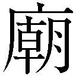

| とある飛空士への誓約 05 | |
| 犬村小六 | |
| 小学館 (2014) | |
小学館ｅＢｏｏｋｓ
とある飛空士への誓約５
犬村小六
イラスト 森沢晴行
主な登場人物
［坂上清顕（さかがみ・きよあき）］
元セントヴォルト海空軍少尉候補生。
ウラノスのスパイ容疑で幽閉されている。
［イリア・クライシュミット］
セントヴォルト海空軍少尉候補生。
「ヴォルテック航空隊」所属。
［ライナ・ベック］
セントヴォルト海空軍少尉候補生。
「ヴォルテック航空隊」所属。
［紫かぐら（むらさき・かぐら）］
元セントヴォルト海空軍少尉候補生。
ウラノスのスパイ容疑で幽閉されている。
［バルタザール・グリム］
セントヴォルト海空軍作戦本部
多島海方面部局情報課局員。少尉。
［セシル・ハウアー］
セルファウスト士官学校四回生。
［ミオ・セイラ］
「エリアドールの七人」の一人。
ニナの身の回りの世話をする。
［ニナ・ヴィエント］
ウラノス王位継承権第二位。
ウラノス創世神話に「救世主」として預言されている。
［イグナシオ・アクシス］
ニナの専従騎士。
［ウルシラ］
ニナの家庭教師を務める伯爵夫人。
［ゼノン・カヴァディス］
ウラノス情報部参謀将校。
［デミストリ］
ウラノス王位継承権一位の王子。
八．
葬送の調べはプレアデスの雲に絡まり、隊列の狭間を流れすぎてゆく。
高度二千メートルを飛翔するウラノス王都プレアデスでは、地表面と同じ高さを雲が流れゆく光景は珍しくないが、しかし二万名もの兵士が一級礼装に身を包み、二百もの方陣を組んで雲を突き破り行進するさまはこの世ならざる荘厳さだ。
はかない弦楽の旋律は嫋々と、行進を聖前の広場へと導いていく。
石畳で舗装された広場が軍人たちに埋め尽くされて、その中央を裂き、四頭立ての馬車が大きな棺を引いてきた。
棺掛けには、王冠と剣をあしらったウラノス王家の紋章。棺のなかでは三週間前に崩御したウラノス王オルテガが腐りかけた身体をドライアイスの寝床に横たえている。市井のひととして生まれたならば翌日には葬られたはずだが、生前に継承者をはっきりと取り決めなかったその怠慢の結果、三週間に及ぶ長い協議が終わるのを氷の寝床で待つしかなかった。
葬列の見物に詰めかけた民衆たちも、偉大な先王の死を悼み──あるいは物見遊山の気分が表に出すぎないよう──軍楽隊の奏でる切ない調べに頭を垂れて、車から降ろされた聖棺が儀仗兵に担がれ、聖の階段を上るさまを言葉を発することなく見送っていた。
棺の後方から、黒衣の王族たちがものものしい重装騎士に四方を取り囲まれ、粛々とつづいた。階段を上りきり、建物の前面を支える円柱の並びに迎えられる。
棺はそこで止まり、楽隊の葬送曲がやんで、七月の空へ高く澄んだ鐘が響いた。十七名の王族たちは一輪ずつの花を棺に手向け、横一列へ広がって、それから棺だけが聖へ入っていく。オルテガはこれから歴代ウラノス王の傍らで永遠に眠るのだ。
棺が消えて、静寂に閉ざされた数万人の群衆へ、搭鐘が三度鳴って消えた。
用意されたマイクを通じて、最初に兵と民へ語りかけたのは聖アルディスタ教皇府長、教皇イラストリアリだった。
「降りかかった困難の巨大さに打ちひしがれたとき、我々は聖アルディスタの導きが常にともにあることを思い返す必要があります」
白く豊かな眉の下、イラストリアリの奥まった瞳が、深い慈愛の色をたたえる。
「子らよ、求めよ。求めるものにのみ祝福は来たれり。......聖アルディスタの教えのとおり、失われた星の光は戻りません。我々は追悼と感謝を偉大な王へ捧げ、それから、また前へと進まねばならぬのです」
齢六十を超えるイラストリアリの芝居けのない言葉は、兵士たちと民衆へ静かに受け止められている。
腐れ坊主が。
イラストリアリの背後で演説を聞き流しながら、ウラノス王位継承権一位、デミストリ王子は素知らぬ顔で悪態を胸の底へ投げ落とした。
──いつか殺す。
表情には一片もにじませることなく、そんな呪詛をおのれの内心へ吐きかけて、イラストリアリの細い背へ目線を投げる。
「賢王オルテガの築き上げたひとつの偉大な時代が過ぎ去り、いままた、新たな歴史を我々は紡ぎ出そうとしています。そして聖アルディスタは我々に選択肢を投げかけました。わたしたちは智慧を尽くし、できうる限りの慎重さを以て、王位継承者がいまこの時代にふたり存在する意味を み上げねばなりません」
み上げねばなりません」
数万人の群衆はしわぶきひとつせず、イラストリアリの演説に聴き入っている。オルテガ崩御の第一報が王都プレアデスを駆け巡ったとき、五百万市民全員の興味は「次の王が誰か」にむけられた。
順当に行けば、第一王子デミストリが即位していたはずだ。まだ二十一歳と若いが、オルテガと正妻の間に生まれた長子であり、継承の正当性は疑いない。
しかし四年前「風呼びの少女」ニナ・ヴィエントがプレアデスへ降り立ち、事態は急変した。
王位継承権第二位、妾腹の王子マニウス・シードゥスが親善大使として聖泉の彼方の辺境国家へ赴き、その代わりに現れたのが、「天の覇者」ウラノスを「天地の覇者」へと導き、あまねく世界に恒久平和をもたらすと予言された伝説の存在であった。以後、かつてマニウスを担いでいた急進派は喜色満面でニナへ鞍替えし、ことあるごとに 世神話を持ち出してはデミストリを支持する保守派の足下を崩しにかかる。
世神話を持ち出してはデミストリを支持する保守派の足下を崩しにかかる。
「ウラノスは二千年もの間、ニナ・ヴィエントの出現を待ちわびていたのです。聖アルディスタの予言されたとおり、我々はニナを次の王に据えねばならない。それがウラノスと聖アルディスタとの間に交わされた契約なのだから......」
したり顔でそんな言葉を大衆へ吹き込む政官財の急進派を、王子デミストリは尽きせぬ憎しみとともにこの三週間眺めてきた。父オルテガが存命であったころは不穏な動きのかけらも見せず、ニナを彼方の離宮へ追いやって素知らぬ顔をしていたタヌキどもが、崩御以来の三週間、陰日向を問わず堂々とニナの継承権の正当性をがなりたてる。
急進派の裏で糸を引いているのは、いま民衆へ語りかけている教皇イラストリアリと見て間違いない。尻尾はまだ摑めていないが、デミストリはそう確信している。政治のことなどなにもわからないニナを操り人形にして、ウラノス王府への教皇府の影響力を絶対のものにする魂胆だろう。
イラストリアリは本心などおくびにも出さず、いかにも慈愛深そうな聖職者面を保ったまま訥々と民へ語りかける。
「しきたりにより、我々は次の王を五か月後、十二月十一日の聖アルディスタ聖誕祭において決めることとなります。聖アルディスタの教えを信じ、ふたりの偉大な継承者に敬意を以て、選ばれたひとりにウラノスの未来を委ねましょう。予言のときは来たれり。ウラノスがあまねく天地を統べるそのときを、わたしたちはこの眼で見ることとなりましょう。導きに感謝を」
指笛も歓声もない。イラストリアリがそろえた指先を眉間から顎へ下ろし、民は頭を垂れて、亡き王への追悼と、聖アルディスタの導きに感謝の祈りを捧げる。
デミストリも神妙な面持ちで目線を下ろしつつ、誰にも気づかれることなく、自らの右隣へ佇む礼装の少女を片目だけで睨んだ。
白銀の髪。野葡萄色の瞳。イラストリアリにあてがわれた大仰な白の修道服に身を包み、いつもと変わらぬ無表情を広場の群衆へ興味なさげにむけている。
──ニナ・ヴィエント。
この女さえ現れなければ、自分はすんなりと王になれたのだ。かつて競争相手であったマニウスは頭は切れるがいかんせん妾腹であり、王位継承の正当性においてデミストリに比肩するものではなかった。しかしニナには「聖アルディスタ」という絶対的な後ろ盾が存在する。二千年前に現人神により出現を予言された救世主、というニナのキャッチフレーズの求心力はデミストリをしのぐほど強力だ。
──どうなるか、わからない。
デミストリを支持する保守層は現在、王府の主流を占めてはいる。元老院も下院も大半はオルテガ時代に旨みを吸った連中だ。しかしここから五か月の急進派の運動次第では、どう転ぶか予断を許さない。なんといっても教皇イラストリアリが不気味すぎる。指先ひとつでウラノスはもちろん、国籍を問わず、この星の全大陸の聖アルディスタ信徒を動かせる存在だ。イラストリアリがニナの支援に本腰を入れたなら、ウラノス王府は真っ二つに割れるだろう。
──忌ま忌ましい女だ......。
デミストリの胸中など我関せず、の表情を保ち、ニナは陶器人形そのものの佇まいで、所作のどこにも心境を映さない。聞けばニナは幼いころから政争の道具として担ぎ上げられてきたらしく、今回の王位継承騒ぎもきっと、自分の意思と関係ないところで成立していることを知っているのだろう。戴冠したならこの世界を手中に収めることもできるというのに、欲に駆られた衆生の狂騒を諦観するようなその態度がますます、デミストリを苛立たせる。
──いまに見ていろ。その能面を粉々にしてやる。
デミストリとて、急進派の活動をただ眺めているだけではない。すでに複数の対応策は打ってある。計画どおりに運んだなら、イラストリアリに地団駄を踏ませ、泣き叫ぶニナにあらゆる辱めをくれてやることもできるだろう。
──のこのことプレアデスに来たことを後悔するがいい、ニナ・ヴィエント。
大衆に背をむけて建物へ入り、聖へつづくアーチ型の天井の下を歩みながら、デミストリは自分と肩を並べて当然のように王の墓への道を行くニナへ無言の呪詛を送りつづけた。
──おまえのいるべき場所は玉座ではない。
──おまえにふさわしいのは、貧民窟の売春宿だ......。
聖入り口の青銅の扉が重く軋みながらひらき、デミストリは暗い決意を内の闇へ流し込んだのち、父オルテガが歴代王の傍らに横たわるさまを神妙な表情で見届けた。
†††
ラミア離宮の日常は諦観とともにある。
ゼノン・カヴァディスの私邸からここへ引っ越してきてから一週間が経ち、新しい生活にもずいぶん慣れたミオ・セイラはそんな印象を抱きながら、バケツと雑巾を手にニナ・ヴィエントの部屋を掃除していた。
離宮に住まう使用人は三人のお手伝いと五人の庭師、それにミオを入れて九人。加えて、ニナが祖国から連れてきた家庭教師がひとりと、近衛兵が二十人いる。だから主ニナ・ヴィエントを合わせると、全部で三十一人が常駐しているわけだが、人数のわりには物静かで寂しい雰囲気が広い敷地には常に垂れ込めている。
ニナ本人の寡黙さが乗り移ったような枯れた佇まいの離宮だが、いまのミオにとってはそれほど暮らしづらいものではない。ゼノン邸にいたころの身の毛もよだつような暗殺訓練からは解放され、ニナの話し相手を務めるだけの仕事内容は、拍子抜けするほど単調なものだった。
だいたいそもそも、仕事と呼べるほど大したことはしていない。
ゼノンから受けた指示は「ニナの孤独を癒やし、仲良くなれ」という漠然としたものだが、ニナに世間話など仕向けてみても「はい」だの「ええ」だの「そうですね」だの気のない返事が届くのみで、会話が成立しない。ミオもそれほど積極的にゼノンの指令をこなしたいわけではないので、一応のコミュニケートを試みて失敗したあとはさっさとニナの前を辞して庭師の仕事を手伝ったり使用人たちの食事を作ったり非番の近衛兵の雑談の相手をしたり、余った時間を好きに使うことができている。
今日は朝早くからニナは近衛兵たちを引き連れて山を下り、エヴァンゲリス地区へと出むいている。先王オルテガの葬儀に出席するためだ。王位継承権一位の王子デミストリとニナが肩を並べて参列しているとは、日ごろのニナを見ている身からするとなんだか信じられない。円塔の最頂部の自室に引きこもり、ろくに日の光にも当たらず他人と会話もしていない様子のニナがいきなり魑魅魍魎が跋 する政治舞台に上がってまともに立ち振る舞うことができるのか、いらぬ世話ながら心配にもなってくる。
する政治舞台に上がってまともに立ち振る舞うことができるのか、いらぬ世話ながら心配にもなってくる。
床とガラスの掃除を終えて、本棚のほこりをはたいていると、誤って棚の上の聖像を落としてしまいそうになった。
「やっ......！」
落下寸前のところで像を受け止めたが、焦った拍子に身体が棚にぶつかって、今度は収まっていた茶封筒が床に落ち、中身がばらまかれてしまった。
「もう......！」
自分自身に憤りながら、床に跪き、封筒の中身を拾い上げて元に戻す。見ては悪いとは思うものの、それが手紙であることは戻す過程でわかってしまう。
複数のひとびとから送られたたくさんの手紙だった。いずれも、お別れの言葉が記してあるようだ。宛名はニナではなく、一様に「クレア」という名前が記されていた。
──ニナの本名かしら......。
──ずいぶんいっぱいの手紙。お友達がたくさんいたのね......。
茶封筒を戻し終えると、窓の外はもう日が暮れていた。そろそろニナが戻ってくる時間だ。バケツを持ってニナの部屋を出ようとしたとき、家庭教師ウルシラ伯爵夫人と鉢合わせした。
「こんばんは、伯夫人」
挨拶して傍らを通り過ぎようとしたミオを、ウルシラが呼び止める。
「ミオさん、あなたにお話があるのです」
「......わたし......ですか？」
ミオは怪そうに小首を傾げ、ウルシラを見上げた。五十代後半とおぼしいこの せて神経質そうな女性は、銀縁眼鏡のつるを指先で押し上げると、レンズの奥の細い目をわずかに翳らせる。
せて神経質そうな女性は、銀縁眼鏡のつるを指先で押し上げると、レンズの奥の細い目をわずかに翳らせる。
「お嬢さまのことで」
「ええ」
なんとなく、なにを言われるかの予想はついた。ウルシラの言葉は、ミオの予想と寸分たがわぬものだった。
「見ていておかわいそうで。お嬢さまご自身も、わたしたちに迷惑をかけまいと、ことさら気丈に振る舞ってはおられるのですが......なんだか無理に元気さを装っておられるように見えてしまって。同い年のお友達がいらしたら、もう少しは、毎日を楽しく過ごすことができるのではないかと思いますの」
春の雨のような口調でウルシラはそう頼んでくる。まるで自分の娘を思いやる母のようにも見える。ニナの勉強を見ているうちに、情が移ってしまったのだろう。年の離れたウルシラではニナと友人関係になれるわけもなく、ニナと同い年、十九歳のミオにすがるしかない様子。
「あまり焦ってもしかたありませんし。時間をかけてゆっくり、信頼関係ができればいいかな、と」
ややもすると冷たい調子で、ミオはそう返事した。ミオからすれば、ただゼノンに命令されてここに来ただけだから、仕事に対する熱意があるわけでもなく、なんとなく適当に流しておけばいいかな、くらいの気分ではある。
「ええ。だけれど、このところお嬢さまは憂い顔をなさっていることが多くて。勉強にも身が入らない様子だし。できればミオさんがもう少し積極的に世間話を仕向けてみるなりしていただくと助かるのだけれど」
上品な口調ではあるが、これはつまりわたしの就業態度を批判されているのだな、とようやくミオは気づいた。もっと真面目に仕事しろ、とウルシラは言いたいらしい。
まあ、批判されてもしかたない部分はある。
少しだけ反省して、ミオは言葉を返した。
「そうですね。ですが、わたしもニナさまについてほとんどなにも知らないもので。世間話しようにも、なにがお好きでなにがお嫌いなのかわからないし、高貴な方同士の交友関係なども知りませんし。下手な話題など出してしまわないか、心配で」
「そういうことなら、イグナシオにご相談なさい。お嬢さまの専従騎士の最古参で、十代のはじめからいままでずっと、お嬢さまにお仕えしているの。わたしから話しておくから、明日の朝にでも彼と会って、お嬢さまに関する情報を仕入れなさい」
「あ、はい......」
「よろしくね、ミオさん。彼と会う場所と時間は、わたしから指定します」
ウルシラはほとんど一方的にそう取り決めると、さっさと螺旋階段を降りていった。
ぽつんとひとり、ニナの部屋に取り残されて、ミオはため息をつく。
「イグナシオ......。あいつね......」
この離宮にはじめて来たとき、応対に出た青年だ。男性とは思えないほど美しい顔立ちをしているが、物腰は横柄で尊大で、正直、苦手だ。あんなのにこちらから頼んで話を聞くなんてことをしたくない。だがしかし一応わずかながら給金ももらっているわけだし、真面目に仕事しているフリくらいはしなくてはならないのかもしれない。気は進まないが、この寂しい宮殿の日常を円滑に運ぶために、ウルシラの言うとおりにしておいたほうがよさそうだ。
しなければよかった。
「........................」
仏頂面のまま黙り込むイグナシオを面前に見やりつつ、ミオは深々と音のないため息を意識の奥へと落とし込んだ。
ウルシラに指定されたイグナシオとの面談場所は、心地よい朝の光が差し込む離宮の中庭だった。時間どおりに訪れたミオに対し、イグナシオは二十分以上も遅れての到着だったが、詫びの言葉ひとつなく、ただ不機嫌そうに無言で突っ立っている。
沈黙の狭間に小鳥がさえずる。
面倒くさいことこのうえないが、こちらから切り出さねば事態は動くまい。
「えぇ──っと......。というわけで、ウルシラ伯爵夫人からお話は通っていると思いますが。ミオ・セイラです」
「..............................」
脛を蹴り上げてやろうかしらと思いながらも、ミオは怒りを抑えて可能な限りに愛想のよさを取り繕い、長身のイグナシオを見上げる。
「イグナシオ・アクシスよね。一番古い専従騎士で、ニナさまの信頼も厚いとか」
「..............................」
返事しろよ。そう怒鳴りつけて尻を蹴り上げたい衝動をこらえ、ミオはつづける。どうやらイグナシオはまだ、ミオがここに来た目的を勘ぐっているらしい。まずはニナに危害を加える気がこちらにないことをわからせるところからはじめねば。
こういう気むずかしそうなタイプの相手は、バルタザールで慣れている。下手に隠し事などをするとますます意固地になって警戒を強めるので、ミオはいきなりおのれの手札を開陳することにした。
「わたしがここに来たのは、ニナさまの友達になれ、ってゼノンに命令されたからよ。仕事だからしかたないの。協力してよ」
「..............................」
「あなたがこのままニナさまをあの塔のてっぺんに閉じ込めておきたいなら、協力しなくていいけどさ。でもわたしの仕事的にはニナさまと友達みたいにどうでもいいこととか一日中会話して、できれば笑ってもらえたりすると最高なわけ。ゼノンもご機嫌になって、わたしの点数も上がって、ニナさまのご気分も晴れて、いいことずくめ。誰も損しない展開よね」
「..............................」
「ニナさまにじめじめした暗ーい感じでこれからずっといてほしいなら協力しなくていいわ。でも少しでも明るく元気になってほしいなら、わたしに協力して」
「..............................」
どれほど言葉を連ねても、イグナシオの表情は微動だにせず、ただずっと不機嫌そうにミオを見下ろすのみ。
ミオはこめかみに血管を浮かべ、引きつった笑顔でイグナシオを見上げ、胸の前で腕組みをして、黙り込んだ。
沈黙。
──なんだこいつ。
ミオはほとんど意地になって、絶対にイグナシオが口をひらくまでここから動かないと心に誓い、笑顔のままでイグナシオを睨みつけつづける。
沈黙。
イグナシオも、ミオも、ただ視線をお互いに据えたまま動こうとしない。
──絶っっっ対、負けない。
これでもかというほど視線に侮と軽と、話しかけられているのに返事もしない傲岸不さを批判する意思を織り込んで、イグナシオを睨みつける。
ようやく──かたくなに閉ざされていたイグナシオの薄い唇がひらいた。
「ウラノス人など、信用できるか」
想像の範囲内の冷たい声音だ。だがどうやら口は動くらしいことと、人間の言語を理解することが可能なのはわかった。
「言葉でわからない？ わたしはウラノスに連れてこられた人間よ。もとはセントヴォルト人です。いろいろと事情があって、ウラノスに味方するしかなくなったの。勘違いしないで」
「..............................」
「仕事だからしかたなくやってるの。ニナさまに危害を加えるつもりなんてない。わたしだってできれば適当にこなして遊んでたいけど、ウルシラさんに怒られちゃったから、こうやってわざわざあんたみたいな唐変木にお願いごととかしてるわけ。自分から率先してあんたみたいに偉そうな礼儀知らずと会話したくないから勘違いしないで」
イグナシオに説明しているうちに、ミオはだんだん腹が立ってきた。確かになぜこんなに一生懸命にゼノンの指令をこなしているのか、よくわからない。
──なにしてんの、わたし。
冷静に自分のやっていることを振り返ってみると、やりたくもない仕事を押しつけられて、その仕事をこなすためにこんな銅像男に平身低頭頼み事などしている意味がわからない。積もりに積もった怒りがどうしようもないほど噴き上がってきて、目の前に佇む銅像男に叩きつけた。
「ニナなんか関わりたくないよ。全然喋んないし。会話にならないのに相手しなきゃいけないの面倒くさいし」
「........................」
「だいたいなんでわたしが自分から頭さげてあんたみたいなナルシストに頼み事しなきゃいけないの。ふざけんな。いい加減にしろ。わたしだってエアハントの友達と一緒にいたかったわよ。ウラノスがニナをどうしようが知らないよ、どうでもいいよ、なんでわたしが無理やり友達になんなきゃいけないのよ、意味わかんないし」
「........................」
イグナシオには関係ないことも含めて怒鳴っているうちにやるせなくなってきて、なんだか涙声になってしまう。鼻水さえすすりあげながら、ミオは啖呵を切った。
「もういい、知らない、勝手にやってろ。ニナが引きこもろうが鬱病になろうが孤独死しようが知ったこっちゃありませーん。勝手にやっててくださーい。あんたは一生銅像みたいに地面見てること。動くなよ。一生動くな。あんたら全員枯れ木みたいにいつまでもこの宮殿で寂しそうに立ってりゃいいのよ、お似合いよ、そのまま死ぬまでひとりでぽつんと突っ立ってなさい。わたしそんなのに関わりたくないんで、こっちからお断りします。ゼノンに怒られるけどそんなのいまさらどうでもいいでーす。じゃーねー、ばいばーい」
ミオは地面を蹴り上げると、イグナシオに背をむけて、肩をいからせ歩み去った。
後ろから追ってくる気配もない。ずんずん歩き、使用人部屋に戻って、ほかに誰もいないことを確かめてから、ミオはひとり、壁をむいてうずくまって涙をぬぐった。
「なにしてんの、わたし」
種類を判別することの難しい激情がこみあげてきて、どうしようもない。イグナシオへの怒りが導火線になって、これまでおなかの底にたまっていた感情の爆弾に火がついたらしい。ぐすんぐすん、洟をすすり、服の袖であふれてくる涙をぬぐって、気持ちが収まるのを待った。
ようやく涙が止まり、ミオは立ち上がり、深呼吸をして、手 で髪の毛を整えた。
で髪の毛を整えた。
ニナもイグナシオもどうでもいい。知るか。勝手にやってろ。こっちは別に、誰にも興味ないし関わりたくもない。この屋敷でなにごともなく時間を過ごせればそれでいいんだ。
庭掃除でもしよう。そう思って、箒を片手に使用人部屋から庭に出ると、イグナシオが部屋の側壁に背中をもたせかけて突っ立っていた。
「........................」
ミオはイグナシオを無視し、そのままさっさと歩き去ろうとした。
「警戒は解かない」
イグナシオの冷たい声が、背中に送られた。しかしミオは振り返ることなく、そのまま屋敷の裏手の雑木林に回ると、箒で落ち葉を掃いた。
一時間もかけて一面をごみひとつなく掃き清め、ひとりでごみ袋に片付けていると、今度は雑木林のなかからイグナシオが現れた。
──どこから出てくんの。
思わずそう指摘したい衝動をぐっとこらえて、ミオは知らぬ顔で作業をつづける。
「ひとが話しているのに、立ち去るな」
イグナシオの機械的な叱責が届く。
どうやら他人を無視することには慣れているが、無視されることには慣れていないらしい。いい気味だ、と思いながら、ミオは返事もせずにそのままさっさとごみ袋を片手に裏庭を立ち去った。
焼却炉に中身をぶちまけ、掃除用具を片付けて、今度はじょうろに水をんで花壇に水をまいていると、遠くからイグナシオが毅然とした足取りで歩み寄ってくる。
「捜したぞ」
捜すくらいならついてくればいいじゃない。そう指摘したい衝動をこらえ、ミオは黙って花に目をむけたまま答えた。
「......なに？ ......話は終わったはずだけど」
思い切り低い声で、無愛想に言い放つ。イグナシオは今日はじめて表情を歪め、顔を背けて言った。
「......貴様を信用するわけではない。......勘違いするな」
なに言ってんだこいつ。
ミオもまた花だけを見つめて、あらぬ方向を睨んでいるイグナシオへ、言葉だけ放つ。
「あんたひとりで完結しないで、ちゃんと順序立てて話さないと、相手が置いてけぼりでしょう？ あんたがなにを信用してわたしがなにを勘違いしてんのか全然わかんないんですけど？」
「......ニナさまとの接触を認める、と言っているのだ。我々がこの地に至ることとなった概要については、貴様に告げられる範囲で教えてやれなくはない。......不満か」
相変わらず愛想のかけらもない語調だが、どうやら少しは胸襟をひらいているらしい。
──めんどーなひと......。
やっぱりバルタザールに似てる、と思いながら、ミオは花を見たまま事務的に告げる。
「助かります。ここじゃなんだから、どこか落ち着いて話せるところにでも」
「............裏山に防空監視所がある。......そこでいい。......その前に......ひとつ、訂正をしろ」
「............？」
イグナシオは決まり悪そうな目線を、ミオに戻した。
「......おれをナルシストなどと、呼ぶな」
ミオもようやく花から目を外し、イグナシオを見上げる。
「......？ ......ああ、さっきの悪口？ なに、図星なの？」
「............おれの知り合いに、それの本物がいる。......そういう呼ばれ方をされるとそいつの顔がちらついて......ムカつくんだ」
どうもこのイグナシオという青年は、外見は息を呑むほど美しいが、中身は意外と子どものようだ。
──変な人。
ミオはじょうろを地面に置くと、真摯な表情をイグナシオへむけた。
「じゃあ、その防空監視所とやらに行きましょう。いろいろ詳しいお話を聞かせてね」
そう言って、仏頂面のイグナシオを背後に従え、ミオはずんずんと山肌の石段を上っていった──。
山頂付近に木造のやぐらがあった。梯子で頂部まで登ると、プレアデスの景観が一望だった。
空飛ぶ島の全周と、外縁のむこうの青い空まで見晴らせる。敵機の襲来をいち早く肉眼で確認するための監視所だった。
ふたり並んで真っ青な夏空を見上げながら、ニナの過去に関する話を聞いた。
やぐらの手すりに背中を預けてイグナシオが語ったのは、ミッテラント大陸からもヴェステラント大陸からも遠く隔たった、聞いたこともない国家から飛び立った「空飛ぶ島」の物語だった。
あまり喋るのが得意でなさそうなイグナシオに、ミオは事細かに質問を重ねて前後関係を理解し、まるでおとぎ話のような遠い世界の物語に聞き入った。
噴き上がる海「聖泉」を航過する空飛ぶ島「イスラ」に、襲いかかるウラノス空中艦隊。
ニナは身分を隠し、飛空科に通う学生として航空機を操縦していた。戦いのさなか、たくさんの学友たちの死を目の当たりにした。風呼びの力はその当時はすでに失われていたのだが、ニナは大切なひとびとを守るために、その力を取り戻したいと願った。
絶望の旅路の果て、最後の決戦においてニナは失われた風呼びの力を取り戻し、ウラノス飛空艦隊を殲滅してイスラを救う。
しかし、それはウラノスにとって二千年前に予言された伝説の存在「風呼びの少女」の発見であった。
ウラノス外務尚書省次官ゼノン・カヴァディスは王位継承権第二位、マニウス・シードゥスとの人質交換を条件に、ニナ・ヴィエントを王都プレアデスへ親善大使として招待することに成功する。
以来、四年──。
ニナはいつか政治の表舞台に担ぎ出されるその日のために、この寂しい離宮で無聊をかこっている。
「ニナさまも、お友達と引き離されて、無理やりここに連れてこられたのね......」
話を聞き終えて、ミオはそんな感想をこぼした。昨日、ニナの部屋で見た手紙の束は、別れに際してイスラの学友たちから送られたものだろう。
切ない気持ちが、ミオの内側に広がっていた。
身分が違う、とはわかっているが、しかしスパイ活動を余儀なくされ、エアハント島を離れてプレアデスへ送られてきた自分の境遇とニナの身の上を重ね合わせてしまう。
高空の大気にさらされるプレアデスの街並みを見下ろして、ため息をついてから、ミオはイグナシオの横顔を見やった。
「......わかった。ありがとう。あんまり大したことはできないけど......でも、ニナさまと楽しくお話しできるくらいにはなりたいかな。寂しそうなのはなんとなくわかるし......」
「......気丈に振る舞っておられるが......やはり時間とともに、明らかに精神的に疲弊してきている。このままなにも変えずにいては、お身体にさわる」
「外に遊びに出かけたりとかしないの？」
「......したことは、ない」
「......もしかして、この四年間、一回も遊びに出ないとか？」
「...............」
決まり悪そうなイグナシオの無言が、なにより雄弁な答えだった。なんとなくミオは腹が立ってくる。
「......なにそれ？ ここのひと、本当にニナさまを心配してるの？ なんでそんなになるまで放っておいてるの？ バカなの？」
「......王位継承権において、第一王子デミストリに比肩する方だ。ウラノス王宮にはニナさまの命を狙う輩は大勢いる。下手に街を出歩けば、命の危険にさらされる......」
「でも公務のときって正装っていうか変装してるでしょ、あの銀の付け毛とメイクで。普段着で付け毛外してすっぴんで出かければ誰もわかんないよ」
「敵対勢力......つまりデミストリ王子の支持派にはニナさまの素顔などとっくに割れている。さらに、ニナさまが私人としてこの離宮から出る際には王府の許可が必要なのだが、王府を通せば必然的にデミストリ派はニナさまが外出する日時と場所を知ることになる。暗殺者を派遣し、雑踏に紛れて邪魔者を消してしまおうとすることは、十分に考えられる。危険が大きすぎるのだ」
ミオは少し考え込んでから、イグナシオを見上げた。
「そう......。それならボディガードがいればいいわけね」
「........................」
「最古参の専従騎士なら、どんな困難な状況であろうとニナさまを守り抜くもんね」
「おい......」
「ニナさまを遊びに連れていって、元気を出してもらうためよ。あなた、まさか、新参者のわたしなんかにそんな大事なお仕事を丸投げしたりしないわよね。初日にわたしのこと不審者扱いして脅してきたくらい仕事熱心だもんね。不審者を追い払うのが仕事なんだからもうちょっと真面目に仕事しなさいよ」
ひと息にまくしたてると、イグナシオの渋面がますます深くなった。ミオはさも当然の表情を保ったまま、イグナシオとこの屋敷のひとびとの怠慢を糾弾し、ニナの孤独を謳いあげる。それほど仕事熱心なわけではないが、エアハント島を離れて以来、積もりに積もった鬱憤がイグナシオへの八つ当たりをやめさせない。
二十分後、イグナシオが音を上げた。やつれた表情をプレアデスの景観へむけたまま、ニナの外出許可を求めること、及び自分がボディガードを務めることを確約し、疲れた声を絞り出す。
「......そこまで言うなら......貴様にニナさまの相手を任せる。同い年の女同士だし......ニナさまの孤独を癒やせるかもしれない」
ミオは勝ち誇った表情で頷いてから、少しばかり言いすぎたことを悟った。イグナシオがあまりに神妙な態度でミオの糾弾を受け止めるから、ついつい日ごろのストレス解消とばかりにきつい言葉を並べてしまった。
ここまで言ったからには、やるしかあるまい。
ミオは腹を据えた。
「うん。任せて。どうしようかな。どこにお出かけしよう。できればエヴァンゲリスがいいけど、警備もしやすい観光名所みたいなところがあったりしないかしら。わたしもプレアデスのこと、よく知らないから......」
「人混みは避けてくれ。おれが常に十メートル周辺を目視できる場所が望ましい。そうだな、歴史記念館あたりなら、ひらけているし人間もまばらだし、ニナさまも興味をもたれるかもしれないが......」
「堅苦しい場所だけじゃなくてさ、楽しいところに連れていってあげたいなー。ニナさまに笑ってもらえたら作戦成功なわけだし」
「事前に場所を決めておけば、あらかじめ私服の衛兵を配置して護衛することはできる......。王府への外出願いには事細かに行く先を記載する必要はあるが、守らなければ罰則があるわけでもない。王府へは偽りの外出先を知らせ、実際には全く違う場所を訪れたなら、刺客も網を張って待つことはできない......」
「うんうん。有能な専従騎士がぴったり護衛してるから大丈夫だよ。だったらさ、映画や舞台観たり、流行りのレストランに入ったり、大通りでお買い物したりも全然ＯＫじゃない？ ニナさまだって女の子だもん、小物とかかわいい服とか欲しいはずだし、おいしいものも食べたいはずだよ？」
イグナシオとミオは顔を突き合わせて相談しながら、ニナを無事に、かつ楽しく外出させるための策を練り上げた。
ああでもないこうでもないと考えを り合わせながら、ミオは楽しんでいた。もう長い間、こうしてあれこれと明日以降のことを考えたことなどなかった気がする。久しぶりに気持ちが高揚するのを覚えながら、ミオは結局午前中いっぱいをイグナシオとの打ち合わせに費やし、ついにニナとのプレアデス観光計画を完成させた。
り合わせながら、ミオは楽しんでいた。もう長い間、こうしてあれこれと明日以降のことを考えたことなどなかった気がする。久しぶりに気持ちが高揚するのを覚えながら、ミオは結局午前中いっぱいをイグナシオとの打ち合わせに費やし、ついにニナとのプレアデス観光計画を完成させた。
一週間後──。
透明な七月初旬の日差しが降り注ぐ朝。
ミオはワンピースにレースのついたショートボレロを羽織り、少し踵の高いサンダルを履いて、離宮の表門前で待機していた二頭立ての馬車に乗り込んだ。そして笑顔で、対面に行儀よく腰かけた先客に挨拶をする。
「いいお天気でよかった。ニナさま、今日はよろしくお願いします！」
「......はい」
いつもと同じ、はかなくも頼りない返事。
付け毛もメイクも修道服も外したニナ・ヴィエントは、質素な白いブラウスに紺のスカートを合わせただけの地味な服装で、背筋を伸ばして堅い座席に座っている。
あまり大仰な馬車で出かけると人目を引いてしまうため、庶民が乗る定員二名の馬車を借り受けて今日の外出に使用することにした。正対して座るニナとミオの膝がぶつかるくらいになかは狭い。
「わたしもプレアデスって見て回ったことないんで、案内役にはむいてないですけど。でも今日は楽しみましょう！」
「......ええ」
ニナの様子は全く楽しそうでもなく、なんとなく「これも仕事だからしかたない」みたいに割り切っているようにも見える。他人から担ぎ上げられ利用されることに慣れきってしまい、自分の意思というものを完全に失ってしまっているような。
──ちょっとでも、元気が出るといいな......。
──わたしも張り切らないと、暗くなっちゃったら意味ないし。
ミオ自身もこの一年、明るい気持ちになったことがない。ずっと重いものを抱えて、自分を殺して生きてきた。でも今日はニナを元気にする、という仕事があるから、無理やりにでも明るく元気に振る舞おうと決めている。
ミオは窓の外へ目を送って、馬車のすぐ近くで見送りに立っているウルシラ伯爵夫人へ挨拶をした。
「では行ってまいります。いろいろありがとうございました」
王府への外出願いの提出と許可の受領まで、面倒な役所の手続きはすべてウルシラがやってくれた。もしも王府から、偽りの訪問先を記載した件について後日糾弾されたなら、その際の対応もウルシラがやってくれるとのこと。
「お願いしますね、ミオさん。お嬢さま、どうかご無事で。必ずご帰還ください」
まるで出征する兵士を見送るような悲壮感がウルシラから漂っている。ニナはわずかに頷いて、かぼそい声で返事をする。
「行ってまいります」
「イグナシオも。頼みましたよ」
ウルシラは馬車の背後に控えるイグナシオへ声をかける。
「お任せを」
厚手のチュニックに乗馬ズボンを合わせたイグナシオは、葦毛の馬に騎乗して、鞍上から会釈を返す。馬具の飾り付けは簡素なもので、腰に一振りの短剣を差し、ヒマを持てあました中流貴族の御曹司が目的もなく散策している風情。ほかに十二名の衛兵が、今日これからニナが訪問する予定の場所にあらかじめ私服すがたで潜伏しており、不審者へ警戒の目を光らせている。
できうる限りの準備はした。
あとは今日一日を満喫するだけだ。
ミオは後ろを振り返り、御者台の御者へ声をかけた。
「では、行ってください」
鞭が朝の大気を割り、馬車はゆっくりと動きはじめる。
「お嬢さま、どうかお気持ちを強く」「ご帰還をお待ちしております」
居並んだものたちは大仰すぎる言葉を投げかけながら、ラミア離宮を出ていくニナをいつまでも見送っていた──。
ラミア離宮を出て、山の中腹の衛兵たちの詰め所を越え、枝葉の天蓋を見上げながら細い山道をくだっていくと視界がひらけた。プレアデス左岸の平野部へ出たのだ。
彼方、真っ白な積乱雲の連なりが青空に映えていた。オリーブ畑の畝を越えて、土を踏み固めた幹線道路の延びる先、プレアデスの中心地、エヴァンゲリス地区の高層建築物が真夏の大気に霞んでいる。
馬車の窓のむこうを眺めながら、ミオはなにげなく話しかけてみる。
「ニナさま、エヴァンゲリスに行ったことはおありですか？」
「......公務で何度か。......私人としては、今日がはじめてです」
「わたしも行ったことないんで全然不案内ですけど、一緒に道に迷いましょうねー」
冗談めかしてそう言って微笑みかけてみると、ニナもぎこちなく口元をゆるめて、愛想笑いじみたものを返してくる。
──一応、世間的なコミュニケートはとれるのよね......。
その事実はこれまでに接近を試みてわかっている。しかしそこからもう一歩踏み込もうとすると、ニナの周囲に張り巡らされた柔らかい皮膜に吸収されて反応が返らなくなる。今日の目標はこの皮膜を突破して、ニナの本当の感情に触れることだ。
ニナからはすぐに微笑みらしきものが消えた。ただ鳥のさえずりと馬蹄ののどかな響きだけがふたりの間を流れすぎる。馬車が道の湾曲に沿うと、夏の陽光が差し込んで、ニナの横顔を白く浮き立たせた。
──それにしても。美人よねえ......。
こうして至近距離に膝をつき合わせて座っていると、素顔のニナの可憐さにため息が漏れてしまいそう。つややかな黒髪と、けがれのない野葡萄色の瞳に、触れただけで粉々に砕け散ってしまいそうな危うい均衡の保たれた目鼻立ち。年相応に学生生活などを送っていたら、きっとかなりモテたに違いない。
──恋人とか、いなかったのかな。
一週間前にイグナシオから聞いた過去の物語では、それらしい人物は出てこなかったし、ミオも質問しなかった。イグナシオは「おれの口からは話せない内容がある。おまえが聞き出すぶんには、止めない。話すかはニナさま次第だ」とも言っていたから、空飛ぶ島イスラにおいて、なにかしらの恋物語があったのかもしれない。
──これだけ美人でかわいくて、性格も控えめで......。
──しかも学生生活を送ってた、っていうし。普通なら恋人くらいいるよねえ......。
下衆の勘ぐりだとはわかっているが、十代の少女同士なのだから、そういう話もしてみたい。高貴なひとびとの恋物語は、雑談するにはもってこいの題材であるし。
一時間ほどかかって、馬車はようやくエヴァンゲリス地区へ入った。
道は石敷きとなり、交通量も増える。富裕層の乗る四頭立てや八頭立ての馬車、水素電池自動車、二階建てバスに装甲車輌が行き交い、道行くひとの着ているものも色鮮やかで華やかだ。一週間ほど前に国王が崩御しているが喪に服するような雰囲気はなく、市民たちの幸福そうな笑顔が行く先々に咲いている。
──本当に、楽園みたい。だけど。
──地上の戦争を生業にして、この富が生み出されている......。
ウラノスは地上国家に手ごろな金額で空中戦闘力を貸与する代わりに、貸し付け先の政治の中枢へウラノスの人材を入り込ませ、最終的に衛星国家として操る手法に長けている。ウラノスの傀儡となった地上国家は争いの災厄を撒き散らし、他国の地下資源を収奪して、資源をもたないウラノスへ貢納する。いま馬車の窓の外に咲いている笑顔の背後には、地上の民の屍が累々と横たわっているのだ。
ふとエヴァンゲリスの景観に、炎上するエアハント島の様子が二重映しとなった。通い慣れた士官学校が燃え上がり、友達と遊びに出かけた街が焼き尽くされ、大勢の罪のないひとびとが殺された。いまこの街を歩むひとびとは、そんな惨禍のうえにこの街の幸福が生み出されていることを果たして知っているのだろうか。
──そしてわたしは、そんなウラノスの手先になってる......。
ミオは唇を嚙みしめ、拳を握り込んだ。
胸が痛い。窓の外の光景が幸福そうに見えるぶんだけ、痛みが増幅される。
「......大丈夫、ですか？」
不意に、目の前から声をかけられて我に返った。
「......え？」
ニナの無表情が、ミオをまっすぐ見つめている。
「お加減が......よくないのでは？」
どうやらミオが具合を悪くしたと思っているらしい。ミオは慌てて笑顔を取り繕い、ニナへ返事する。
「あ、大丈夫です。ちょっと、昔のこと思い出しただけで」
「........................」
「ご心配ありがとうございます。もうそろそろ最初の目的地に着くんじゃないかな、楽しみですね！」
「......ええ。......あの......」
「はい？」
「......体調が悪いなら、無理にわたしに付き合ってくださらなくても......」
ニナは自信なさそうにそんなことを言う。ミオは慌てて顔の前で手を左右に振って、
「そんな、全然無理とかしてないです！ なにしろわたしのほうが楽しみにしてたくらいで、昨日なんて寝付けませんでしたし！」
冗談めかして照れ笑いを浮かべると、ニナもまたぎこちなく笑みを返した。どうやらこちらが思っている以上に、ニナは気を遣ってくれているらしい。
いいひとだな。
しみじみとそう思った。離宮を離れるとき、お付きのひとびとがあれだけ心配そうにしていた気持ちがミオにも少しわかる。みんな仕事の付き合いを超えてニナのことが好きで、大切に思っているのだ。
──悪いひとじゃないし、全然偉ぶらないし......。そりゃ、ファンになるよね。
納得していると、車輪が止まって御者が車内を振り返り、到着を告げた。ミオは元気に扉をあける。
「着いた！ 野外プールですよ、ニナさま！」
「プ、プール......？」
「プレアデス名物なんですって！ 大丈夫、水着ももう準備してありますから！ めいっぱい泳いでストレス発散しましょう！」
「は、はぁ......」
ニナは戸惑いながら、ぎこちなく頷いた。
積乱雲と青空と水飛沫、子どもたちの嬌声。
エヴァンゲリス地区の名物、王立プールパークは百人近い水着の男女と子どもたちでいっぱいだった。全部で大小五つのプールに、高さ二十メートル、全長二百メートル近いウォータースライダーまである。二千メートル下方からポンプで組み上げた海水をそのまま使用しているため水量も豊富、子どもから大人まで一日楽しめる人気のアミューズメントパークだ。
真っ青な夏空を背景にして、ニナとミオは水着に着替えてプールサイドに佇んでいた。
「ニナさま、すごいかわいいです！」
「........................」
「水着、勝手におそろいにしちゃいました！ サイズはウルシラさんにお聞きして！ よかった全然ぴったり、とってもお似合い！」
ミオは本心からはしゃいでしまっていた。水着はふたりとも、腰回りにパレオを巻いたセパレートタイプ。言葉に偽りはなく、ニナは本当に絵本から出てきた妖精みたいにかわいらしく、かつスタイルがいい。
「やーっ」
掛け声と一緒に、ミオは水へ飛び込む。水飛沫が跳ね、泡があがり、すぐに水面からミオの笑顔が突き出した。
「気持ちいいです！ ニナさま、おはやく！」
「........................」
ニナは硬い表情を崩さず、プールサイドで躊躇したまま動かない。もしかして泳げないのかしら、とミオが心配した次の瞬間、ニナはプールサイドに腰を下ろしておずおずと爪先を水へ浸し、それから入浴するようにゆっくりと水のなかへ肩まで浸した。
「......気持ちいい......ですね」
無表情にそう告げる。あまり気持ちよさそうには見えない。いつも円塔の最頂部に引きこもっていたから、いきなりこんな賑々しい場所で肌を衆目にさらすのは抵抗があるのかもしれない。最初に訪れる場所としては敷居が高かったかも、と思いながらも、ミオは笑顔を投げかける。
「泳ぎましょう！ 運動すれば元気出ますから！」
「......ええ。そうですね」
ニナがかすかに頰をゆるめたのを確認してから、ミオは水面から顔を出したままゆっくり、平泳ぎをはじめた。
気持ちいい。搔いた水面から波紋が広がって、強い日差しをきらきらと弾き返す。唇にあたる水は塩辛く、風のなかに潮が薫る。後ろからニナが同じく平泳ぎでついてくるのを確認して、ミオは二十五メートルを泳ぎ切った。
プールの底に足を着けて、息を大きくひとつついたところで、傍らから声をかけられた。
「お嬢さま方、おふたりですかな。よろしければお茶でもいかが」
びくりと背を伸ばして右隣を見やると、高級貴族の御曹司らしい青年がふたり、爽やかな笑みを浮かべていた。
あー......。
無言のため息を、ミオは水底へこぼす。
ニナの水着すがたを見たときに、こういう輩が現れるのではないかと危惧したが、予想よりも遙かに出現が早い。セントヴォルトの男性と同じく、ウラノスの男性もまた呼吸するように女性を口説く人種なのかもしれない。
気取った仕草で金髪をかきあげながら、御曹司はいかにも慣れた調子で誘ってくる。
「おふた方とも実にお美しい。下賤の輩どもが放っておくとは思えません。僭越ながらわたしどもが、おふたりをお守りいたしましょう」
ニナが追いついて、きょとんと立ちすくんでいた。もう片方の青年がすぐさまニナに近寄って、相棒と同じく濡れた長い銀髪をかきあげる。
「庶民どもの薄汚れた手があなたに触れるといけない。このわたしに可憐な花を守らせてください」
おえ──......。
という呻きをかろうじてこらえ、丁寧に拒絶しようと口をひらきかけたミオだが最初の一語を発する前にその必要はないことがわかった。
ニナの御前にはすでに海水パンツを身につけた専従騎士が立ちはだかり、凄絶な眼差しをふたりの御曹司に突き立てていた。
「........................」
ひとことの言葉も発しないが、イグナシオから放ち出される殺気は目に見えるかのよう。
御曹司は一瞬気圧され、わずかに後ずさりする。イグナシオがいつ接近してきたのか、ミオも気づかないほどだった。なにも知らない部外者が不意を打たれるのはしかたなかろう。
さらに、上半身が剝き出しだからこそ、互いの戦闘力が露わにもなる。イグナシオは決して筋骨隆々ではないが、しかし鍛え込まれた肉体は金剛石のごとく引き締まり、筋肉に無駄がなく、そして大小たくさんの古傷が腕、胸、肩、腹部にはしっていた。
戦場でついた傷だ、とミオにはわかった。裂き傷、刺し傷、刀傷に銃らしいものもある。多くは身体の前面についていて、背中にはほとんどない。イグナシオの過去はなにも知らないがおそらく、ニナを守ってできた傷だろう。
「......失礼。これから打ち合わせがあるのを思い出しました......」
「......わたしも、ビジネスが......」
戦ってはならない相手だと一目で悟ったらしく、御曹司ふたりはそそくさときびすを返し、優雅なクロールで泳ぎ去っていった。
イグナシオは非難めいた目を、今度はミオへむける。
「........................」
相変わらずひとことも発しない。だがその表情は明らかに「だからおれはプールはやめろと言ったのだ」と告げている。
ミオも一瞬、気圧された。しかしすぐにひらきなおって、睨み返す。最初の目的地にプールパークを選んだのはミオだ。イグナシオの反対を押し切っていまここにいる。
「なによその目。別にプールでいいじゃん、楽しいし」
「........................」
「だから言いたいことあるならはっきり言いなさいよ。男でしょ。なにその非難がましい目つき、いらいらするんですけど」
まくしたてると、イグナシオはこれ見よがしにいやみったらしいため息をひとつこぼし、それからいかにも言いにくそうに、ぼそぼそと告げる。
「プールはやめろ、と言ったのは......ニナさまはもちろんだが......おまえが原因でもある」
「え？ わたし？ なんで？」
きょとんとして尋ね返すと、イグナシオはますます言いづらそうに顔を歪め、それからあらぬ方向へ目を送って告げた。
「おまえとニナさまがふたりして並ぶと............かなり人目を引く。さりげなく周囲を観察してみろ」
言われてミオは周囲へちらりと視線を回してみた。家族連れや若者たちが楽しそうに泳いでいるだけで特に異常は感じない。
「......男だ。若い男を注視しろ」
イグナシオの注釈を受けて、さりげない視線を若い男性に絞って送ってみる。
すると。
確かにちらちらとこちらを見るものが多い。視線が集まる先はニナと、ミオ自身だ。少し目線を回してみただけで、数人の青年と目が合い、なにやら生臭い悪寒が背筋に伝って、鳥肌が出てしまった。
ミオは思わず水中に肩までつかり、イグナシオを見上げる。
「何人かこっち見てるけど......ニナさまの正体に気づいたのかな」
「......違う。......本当に自覚がないのか？ ......おまえ自身が衆目を集めてしまうのだ。普通の装いでもそうなのに、さらに水着など着てしまったら......」
言いづらそうなイグナシオの言葉で、鈍いミオもようやくイグナシオの言いたいことを悟った。
エアハント士官学校にいたときもそうだった。
ミオ自身は望んでいないのに、多くの男子生徒が交際を持ちかけてきた。エリアドールの七人としてもてはやされた時代も、ミオは特に容姿に関して言及されることが多かった。ゼノンもミオの外見を武器に女性スパイとして育てることにご執心だ。まわりにそんな評価を受けつづけてきたから、ミオも自分の外見が異性にどう評価されるのか、全く知らないわけではない。
だがしかし。
なんだか腹が立つ。肩まで水につかったまま、イグナシオを睨む。
「なによ。ニナさまが男に声かけられるのイヤなら、もっとぴったり護衛してればいいじゃない。あんたが近くにいればまわりも近づいてこないのに。離れたとこにいるから変なのが近づいてくるんでしょ。もっと真面目に仕事しなさい」
「........................」
「ね、ニナさま？ 泳ぐの楽しいですもんね？ 気持ちいいですよね？」
話を振られて、ニナはきょとんとしたまま、おずおずと頷いた。
「......はい。......水泳は久しぶりで......気持ちいいです」
はかなそうに返事をする。ミオは水中に身を浸したまま、右拳のガッツポーズをこれ見よがしにイグナシオに突き上げる。
「はい、勝ちー。まだ泳ぎまーす。あんた、ぴったり護衛してなさいよ、いやらしい目でニナさま見るひとがいたらあんたの身体でガードしなさい。せっかくおそろいの水着買ったんだし、まだまだ泳ぐもんねー」
「........................」
イグナシオはいかにもイヤそうに表情を歪めたまま、唇を嚙みしめる。ミオはあかんべーと舌先を出して、ニナを促し、また平泳ぎで泳ぎ去っていく。
「自覚しろよ、頼むから......」
すいすいと前後に並んで泳いでいくミオとニナを苦々しげに見やり、舌打ちしてから、イグナシオはしかたなさそうに平泳ぎでふたりの後ろについていった。
ニナがモテることはイグナシオも知っている。しかしミオにはニナと同等か、あるいはそれ以上に異性の目を惹きつける魅力がある。はじめて会ったときからそれは感じていたが、肉体の線まで露わになるこうした場所だと、それはほとんど魔力といっていい。ここに来てからずっと、若い男はもちろん家族連れの父親から初老の紳士に至るまで、ミオの肢体に下卑た目線を絡みつけている。
──その容姿のせいで、ゼノンに目をつけられたのかもな。
女スパイにとって、異性を惹きつける外見的魅力はそれだけで強力な武器となる。セントヴォルトから無理やり連れてこられた、みたいなことを先日ミオは言っていたが、本人の意思に反していまここにいることはどうやら疑いないようだ。ミオの背後に横たわるなにやら複雑な事情が、言葉を交わすほどに嗅ぎ取れる。
「妙な女だ。まったく......」
ニナのためならしかたないと割り切れるが、しかしミオまで一緒に護衛しなければならないことに若干の不満を覚えつつも、イグナシオは戦場の匂いに満ち満ちた肉体の盾を駆使し、矢束のように降り注ぐ男たちの視線から乙女たちを健気に守りつづけた。
文字どおりに身体を張ったイグナシオの盾に守られ、ニナとミオは笑顔を浮かべて、それから一時間以上もずっと、くたくたになるまで泳ぐことができた。
「あ──、よく泳いだ──。気持ちいいな──。やっぱプール最高──」
プールサイドのデッキチェアに濡れた身体を横たえて、売店で買ったアイスクリームを片手にミオは満足げに伸びをする。
「ニナさま、大丈夫ですか？ ちょっと泳ぎすぎたかな？」
「いえ......。運動は久しぶりですが......楽しいです」
デッキチェアに行儀よく腰を下ろしたニナはぎこちなく笑みを返して、ミオと同じバニラアイスをちろりと舐めた。
「うわー、これ焼けちゃうなー。でもいいや、太陽気持ちいいし！」
真っ白な肌を惜しげなく強い日差しにさらして、ミオは手足を伸ばして完全に午睡の体勢だ。ニナはなにげなくミオの肢体へ目を送り、腰に巻いたパレオの隙間から覗くミオの左 に、大きな縫合痕があることに気づいた。
に、大きな縫合痕があることに気づいた。
「........................」
けがれのないミオの身体には不釣り合いな傷だった。思わず目が引き付けられてしまったとき、ミオが顔をニナにむけた。
「ニナさまも寝ちゃえば......って、どうしました？」
「あ、いえ......すみません」
ニナは決まり悪そうに目を外す。パレオがはだけて、そこからの古傷が顔を覗かせていることにミオは気づいた。
「ああ、これですか？ 昔、飛空艇に乗っているときに、機体の破片が刺さっちゃって。これでも戦場に出たことあるんですよー」
ミオはあっけらかんと笑いながら言う。ニナはおずおずと視線を戻し、
「......すみません」
「だからなんで謝るんですか。名誉の負傷ってやつです。すごい出血しちゃって、死にかけたんですけど、仲間が助けてくれて......」
説明しているときに、不意に、エリアドール飛空艇の仲間たちの顔が浮かんだ。
あのとき──左を負傷し、失血死を待つしかなかったミオのために、ほか六名の仲間たちは命をかけて危険な夜間着水に挑んでくれた。最も強硬に着水を主張し、ついに成功させたのは清顕だ。
清顕のおかげで、いまこうして生きている。
この傷が、そのことを思い出させる。
「......そのおかげで......生き残って......」
気丈さを振り絞り、明るさを装おうとしたが、うまくいかない。
悲しみと自責と後悔が胃の腑から突き上がってきて、ミオは顔を歪め、言葉を飲んだ。
──清顕。
彼のことを思い出すだけで、平静を保てない。
ニナから顔を背け、感情の揺らぎを隠す。
「あの......本当にすみません。その......ミオさんの個人的な事情を、索するつもりなどはありませんので」
ニナの頼りない詫びの言葉が背中に届いた。文字面ではなく、ニナが本心から謝っていることが言葉から伝ってくる。なんとか感情を抑えて、ニナへ顔をむけた。
「そんな、もったいないです。あの......ちょっと、いろいろ思い出しただけなんで」
「........................」
ニナは心底申し訳なさそうに、眉を寄せてミオを見つめる。かなり心配してくれているようだ。それほど、ミオの動揺がはっきりと伝わっていたのだろう。
──優しいひと......。
ニナの優しさが沁みた。ウラノスを継承するかもしれない身分だというのに、ただのお手伝いにすぎないミオの気持ちをこれほど推し量ってくれるなんて。
「......いい友達がいて。命がけで、わたしを助けてくれたんです。そのことを思い出して、ちょっと、感傷的になっちゃいました」
あくまで軽い感じで、ミオは照れ笑いを浮かべた。
ニナも少し表情をゆるめて、ひとつ頷いた。
「......そうですか。......きっと、素敵なお友達なのでしょうね」
「へへ。お恥ずかしいです。......はい。素敵な友達でした」
そう返事すると、また激しい感情が突き上げてきて、知らず、まなじりに辛いものがにじんでしまった。ニナにばれないよう、ミオはアイスクリームを思い切り食べて、目元をぬぐい、空元気を出してデッキチェアから立ち上がる。
「さて！ まだまだ今日の予定はいっぱい詰まってますよー！ ニナさま、プレアデス名物を食べに行きましょう！」
「プレアデス......名物、ですか」
「はい！ ラーメン、ていうらしいです！ わたしも食べたことないですけど、すんごいおいしいって離宮の庭師さんみんなが言ってました！ なんだか遠くにある地上の国家で食べられてる麵類らしいんですけど、あんまりおいしいからプレアデスに輸入されて流行してるとか」
「......ラーメン......」
その単語を呟いたニナの表情が、やや驚きを示した。
「......はい。知っています。......とても......すごいラーメンを知っています」
生気の薄いニナには珍しく、やや強い語調で前のめり気味に頷く。
「あ、そうなんですか？ わたしの国にはなくて。ニナさまのお口に合うか不安ですけど、食べに行かれます？」
ニナはゆっくりとデッキチェアから腰を上げた。
「......はい。......行きます。......ラーメン、好きです」
「あ、はい。わかりました。じゃあ着替えて行きましょう......」
ラーメンという単語を聞いたとたん、態度に変化が生じた。ニナには珍しく、自分の意思をはっきりと表現している。やや気圧されながら、ミオは更衣室へ足をむけた。もしかするとラーメンにはうるさい性格だったりするのだろうか。
うるさいらしい。
「........................」
「あの......ニナさま？ お加減が悪いですか？」
麵をひと口食べたのち、ニナは を握りしめたまま、ラーメンの丼へ悲しげな瞳を落としている。
を握りしめたまま、ラーメンの丼へ悲しげな瞳を落としている。
怪に思いながら、ミオは二口目のラーメンをすすってみる。
普通においしい。食べたことのない料理だ。食欲をかきたてる魚介の香りに芳ばしいチャーシュー、のどごしのよいつるつるの麵。
エヴァンゲリス地区のメインストリートに店を構える評判のラーメン店には、大勢のお客さんが詰めかけて、オープンテラスの客席で舌鼓を打っている。ラミア離宮に勤める庭師全員がお薦めするだけあり、これだけ繁盛しているのも頷ける味わいだと思うのだが。
「わたしはおいしいと思うんですけど......ニナさま、お口に合いませんか？」
ニナはひと口食べただけで微動だにせず、いつまでも丼の中身を見つめるのみ。
アレルギー成分でも入っていたのだろうか。表情に乏しいニナだが、いまの彼女の瞳には、悲しみと、うっすらとした落胆の色まで含まれているような。
贅沢なものを食べ慣れていて、こういう庶民の料理はダメだったかもしれない。やはりもう少し高級な店を選ぶべきだっただろうか。
まるでミオの後悔を読み取ったかのように、ニナはミオに目を送った。
「先ほど申し上げたとおり、わたしは......ラーメンが好きです。ミオさんは、このラーメンがお気に召しましたか？」
いきなり質問されて戸惑ったが、ようやくニナが自分の意思で語りかけてくれたことはわかった。だから素直に頷きを返す。
「あ、はい......。おいしいです、とっても」
「......そうですか......」
ニナはもう一度ラーメンへむきなおり、二口目をすすった。ニナにしては、わりと豪快な部類に入る食べ方のように見えた。
慎重に咀嚼してから、ニナは強い眼差しをミオへ送る。
「......このあとの予定は、どうなっていますでしょう」
「え？ あ、これからですか？ ええっとですね、ショッピングして、評判のクレープを食べて、それから映画館で怪獣映画を観て、レストランでディナーして帰る予定ですけど」
「あの......ミオさん」
「はい？」
「......その予定、すべてキャンセルしてはなりませんか？」
「え、キャンセル!?」
「......ダメ、でしょうか」
どうやら冗談ではないらしく、ニナはまるで懇願するような表情をむけてくる。
「ええっと......ニナさまがそうしたいならダメってことはもちろんないですけど......ですが、もうお帰りになるのですか？」
「いえ、今日の夕飯のために、食材を買いに行きたくて」
「へ？ 晩ごはんの支度......ですか？」
ニナは上目遣いでミオを見て、彼女にしては珍しく気丈な表情でひとつ頷く。
「......わたしの知っているラーメンを......ミオさんに食べてほしくて」
「......え？ わ、わたしが食べるんですか？」
「......はい。......ご馳走させてください。ぜひ」
なんだかよくわからない展開だ。今日のお出かけに合わせてさまざまな状況をシミュレートしていまこの場にいるわけだが、しかし完全に想定外の事態である。
ミオは背後を振り返った。
背中合わせの席で、護衛のイグナシオは腕組みをしてラーメンを睨みつけていた。
「......ＯＫ、かな？」
「......おれたちはニナさまの意思に従うのみ」
「......だね」
ニナが自分の意思をはっきりと表明している。ミオが知る限り、こんなニナを見るのははじめてだ。ニナに元気を出してもらうことが今日のお出かけの目的なのだから、望むことを思う存分やってくれればそれでいい。
ミオは微笑んだ。
「はい。わかりました。もちろんお付き合いします。ええっと、食材ってどこで買い出しすればいいのかな」
「......イグナ。......案内お願いします」
「はっ」
イグナシオは席を立った。プレアデスの地理は理解しているのだろう、勘定をすますと自ら先頭に立ってずんずんとメインストリートをくだっていく。ニナと並んでイグナシオの背中についていくと、ほどなくして大きな市場に り着いた。
り着いた。
「地上のあらゆる食材が手に入るといわれるエヴァンゲリス市場です」
「......ご苦労さまです。行きましょう、ミオさん」
「あ、はい......」
案内役のはずがすっかり案内される側に回り、ミオは戸惑いながらも賑やかな市場の様子に圧倒される。
驚くほど巨大な規模の青空市場だ。世界中の地上国家と交易を営むウラノスらしく、見たこともない野菜や果物、獣肉に香辛料が行く先々で露店に山積みになっている。
肉や魚の焼ける匂いは服に染み付きそうなほど。炙りものから立ちこめる煙の狭間にさまざまな香辛料の香りが混ざり合い、歩いているだけでおなかがすいてくる。行き交うひとも非常に多く、子どもたちが歓声をあげて露店と露店の狭い空間を駆けずり回り、呼び売り商人の威勢のよい掛け声が飛び交って、オルガン弾きや紙芝居の屋台などもあり、まさに喧噪と混沌のるつぼ。野卑な振る舞いもそこかしこに見られるそのただなかを、ニナは平気な顔でずんずん歩き抜けていく。
世間知らずのお嬢さまだと思っていたが、こうした庶民の織りなす風景にもひるむ様子は見受けられない。いやむしろ、このなかにいるほうがどことなく佇まいが柔らかく、表情も自然なような。もしかすると、こういう下々のひとびとのなかで育ったのかもしれない。考えてみればニナが「ウラノスを継ぐもの」と目されるのはその風呼びの力のせいであり、もともと身分が高かったわけではないのかも。
「ニナさまって、こういう場所、平気なひとなんだ？」
人混みのなかなので、至近距離を護衛するイグナシオに尋ねてみた。無口な専従騎士は無言で頷くのみ。怪しい輩が接近して害を為さないか、集中して監視している様子。
ニナは注意深く露店の商品を見て回り、気になった食材は手に取って丹念に観察する。チェックしているのは鮮度や色つや、匂いなど。形はあまり気にしていないところを見るとやはり、食材選びに精通しているようだ。
かわいい服などを買い物する予定だったが、ニナが真摯な表情で選ぶのは鶏ガラであったり豚骨であったり色気のかけらもない食材ばかり。高貴な身分のお方から、獣肉の野性味あふれる香りが立ちのぼる。妙な眺めだと思いながらも、ミオは黙ってニナの買ったものを籠に入れて付き従う。
リンゴ、キャベツ、タマネギ、青ネギ、ニンニク、生姜、豚骨に鶏ガラ......。ほどなくミオの両手は重いものでふさがってしまう。
「半分持ちます」
ニナはお姫さまにあるまじき提案を当たり前の表情で告げてくるが、ミオは断る。
「あの、わたし、お手伝いなんで。仕事させてください」
「........................」
「これでも士官学校で鍛えられてるんで。このくらい平気なんです」
「......イグナ」
ニナが目をイグナシオへ移すと、騎士の無愛想な手がミオの籠へ伸びる。
「貸せ」
しかしミオは半歩下がって、その手を拒絶する。
「あんた、護衛仕事でしょ。手ふさいでどうすんの。自分で持てるよ、このくらい」
「女ひとりが持てる量ではない。半分よこせ」
「あのねえ。わたし、二十キロの背囊背負って二日間歩くことできんの。途中で辞めさせられたけど、軍人の卵だったんだから。こんなの荷物のうちに入りませーん」
ミオはイグナシオへ憎まれ口を叩いて、ニナへ笑顔をむける。
「ニナさま、ご遠慮なさらないで、どんどん買い物なさってください！ どんな夕食になるのか、わたしすごく楽しみです！ さあ行きましょう！」
ミオはニナを先導するように、前へ出て元気に振る舞ってみせる。ニナとイグナシオは顔を見合わせ、互いに頷いた。イグナシオが人混みへ目を送り、少し離れた場所で護衛していた私服すがたの近衛騎士をひとり手招きする。
「ミオ......。ここまでの荷物は彼に任せろ。ラミア離宮へ持ち帰らせる」
「へ？ いいの？ 護衛が減っちゃうよ？」
「......構わん。もう外出も終わりだ、ひとりふたり減ろうが大差ない」
「いいって言ってるんだけどなー」
「......見てられん。渡せ」
イグナシオが顎をしゃくると、近衛騎士が近づいてきてミオの手からふたつの籠をほとんど強引に自分の手に持った。
手ぶらになったミオは、荷物を持って去っていく騎士の背中を見送ってから、怪な表情でイグナシオを見上げ、
「へえ。女の子が重いもの持ってるの、見てられないひとなんだ？」
「..................貴様のためではない。............ニナさまが心配されるからだ」
「ふーん......。ま、いいけど。それより」
ミオは一度言葉を切って、意地悪な笑みをイグナシオへむける。
「わたしの名前、はじめて呼んだね」
からかうと、イグナシオの仏頂面が深くなった。決まり悪そうに目を外し、
「......覚えたくて覚えたのではない。......仕事で必要だからだ。......勘違いするな」
その返事に、ミオは思わず噴き出した。バルタザールの枕詞が「勘違いするな」だったことを思い出す。
──このひとも、悪いひとじゃないのよね。口と態度が悪いだけで。
そう気づいたけれど口には出さず、ニナへ笑顔を向けなおす。
「お心遣いに感謝します！ おかげさまでまだまだ買い物できますよ！ 次はいつ来られるかわからないですし、思いっきり買っちゃってください！」
「......はい。......そうですね。......必要なものをすべて、買ってしまいましょう」
ニナも頼りないながら笑みを返して、これまでより少し気丈な態度で歩を進め、荷台を挟んで主人と対話しながら必要なものを買いそろえていった。
ミオも見たことのない大きな鍋や、口のあいた袋みたいな網、大きなしゃもじ。持ち運べないような厨房道具もすべて、周辺で密かに護衛していた騎士たちが持ち帰ってくれる。
二時間ほども市場のなかを歩き回って、ニナはようやくひとつ頷き、ミオへむきなおった。
「......そろいました。......ラミア離宮へ戻りましょう」
「あ、はい。これから調理ですね？ 手伝わせてください！」
ミオは腕まくりする仕草でおどけてみせて、ニナと一緒に帰りの馬車に乗り込んだ。
離宮へ戻り、厨房に食材と用具を運び込んで、ニナの調理がはじまった。
同性であるミオも思わずときめくくらいだから、きっと男性が見たらひとたまりもないであろう、可憐なエプロンすがた。これでオムライスでも作ったならかわいらしくて抱きしめたくもなるだろうが、しかしニナの作業はミオも引いてしまうほど血肉と獣脂にまみれた壮絶なものだった。
ニナは慣れた手つきで、グロテスクな豚骨を豪快にハンマーで砕き、ひとつひとつ、こびりついた血や肉片を水洗いする。エプロンに返り血や脂が飛び散るが気に留める様子もない。とてもお姫さまがやる作業とは思えず、ミオは思わず手を差し出してしまう。
「あの、そういうの、言ってくれたらわたしやりますんで」
「......いえ。......この段階から自分で丁寧にやらないと、味が変わってしまって......」
「で、でもかなり、ニナさま汚れてしまうっていうか......」
「......あの、ミオさん」
「はい？」
「......では、長ネギを刻んでください。終わったら、タマネギをみじん切りに。それも終わったら、もやしの根を取ってください」
血のにじんだハンマーを片手に、頰やおでこに豚骨の返り血を浴びながら、ニナは無表情に子どもでもできる作業を託してくる。
「あー......。そんなのでいいんですか？」
「......はい。大事な作業です。......お願いします」
どうやら邪魔らしい。料理の腕を見せたいミオには不満だがしかし、ニナの指示に逆らうわけにもいかない。返り血にまみれるニナに背をむけて、おとなしく厨房の隅に引っ込み、言われた野菜を黙々と刻む。
ニナは仕込みの終わった山ほどの豚骨を胸の前に抱きかかえて寸胴に投げ込み、ぐつぐつ煮立てはじめた。無表情を保ったまま、いびつな形状の骨を大きなしゃもじでかき混ぜるさまは魔女にも見える。どんな料理を作るのか興味があるが、この工程を見ていると果たして本当に食べられるのか不安にもなってくる。
──どうしよう。どんなのが来ても、おいしいって言わなきゃいけないよね。
──演技力、自信ないけど......。練習しとこう。
野菜を刻みながら、ミオはこれまで食べたなかでも最悪の料理を脳裏に思い出して、あの味わいを想像力で再現しながら「おいしいです、ニナさま！」「こんなおいしい料理はじめて食べました！」と感激する訓練を脳内でひとしきり繰り返した。どんなにまずかろうと表情には出すことなく、大ウソを口先で言い放つつらい訓練だ。誰かを傷つけるためではない、ニナを喜ばせるためのウソなのだからしかたないのだ、と自分へ言い聞かせながら、ミオはひたすらに野菜を刻み、スープのあく取りを手伝った。
調理はなんと、六時間に及んだ。
ニナが外出を途中で取りやめたのもわかる。一杯の夕食にかけるにしては長すぎる調理時間だ。
二十時半。
ミオはおなかがすいたのを我慢して、食堂の大テーブルに座っていた。
今夜はニナのたっての希望で、住み込みのお手伝いも庭師も同じテーブルでニナの手料理をいただく運びとなった。主人とお手伝いが同じテーブルを囲むなど、通常であれば考えられない差配であるが、どうもニナの振る舞いをみていると神輿に担がれることが嫌いな性格らしく、いつも従僕たちに丁寧な言葉遣いで接し、決して偉ぶることがない。下で働くものが戸惑うほどに、身分についての感覚が無頓着だ。
ニナが下働きのひとびとに料理を振る舞うことを望んでいる以上、断るわけにもいかない。しかもこれはラミア離宮にニナが来て以来はじめてのパーティーらしく、居並んだひとびとの表情には期待よりも不安が色濃い。
──まずくても、おいしいって言わなきゃ。
そんな無言の呻きが、全員から聞こえてくるかのよう。ニナの調理がはじまって、この離宮全体に立ちこめた馬小屋とも豚小屋ともつかない野卑な香りは、かすかな期待を無慈悲に踏みにじる。
と、大食堂入り口の扉がひらいて、背後に騎士を引き連れたニナが仰々しく入室してきた。
「お待たせして申し訳ありません。できあがりました」
騎士九人が配膳役となり、テーブルについたお手伝いや庭師の面前に湯気のたつ丼を置いていく。とても絵面がおかしい。銀の燭台が照らし出す大テーブルに居並んだ質素な服装の従僕たちと、「ウラノスを継ぐもの」ニナと、ラーメン。しかしニナはいたって真面目な表情で、全員に夕餉が行き渡ったのを確認してから、上座についた。
「普段、みなさまにはお世話になってばかりですので、こうした機会を待ち望んでおりました。今宵は業務を忘れ、楽しんでいただけたなら幸いです」
静かな、しかし通りのよい声で挨拶してから、胸の前で両手を組み合わせる。
「今日の糧へ感謝を。聖アルディスタへ祝福を」
テーブルについた従僕たちも祈りを唱和して、心中で「上手にウソがつけますように」と真剣に祈り、眼前のニナの労作と向きあった。
白濁したスープに中太麵、チャーシュー一枚と、青ネギ、もやし。シンプルな具材が、丁寧に盛りつけてある。
──見た目は......悪くないのよね。
ミオはしげしげと供されたものを観察し、を手に取る。秋津連邦で青春時代を送ったからの扱いに不自由はない。ほかのお手伝いもさすがにあまねく文化の集積地の住人らしく、遙か異国の道具を慣れた手つきで握っている。
──香りも......鼻が慣れたのかしら。
調理の際は耐えがたかった濃厚な獣臭さが、いまはあまり香ってこない。生姜が匂い消しに使われているせいもあるだろうと思いながら、おそるおそる、口へ運んでみる。
──まずくても、おいしいって言ってみせるから......！
──どんなに......まずくても......。
ミオの思考は、そこで途切れた。
「......え？」
我に返ると、ミオの目の前には空になった丼がぽつんと置かれていた。
意味がわからず、周囲へ目を送ってみる。
ニナのラーメンを供されたお手伝い三人と庭師五人、全員が空の丼を前に呆けた表情で虚空や天井を見上げていた。
──わたし、食べたの？
ひと口目を食べたあとの記憶がごっそりと抜け落ちている。
これではおいしかったのか、まずかったのかも判別不能だ。なにしろ食べている間の記憶が全くないのだから。
しかし──脳が忘れても、その味わいは、身体が覚えていた。
おずおずと、ミオの対面に腰かけていた庭師のひとりが顔を持ち上げた。
「あ、あの......もし......その......」
なにごとか言いかけて、言葉を飲み込む。その隣のお手伝いも、つられたように配膳役の騎士へ目を移し、
「あの......申し上げにくいのですが......その......」
懇願に応えたのは、上座のニナだった。
「多めに準備しておきました。足りない方は、どうか遠慮なさらず」
ニナの言葉が終わったとたん、テーブルについた全員が取り憑かれたような挙動で自らの右手を持ち上げる。
「はっ!?」
いつの間にか上がっていた自分の右手に気づき、ミオは驚愕を隠せない。理性を飛び越えて身体が食欲に反応してしまっている。こんなことははじめての経験だ。
騎士たちが新たな丼を運んでくる。
ミオは手足がわなないているのを感じていた。
──なにこれ、待ち切れない......！
本能のうずきを抑えきれない。食べたばかりなのにおなかが鳴りそうだ。まるで三日も食事をしていない避難民のように、ニナのラーメンを待ちわびる自分がいる。
差し出された二杯目の丼に、ミオはいそいそとをつけた。
今度は記憶が途切れないよう、集中して麵を持ち上げ、口に入れた。
「......んっ......」
刹那、ミオの口から漏れたのは、あろうことか官能の呻きだった。ありえない自分の反応に驚愕を覚えながら、しかしが止まらない。
丼に顔をむけたまま、目だけを上座へ送る。
ニナは取り憑かれたようにラーメンを腹に収める一同を見守りながら、自らも淡々と食す。あまりに静かなその佇まいは、存在の次元そのものが異なって見える。
──魔女......っ！
魔法かなにかを使ったに違いない。でなければ食べ物にこんな力があるわけがない。理性の制御がままならず、ただ手と口だけを動かしながら、ミオは動かない頭の片隅でニナの能力に恐怖を覚えた。
──風を自在に操るだけじゃない。味覚を操る魔法ももってるんだ......！
畏怖と畏敬に打たれながら、ミオは二杯目を完食してしまった。
「あの、ニナさま......。これは魔法かなにかをお使いになられたのですか？」
食器の片付けが終わり、いまだ呆けた表情のお手伝いたちと一緒に食後のデザートをいただきながら、ミオは上座でつつましくメロンを口に運ぶニナへ話しかけてみた。
ニナは首を左右に振って、口元をハンカチでぬぐい、それからいつもの無表情をミオへとむけた。
「いえ。友人の手ほどきどおりに、丁寧に作っただけです」
ミオは信じられない。
「で、でも、これってなんか、そういうのを超越しちゃってるっていうか......！」
料理を愛するものとして、納得がいかない。なんだか腹まで立ってくる。
しかしニナの答えは簡素だった。
「......友人が作ると、もっとすごいです」
その口元には、笑みらしきものが浮かんでいた。ここでない遠くへ目線を流して、言葉をつづける。
「......夢中で食べました。イスラで」
ニナは過ぎ去った日々を見つめて、それから微笑んだ。
「......アリーって言うんです。アリーが作るから、アリーメン。仲間たちとみんなでこれを作って、食べて......。とてもおいしくて。作り方、習ったんです」
はじめて見る、愛想笑いではない、ニナの微笑みだった。ミオに語ったというより、ここにいない仲間たちへ語りかけるような、少し砕けた柔らかい口調だった。
その笑みはなぜか、ミオの胸を締め付けた。ニナの温かさと抱えもった痛みが、空間を超えて、ミオの心へ直接に沁みた。
イグナシオの話によれば、ニナはイスラの旅を途中で辞めざるをえなかったのだという。
みなが無事に「空の果て」にり着くため、我が身をウラノスへ差し出してイスラを救ったニナ。イスラに残ったひとびとがそのあとどうなったのか、ニナもイグナシオもなにも知らない。
──ニナにも大勢の仲間がいたんだ......。
ニナの様子を見ていて、そのことは痛いほどミオにもわかった。ミオがすべてを失ってプレアデスへ流れてきたように、ニナもまた、たくさんの大切なものを置き去りにしてこの空中都市へやってきている。
──わたしと、同じ......。
ウラノス王位継承者と特殊工作員見習いの自分の境遇を比べるのもおこがましいが、しかし心の共鳴が止められない。
「......きっと、素敵なひとなのでしょうね。......アリーさん」
ミオはそんなことをニナに言った。ニナの微笑みが、笑顔になった。
「......はい。......とっても素敵な......大切な......わたしの親友です」
いつもかぶっている仮面の下に隠されていた、あどけない少女の笑顔だった。
──このひとのことをもっと知りたい。
ミオはそう思った。
食事が終わり、夜の仕事をすませて、ミオは部屋へと戻った。三人のお手伝いはいまだ「アリーメン」の余韻のただなかにあり、ぜひともニナからレシピを聞き出して自分たちでも作りたいと息巻いていた。ミオももちろん興味があるから、ウルシラかイグナシオあたりにレシピをもらえないか尋ねてみようと思った。
ミオを含めた四人のお手伝いは、本館の片隅の小さな使用人部屋で寝泊まりしていた。いつも日没後は厨房の掃除や食器の片付け、灯火の点検や馬小屋の馬の世話など、一通りの仕事が終わったらここに戻って布巾で身体を拭いて就寝している。簡素な木のベッドが四台あるだけの、寝起きするためだけの空間が、いまのミオの自室だった。
明日の朝も早い。日が昇る前から日課がはじまる。仕事は楽ではないが、しかしゼノンの私邸で一年にわたり仕込まれた特殊工作員養成訓練に比べればはるかにマシだ。それに今日一日はとても楽しかった。
──ニナさまを元気にするはずだったのに、わたしが元気になっちゃったみたい。
ベッドに横たわり、暗い天井を見上げながら、ミオはそのことに気づいた。
この空飛ぶ都へ来て以来、ずっと閉ざされていた心が、イグナシオとやりあったり、ニナを無理やりに励ましたりしているうちに、いつの間にかひらいて、久しぶりに活気を取り戻していた。まだ自分のなかにはこんな力が残っていたのかと、振り返ってみて少し驚く。
──自分自身のことなんて、ゴミ箱に投げ捨てたはずなのに。
──まだわたしは、泣いたり怒ったり、笑ったりできるんだな。
──意外と、わたし、図々しい......。
大切な仲間たちを裏切り、ウラノスへ情報を横流ししておきながら、この遠く離れた流転の地では当たり前のように善人面をひっさげて、異国の要人を元気づけようとしている。本当ならそんな資格のない、人間の なのに。
なのに。
夜、眠る前に、自分自身を責め立てることはミオの日課になっていた。幸福だった今日も、その日課をやめることはなかった。
──ほんと、図太い......。
──最低で、最悪の人間のくせに......。
そうやって自分をけなしつづける瞼の裏に、今日はじめて見たニナの笑顔がよぎった。
無理やりプレアデスに連れてこられた境遇はニナに似ているけれど、やはり自分とは違う。
そうミオは思う。
──きっとニナの仲間たちは、まだニナのことが好きだから。
ニナの部屋で偶然見かけた、大勢の仲間たちの手紙が、その事実を告げている。
いま、ミオの仲間たちが手紙を書いてくるとしたら、その内容は憎しみと呪詛にあふれているだろう。
──わたしとは、違う......。
──わたしは、ただ、ゼノンの機嫌を損ねないことを考えないと......。
勘違いしそうな自分を戒めた。今日一日、久しぶりに楽しい思いをしたことで、少し内面が軽くなった気がする。そしてだからこそ、ミオはそんな自分を罵倒する。
──わたしは、人生を楽しむ資格なんてない......。
一日の終わりにこうやって自分を痛めつけることが、裏切った仲間たちへのミオなりの贖罪だった。不器用な罵倒をつづけながら、ミオは眠りの訪れを待った。今日味わった楽しさもうれしさもすべて、明日の朝にはきれいさっぱりなくなっているように祈った。
九．
口腔の粘膜に沁みた鉄の味で意識を醒ましていた。
絶対に屈さない。
どれだけ理不尽な目に遭わされようが、こんな奴らの言いなりになってたまるか。
また一発、拳を右の頰にくらった。一瞬、目の前が真っ暗になりかけるが、意思の力をまなじりに込め、気をつなぎ止める。
坂上清顕は血痰を床へ吐き捨てると、アザだらけの顔を目の前のセントヴォルト軍警官にむけ、睨みつける。
「そういう顔するから殴られるんだよ」
軍警官は呆れ顔でそう言うと、再び拳を清顕の右頰へ叩きつける。またしても視界に火花が散るが、パイプ椅子の背もたれに回され、手錠で拘束された後ろ手に、ぐっと力をこめて持ちこたえる。
「ぼくはスパイじゃない」
それだけを告げる。二十代後半くらいの筋骨たくましい軍警官はトカゲに似た底意地の悪い笑みを浮かべると、清顕の髪の毛を鷲づかみにして、上方へ引っ張った。
「秋津猿の言うことを真に受けるほど、こっちはお人好しじゃないぜ」
「........................」
「その目がムカつくんだよ。なにがエリアドールの六人だ」
拳がまた、顎に叩き込まれる。
「司令本部はおまえらを英雄にしたかったんだろうが、ひでーもんだな。一匹はウラノスのスパイであとのふたりは卑怯者の猿だ。セントヴォルトがお情けで同盟結んでやったのを仇で返しやがった」
トカゲ警官は憎々しげにそう言って、清顕の座っている椅子を蹴飛ばす。
椅子に身体を固定された清顕は椅子と一緒にコンクリートの床へ倒れる。受け身も取れず、側頭部を強打した。
「バルセノスでセントヴォルト兵が何人死んだか知っているか？ 三千五百人以上だ。地表面を無力化して上陸したところを、おまえら猿が皆殺しにしやがった。最悪のし討ちだ、友軍をなんだと思ってる、ん？」
靴底が、清顕のこめかみに押し当てられ、そのまま踏みにじられる。
踏まれながら、清顕はくじけない。目だけを動かし、睨みつける。
「なにかの......間違いだ......！ そんなことをしたって秋津人になんのメリットもない......！」
「猿がおれたちの国の言葉を喋んな。なに人間のふりしてんだ」
トカゲは靴底を清顕のこめかみから持ち上げると、そのまま顔を蹴り上げた。
倒れたまま、顎だけ跳ね上がる。口から散った血飛沫が壁を濡らす。自分の血でむせながら、清顕はまだ睨みつけるのをやめない。
「質問に答えろ。おまえらはヴォルテック航空隊の動向について、逐一秋津連邦に報告していた。そうだな？」
「そんなこと......するわけがない......っ！」
身体中ぼろぼろにされながら、残った力を怒りに込めて返事をする。
「みんな仲間だ......！ 大切な仲間を......売るような真似をするものか！」
清顕の返事を、トカゲはにやにや笑いながら見下ろす。
「信用できねえなあ。なにせそう言っておきながら、平気で友軍に艦砲射撃をくらわす連中だ。はじめから情報の横流しが目的でエアハントに入ったんだろ？ 吐けよ」
「学ぶ......ために......来ただけだ!!」
「うそだな」
トカゲはしゃがみこみ、これ以上ないほど楽しげに、清顕の真摯な返事に 笑を返す。
笑を返す。
「セントヴォルト軍の中枢に入り込み、ノウハウを吸収しながら、軍の動向を本国に伝える。そういうことをやってたんだよ、おまえらは。認めちまえ、な？」
どうやらセントヴォルト軍上層部としては、是が非でもそういうことにしたいらしい。
はじめから、真実などどうでもいいのだ。清顕とかぐらをスパイに仕立て上げて、秋津連邦への敵愾心をあおる腹づもりだろう。
「認めたら、もう蹴らねえから。な？」
「......恥を知れ......っ！」
「あーあ。ほんと、バカだねー」
また蹴りが飛ぶ。拳も三発、叩き込まれる。清顕は椅子ごと倒れ込んだまま、サンドバッグのようになり、意識を失った。
しかしすぐに、水を浴びせられる。
目をあけると、血のにじんだ視界に、トカゲの笑があった。
「吐くまで終わらねーぞ。がんばるだけ無駄だ」
「......偽証はしない......！ 絶対に......死んでも......そんなウソはつかない！」
べっ、と清顕は血痰を吐き出し、つづけた。
「ぼくたちはスパイじゃない。セントヴォルトを尊敬するから、学びに来たんだ！ ヴォルテック航空隊の仲間たちを尊敬してる、国籍なんか関係ない、彼らを裏切ったりするわけがない！」
「まだ元気あんのかよ。しぶといねえ。殴るほうが疲れちまう」
トカゲは呆れ顔で天井を見上げ、いやみな仕草で顎の下を撫でた。
「おまえがこんなに強情だと、もうひとりに訊くしかねえなあ......」
「............!?」
「紫かぐら、だっけか。おまえよりあっちのほうが尋問するには面白そうだな。さてさて、どういう訊き方をしようかね......」
清顕は呆然とトカゲを見上げたあと、言葉の意味を悟り、両足をはげしくばたつかせた。
「おーおー、なんだ、いい反応だな。やっぱりあっちに訊いたほうがいいか、ん？」
「かぐらさんに手を出したら......っ！ おまえを殺す......！」
あ？ とトカゲは口を半開きにする。
清顕は悪鬼のごとく表情を猛らせ、言葉を荒らげる。
「ぼくをやれ。好きにしろ。気がすむまで殴って蹴って骨を折れ。だが、かぐらさんに指一本触れるな。触れたら殺す。必ず殺す」
トカゲはしばらく犬の排泄物を眺めるような表情で清顕を見下ろしたあと、問う。
「おまえ、それ、取引のつもりか？」
「かぐらさんに、触るな」
「ふ──ん。なるほどねえ。おまえにとって大事なお姉さんってわけか？ そりゃいいな。ようしわかった。おまえはもういい。大事なことはあっちに訊くことにしよう」
いやみたらしくそう呟いて、それから本当に清顕に背をむけ、牢を出ていこうとする。
腫れ上がった目を無理やり見ひらいて、清顕は叫ぶ。
「やめろ......っ!! 訊きたいことはぼくに訊けっ!!」
文字面どおりに、口腔内にたまった血を吐き出しながら、トカゲの背へ絶叫する。
しかし返ってきたのは、卑しい笑みだけだった。清顕の憎悪に歪んだ表情を一 すると、満足げに鼻を鳴らして牢を出る。
すると、満足げに鼻を鳴らして牢を出る。
重い音を立てて鉄格子に施錠が為される。
「殺す!! おまえを殺すぞ、必ず殺してやるからなっ!!」
渾身の獅子吼は虚しく、地下牢に残響するのみ。トカゲの足音が反響しながら遠ざかっていくのを、清顕は冷たいコンクリートの床に倒れ伏したまま見送るしかない。
「かぐらさん......っ!! かぐらさん......!!」
いつも涼やかで凜々しいかぐらが、トカゲ男にこんな仕打ちを受けるかもしれない、と考えただけで頭蓋の内側が煮えたぎる。一刻も早くこの牢を脱出しなければならないが、その手段も見えてこない。
「くそっ......！ 畜生......っ!!」
無力さが情けなくて、涙さえ出てくる。こんな理不尽な目に遭いながら、抗うこともできず、ただ一方的に殴る蹴るの暴行を受け、偽証を強制されるしかない。
トカゲの言うとおりに「自分たちは秋津連邦のスパイである」と自白したなら、そこで終わりだ。銃殺もしくは僻地で死ぬまで強制労働のいずれかだろう。士官学校での研鑽も、ヴォルテック航空隊に配属されて以来の努力もすべて無に帰してしまう。なにより、かぐらをそんな目に遭わせるわけにはいかない。
──耐えるしかない......。
そう自分に言い聞かせる。
しかし耐えきることができるだろうか。偽証させるまで、軍警官は尋問をやめないだろう。振るわれる暴力に終わりはなく、来る日も来る日も痛みと苦しみと屈辱を受けつづけたら、自分がどうなってしまうか自信がない。
──耐えろ。耐えるんだ。必ず、なんとかなる......。
──必ずみんなが。仲間たちが助けてくれる......。
それがわずかな希望だった。エリアドールで苦楽を共にした仲間たち、それにヴォルテック航空隊の飛空士たちが、清顕とかぐらを助け出すために動いてくれているはず。そう信じて耐えつづけるしかない。
──みんなを信じろ。みんながきっと、ここから助け出してくれるから......。
殴打された全身から、ようやく痛みが伝わってきた。殴られている間はアドレナリンの効用であまり痛覚は感じていなかったが、時間が経つと本当の痛みが沁みてくる。椅子に身体を固定されたまま、血まみれの顔をぬぐうこともできず、清顕はただ意思を駆り立てて自分自身を奮い立たせる。
──必ず助かる。ぼくとかぐらさんには、信じられる仲間がいるから......。
その細い一本の糸にすがりつき、清顕は決して屈しないことを自分へ言い聞かせていた。
†††
飛空要塞「オーディン」。
かつてウラノスに領有されて「カルキノス」と呼ばれていた空飛ぶ島は、セントヴォルト帝国によって鹵獲されて「雷神」を意味する新しい名前を与えられ、シエラグリード沖の小島に投錨して高度二千メートルに浮揚していた。
推進装置、方向舵、機関部などはすべて敵将ライサンダーにより破壊されてしまったため、いまのところオーディンは自力で航行することができない。ただ浮いているだけの島にすぎず、攻略艦隊に編成して実戦に投入するにはあと二年以上は待たねばならない状態である。
航行はできないが、最前線の飛行場としては使える。セントヴォルトが南多島海へ降り立つための、貴重な橋頭堡としては使用可能だ。現在続々と、北多島海に散在していた航空隊から選り抜きの飛空士がオーディンへ降り立ち、新たなる敵、秋津連邦軍との戦いへ赴こうとしている。
飛行場は全部で三つ。
セントヴォルト最強の戦闘機部隊、ヴォルテック航空隊は第三飛行場に配備され、日々の 戒索敵任務をこなしていた。
戒索敵任務をこなしていた。
滑走路脇にはウラノスが使用していた航空司令部が無事なすがたで残されており、それをそのままヴォルテック航空隊司令部として使用している。
司令部三階の執務室にて、ヴォルテック航空隊司令官、エイブラハム・モンロー大佐は、前日につづいて押しかけてきたレオ・ローゼンミュラー大尉に無機質な目をむけた。
「前回も言っているが、わたしではどうにもならんのだよ。わかっているだろうが」
諭す。しかしレオは珍しく引かない。
「せめて彼らとの面会と、現状の把握だけでも。もしも問題のある尋問などが行われていれば、我が国の名誉に関わるかと」
「きみが心配する話ではない。この件に関しては軍警に一任してある。あちらの縄張りに首を突っ込んでも得るものはない」
レオは珍しく表情に怒りを露わにした。いまにも執務机を両手で叩きそうなほど前のめりになり、語気を荒らげる。
「わたしの大切な部下が二名、横から出てきた得体の知れない連中に囚われ、いまどこでなにをされているのかもわからない。これが首を突っ込む理由になりえないと？」
モンロー大佐はじいっとレオを睥睨すると、机の上に両肘をつき、両手の指を組んだ。
深々と息をついてから、理知的な顔を上げる。
「紫かぐら、坂上清顕、両名はもうきみの部下ではない。罪人だ。二名の罪状は、秋津人であること。司法がそう決めた。我々ヴォルテック航空隊が扱う問題ではない」
「部下の命に責任をもっています。彼らが無事であるか、不当な扱いを受けていないか、それを知る義務がわたしにはあります」
「ローゼンミュラー大尉。きみが部下思いであることはわたしもよく知っている。その情熱は軍籍から外れた罪人ではなく、現在残っているメンバーへむけたまえ。ここは依然として最前線だ。戦う相手は味方ではない、ウラノスだよ」
「罪人ではない、彼らはセントヴォルトのために命を して戦う軍人です！」
して戦う軍人です！」
「話は終わりだ。任務に戻りたまえ」
モンロー大佐は威厳を以て、万年筆のペン先をドアへとむけた。レオは煮えたぎる感情を抑えつけ、非難の眼差しを一度モンローへ送ってから、踵を鳴らし、敬礼をして執務室を退出するしかなかった。
「ふざけすぎだ。こんなやり方がまかり通ってたまるか......！」
怒りを歩調に移して階段を下りるが、しかしどうやって清顕とかぐらを助け出せばいいのか、方策は全く見えてこない。
だが。
「待っていろ。必ず助けてやる」
レオにあるのはその気持ちだけだった。国籍など関係なかった。
ただ空を愛するものとして、清顕とかぐらに翼を戻してやりたい。
先日のシエラグリード沖海戦で確信をした。清顕はいつか必ず、多島海の撃墜王になれる男だ。そしてかぐらも、編隊指揮において刮目すべき成果をあげている。このまま経験を積んでいけば、遠からず一航空隊を指揮して戦えるほどの将器がかぐらにはある。
──あいつらの翼を、もぎとってはならない。
飛空士としての本能が、そう直感している。
たとえ敵味方に分かれることになろうと、空を愛し、飛ぶことを愛する同じ人間だ。これまで磨き上げてきた能力を、思う存分、空中で発揮してくれればそれでいい。彼らの死に場所は牢ではない、空だ。
「おまえたちをこんなところで終わらせはしない......」
司令部を出て、夏空を見上げながら、レオは居場所もわからない部下へそう語りかけた。
一方、第三飛行場脇の飛空士待機所ではヴォルテック航空隊の下士官飛空士たちが大挙して押しかけ、テーブルの上に広げたオーディンの地図に見入っていた。
下士官飛空士の親分格、先任飛空士マクガイアが指先を市街地へ当てて、軍警のひとりを尾行した結果を報告する。
「軍警の本拠は市街地の北西、ウラノスの旧警察署だ。ウラノスが使っていた建物をそのまま使用してる。ふたりが囚われているとしたらおそらくここだ。ほかに収容施設があるかもしれんが、とりあえずここが一番怪しい」
その傍ら、険しい表情で地図を睨みつけながら、イリア・クライシュミットは頷きを返す。
「警察署ならこちらから訪問して問いただすくらいはできるでしょう。まずはふたりの安全を確認し、それから、解放にむけて働きかける」
双子の女性飛空士、ルルとララはいかにも能天気そうに笑うと、
「だーかーらー、働きかけとかいくらやったって無駄だってば」「大尉がやってるっぽいけど、絶対ウザがられるだけだし」「やっぱ、力ずくで逃がすしかないって」「なんならあたしたち、いまから警察署に銃撃してこよっか？」
まるで謝肉祭で悪戯を仕掛ける子どものように、恐ろしい提案をしてくる。しかも本当にやりかねない。イリアは首を左右に振って、
「そういうのは最後の手段です。正規のやり方で解放する方法を考えましょう。そうでないと隊員のみなさんに影響してしまうので......」
語尾を湿らせる。かぐらと清顕を助け出したい、というのはイリアの個人的な感情だ。正規の手段がダメだった場合、ルルたちが言ったように力ずくでもふたりを解放する覚悟がある。しかしその責任はイリアが自分ひとりで負いたかった。隊員たちを巻き込んで、彼らに罪を負わせることは絶対にできない。
だがルルとララは不満そうに口をとがらせ、
「なにそれ。あたしたちが清顕くんと無関係みたいじゃん」「イリア、独り占めする気？ そんなんダメだよ、あたしたちも清顕くんに恩売りたいし」
ほかの男性下士官飛空士たちも憤りの表情をイリアへむけて、
「おれも紫を助け出したいぞ！」「抱きかかえて逃げる体勢ももう考えてある！ こうやって胸の前で抱っこして、手はここでそこはこう支えて......」「おれは紫を連れて逃げたあと、断崖でチューするぞ！」「おれはもっとすごいことをしたいぞ！」「おれはこんなことをしようと思う！」「なにを、ならおれはこうだ！」「ぼくはこうだ！」「やめろ、おまえにだけはそんなことをされたくない！」「きみにはしないから安心しろ！」「なんだとこの野郎！」「うらあ！」「おらあ！」「ふんぬおー」
下士官たちはかぐらを助け出したあとなにをするかで揉めはじめ、いつものように取っ組み合いのケンカになった。
「いい加減にしろ」
すぐ近くの航空司令部から帰ってきたレオが冷たく言い放つと、下士官たちの殴り合いは例によってぴたりと収まる。
「大尉ー、モンちゃんどうだったー？」
レオはどかりと椅子に腰を下ろすと、ルルの問いかけに顔をしかめる。
「司令官をちゃん付けで呼ぶな。モンロー大佐だ。どうもこうも......とりつくしまもない、とはあのことだな。畑が違う、の一点張りで追い返された」
ぶふ──......。と居合わせた全員が怒りの鼻息を発した。
「やっぱ使えないなー、モンちゃん」「頭かったいよねー。ギャグ通じないし」「知ってる？ モンちゃん、昔、整備科のアイリーンと格納庫で三回やったんだよ」「なにそれ熟女好き？」「二十年以上昔の話だからふたりとも若かったけど」「いやー、絵が浮かぶー。モンちゃんとアイリーンが格納庫ですごいことになってる絵がー」
「なんの話だ。司令官をちゃん付けで呼ぶな。それよりやはり上層部に頼んでも動きそうにない。さて、どうやって助け出すか......」
レオはどかりと椅子に腰を下ろし、胸の前で腕組みをして周囲を見回す。マクガイアが真剣な表情で献策する。
「ダイナマイトを投げ込んで警察署を爆破すればいいでしょう」
「なにがいいんだ。坂上と紫も死ぬぞ」
「ベオイーグルに五十キロ爆弾を積んで警察署を爆破する、というのは？」
「爆破するな。合法的に救い出せ」
「おれ、二十ミリ機銃、手で持って撃ったことあるんで、警察署に突撃してもいいです」「なにを。おれは三十ミリ機銃、片手で撃ったことあるぞ」「おれ、陸戦隊の戦車奪って砲撃してきます。運転したことないですけど、たぶん飛空機と一緒です」「一緒じゃねーよ、バカ」「なんでだよ。ガソリンとエンジンで動くんだから一緒じゃん」「そこは一緒だけどそれ以外が全部違うんだよバカ」「バカっていうやつがバカ」「うるせえバカ」「死ねバカ」「おまえが死ね」「うらあ！」「おらあ！」「ふんぬおー」
またしても取っ組み合いがはじまるが、レオはもう遠い眼差しのまま止めもしない。
狂騒を傍目に、直立不動のイリアが口をひらいた。
「エリアドールの七人、として喧伝されたうち、ひとりがウラノスへ渡り、さらにもうふたりが敵性外国人となってしまうと、軍司令部としては都合が悪いはずです。広報部を通じて騎士道精神の発露を大衆に訴え、ふたりの解放を促す......。搦め手ですが、そういうやり方もできるかと」
「......そうだな。それはイリアとライナがやってくれ。マスコミを使って世論をふたりの解放へむけさせれば、多少なりとも情勢は動かせる。......ライナは？ 見当たらないが」
「今日は非番です。今朝方早く、バイクでどこかに出かけたようです」
「......そうか。あいつもよくわからんやつだが......」
「......彼なりに、なにか考えがあって動いているようです。わたしたちにはなにも言いませんが、彼はそういうひとです......」
イリアは憂い顔を窓の外へむけた。かぐらと清顕が捕縛されて以来、ライナの様子が変わってきている。いつものへらへらした態度が薄れ、これまでイリアが見たこともない厳しい顔つきで虚空をじっと睨みつけ、下士官たちが猥談を仕向けても、対応がなんとなくつれない。
──無理もない。坂上とは仲がよかったから......。
ライナもかなり心配しているのだろう、とイリアは思った。彼ははじめから上層部もマスコミもあてにせず、独自の考えで動いているように見受けられる。
──わたしも、これからそうする......。
イリアはひとり、そう決めている。いまレオに言ったように世論へ窮状を訴えることはもちろんするが、最終的に非正規なやり方をしてでも清顕とかぐらを牢から助け出す覚悟だ。それもヴォルテック航空隊の仲間に迷惑をかけることなく、自分ひとりで責任を負える方法で。
シエラグリード沖海戦において、イリアは清顕、かぐらと三機編隊を組み、一体となって戦った。互いの命を守りあい、助け合ったからこそ、あの激烈な空戦場を生き延びていまここにいる。もはやイリアにとって、ふたりを助け出すことは損得勘定ではなかった。彼らの苦しみはそのままイリアの苦しみだった。現に寝ても覚めても、ふたりのことが気になって戦務に集中できない。
──かぐらさんと坂上が、頭から離れない。
ふたりとも無事だろうか。酷い目に遭っていないだろうか。セントヴォルトの軍警官は手荒いことで有名だ。尋問で暴力をふるうのは日常茶飯事であり、万が一、容疑者がそれで死んでしまっても事実を隠してしまう。
振り払おうとしても、どうしてもイヤな想像が脳裏に広がってしまう。そのたびに胃の腑が縮んで、鈍くて重い痛みが身体の中枢から沁みてくる。
足が震えてしまう。空戦場で感じるものとは別種の、陰湿な恐怖だ。飛空士にとって死に場所は空であり、警察署の地下牢ではない。士官学校での長い研鑽を経てり着いた場所が獄死では、あまりにひどすぎる。
──絶対に助け出す。どんな手を使っても......。
ふたりと痛みを分け合いながら、イリアは決意を固めていた。たとえ罪人になったとしても後悔はなかった。
†††
午前九時、私服すがたのライナ・ベックはオーディン市庁舎前にバイクを停めて、徒歩でぶらぶらと散策をはじめた。
市街地は、ほかの軍事施設に比べればおおむね原形を留めていた。
艦砲射撃の標的からは外され、爆撃による被害もほとんどない。セントヴォルト陸戦隊が上陸した直後、ウラノス陸兵は早々に地下施設に潜ってレジスタンス化したため市街戦とはならず、建物も多くが無事なすがたで残されていた。
もちろんそこかしこに砲弾で大穴があいた建物や、崩落した煉瓦建てなど、戦闘の名残を留めたものは多くある。ひび割れた舗装道路の上を役人の乗った車やセントヴォルト軍兵士を乗せた装甲車、建築資材を積んだトラックなどがせわしなく行き交い、交通整理の警官の警笛とクラクションが絶えることなく交錯する。新たにセントヴォルト領土として生まれ変わろうとするオーディンの息吹が喧噪から濃く伝ってくる。
ポケットに両手を突っ込んだまま、二時間ほどかけてちんたらと市街地を巡り、再びオーディン市庁舎前へ戻ってくる。
ウラノスが使用していた市庁舎は無事に残されていたため、セントヴォルトから送り込まれた役人や職員が入り、これからのオーディンの運営に関する業務をはじめようとしていた。
ライナは歩を止めて、正門から出入りする人々や車輌を観察する。
時折タバコを吸ったり、場所を変えて新聞を読んだりしながらも、正門を行き来するひとびとをしっかりと見定める。
監視をはじめてから二時間ほど経ったころ、警察車輌が一台、市庁舎正門を出ていった。ライナはなにくわぬ顔でバイクにまたがりスターターを蹴る。怪しまれないためにできるだけ警察車輌と自分の間にほかの車輌が割って入れるよう車間をあけて、しかし目的の車から目を離すことなく追跡する。
十五分ほど走ってから、警察車輌は市街地の左端、大仰なコンクリート三階建ての建物へと入っていった。ライナは直前でバイクを停めて、また出入りを観察する。
「ここにいるといいけど」
真向かいの建物の壁に背を預け、タバコを吸いながら独りごちる。正確には独り言ではなく、意識の奥に沈む主人格への言葉だった。
──まわりくどいことを。
ハチドリは相変わらず、気にくわなさそうな返事をよこす。
「旦那のためだって。こんなんでいままでやってきたことが無駄になったら、いくらなんでも骨折り損すぎるでしょうが」
──坂上は軍警に、わたしの正体を告げるぞ。そうなれば捜査がわたしに及ぶ。
慣れた調子でライナはなだめる。
「この島から逃げるなんていつでもできるんだから。軍警が追ってきたって落下傘背負って飛び降りればそれで終わりっしょ？」
そう諭すとハチドリは黙り込んでから、先日提示したライナの策にまた文句をつける。
──手間がかかりすぎる。リスクも大きい。
「手間もリスクもあるけど、これやんなかったらこれまで潜入してきた努力が全部ぱーになるけどそれでもいいんすかって話で。ね？ 坂上に会って確認する価値はあるんだから」
ライナの献策は「清顕の監禁場所を探り当て、潜入し、本人に会ってライナの正体を軍警に告げていないか問いただす」というものだ。
もしも清顕がライナの正体を密告していたら、その場で殺す。
密告していなければ、牢から助け出して誰もいない場所で殺す。
それがライナがハチドリに提示した、この苦境を乗り切るための策だった。
いずれにしても清顕は殺す。ライナが潜入工作員であることを嗅ぎ取った以上、このまま生かしておく道理はない。問題は、その事実をほかの誰かに告げたかどうか、その一点だ。
「ただ逃げるよりは全然いいでしょ？ 誰かに話してたら、おれも逃げなきゃヤバイけど、話してないならおれはまだヴォルテック航空隊にいてもＯＫってことだし。おれの予想じゃ、坂上の性格だと、たぶん、軍警に話さないと思うんすよねー。あいつ、変なとこ義理堅いから」
──やつの性根については同感だ。だが拷問を受ければ、なにを話すかわからんぞ。
「まあそうっすけど。喋ってたら殺すだけですよ。そのへんはシンプルにいきゃいいんす。いま一番大事なのはおれがこのままここに残って工作活動つづけられることなんで、そうできる可能性あるならそれにけましょ」
──ふん。......面倒な。
「しょーがねーっすよ。おれの正体に気づいた坂上のせいです。バカ面さげてやがるくせに変なとこ観察しやがって、ほんっと......バカな野郎だ」
──この件はおまえに託すぞ。わたしは気乗りしない。ただ坂上を殺すときは呼べ。
「あいあい。まあ痛くないように殺してやっておくんなさい」
ハチドリはそのまま黙り込んだ。
ライナはまた観察をつづける。
日が傾いて影が長くなってきたころ、軽トラックが一台、警察署内に入っていった。荷台の側面には目を引くオレンジの文字で「デリバリーディナー」とあり、食料が入っているとおぼしい青いケースがたくさん積んであった。
ライナの目がきらりと輝く。
宅配トラックが出てくるのを待ち、二時間ほど経って出てきたところを追尾して、配送元を突き止める。
「軍警もメシは食うわな」
楽しげにそう呟いて、ライナはこれからの算段に入った。ヴォルテック航空隊のひとびとも清顕たちを救出するべく陰日向で動いているようだが、おそらく計画を達成することはできまい、とライナは見ている。
「こういうのはプロに任せとけって」
笑みに凄惨なものをにじませ、ライナはスターターを蹴った。陥没とひび割れだらけの道路を走り抜けながら、思いを巡らせる。
──目的は救出ではない。この手で坂上を殺すためだ。
ハチドリが内面からそう念を押す。
「わかってますって」
返事をして、ライナはスロットルをひらいた。ガス灯がきらめく夜の市街地を抜けて、月と星の光を見上げながら広大な平地を疾駆する......。
†††
イリアからの電報でかぐらと清顕が捕縛されたことを知ったと同時に、セシル・ハウアーはセルファウスト士官学校を出た。
路面電車に乗って一時間半ほどで、山の手の高級住宅地、グリンヒルへり着く。
ここを訪れるのはおよそ七年ぶりだ。前回来たときは十一歳だったため、街並みの記憶もおぼろげにしかない。地図を片手にうろつき回って、ようやく目当ての邸宅を見つけた。
堂々とした正門の奥に、真っ白な平屋が七月の日差しを弾いている。
約束も取り付けずに、いきなり訪れてしまった。だが時間がないからしかたない。やや気後れしながらも、意を決して、呼び鈴を鳴らしてみた。
応対に出たのは、壮年の執事だった。門扉の前でひとり佇むセシルを見て、奥まった両目を大きく見ひらく。
「エ、エリザベートさま......っ」
その名前で呼ばれることも七年ぶりといってよい。
セシルはかろうじて威厳の取り方を思い出し、用向きを告げる。
「おばさまに会いに来ました。約束を違えたことはお詫びしますが、なにぶん大事な用件で」
執事はまだ驚愕の名残を留めながらも、おのれの職分を思い出し、一も二もなくセシルを邸内へ招き入れる。
「いまお呼びしてまいります。なにぶん急なことで、奥さまも支度ができておりませぬゆえ、少々お待たせするかと思いますが」
「構いません」
清潔な客間に通されて、背もたれに透かし彫りの入った椅子に腰を下ろし、セシルは叔母コレット・エイヴォリーを待った。
庭で小鳥がさえずっていて、それ以外に音がない。グリンヒルでは静寂にも品がある。うやうやしい態度で女給がセシルの前にティーカップを置き、よい香りの紅茶を注いだ。
──おばさま、怒るかな。
カップに口をつけて、セシルはそんなことを思った。
セシルはコレットの庇護のもとに教育を受けているが、ここには絶対に来ないことが唯一の決めごとだった。かつてのシルヴァニア王の妹であるコレットのもとへセシルが訪れたなら、正体を疑われる。王女エリザベートが生存している事実は、まだ世間に知られてはならない。
だがしかし、いまはそんなことも言っていられない。
──わたしにできることをしないと。
──アキちゃんとかぐらさんを助けるために。
使える手段はなんでも使って、ふたりを脱出させる覚悟だ。そしてそのために、自分が背負わなければならないものも、セシルは理解していた。
腹を決めたそのとき、ドアがひらいた。
「エリザベート。あなた......」
コレット叔母はセシルの顔をひとめ見るなり言葉を失った。
表情は叱責の色が濃かったが、ただならぬ様子を感じ取ったらしい。息を抜いて、両手を前へ差し出す。
「おいで」
セシルは椅子から立ち上がり、叔母の胸へ飛び込んだ。優しい手が、セシルの後頭部に添えられる。
「大きくなって。もう十八歳ね」
「はい。おばさまのおかげで」
「お母さまにそっくり。容姿も声も」
セシルは泣きそうになった。コレットのはからいのおかげで自分は市井の少女として、何不自由なく今日まで過ごすことができた。コレットはシルヴァニア王家継承者の重みを理解しているからこそ、セシルに普通のひととして生きられる選択肢を残してくれたのだ。
そしてセシルが成人前にこの家を訪れるということは、コレットの深い思いやりを踏みにじることでもある。
「来てはいけないと言ったのに」
「とても大事な用件があって」
「なにか困りごと？」
「はい。どうしても友人を助けたくて。それにはおばさまのお力をお借りするしかなく」
「......聞きましょう。簡単なことだといいけれど」
「......簡単ではないです。......だから、ここに来ました」
セシルは真摯な表情を叔母へむけた。コレットは思慮深そうに頷くと、セシルの背に手を置く。
「おかけなさい。その様子だと、時間があまりないのでしょう？」
「......はい。一刻を争います」
セシルは座り直し、テーブルを挟んだ対面の叔母へ一連の事情を語った。
話すほど、コレットの表情は曇っていく。
「秋津人の収監は、セントヴォルト帝の勅命です。なにものの力を以てしても、変わることはありません」
セシルの話を聞き終えて、コレットは静かにそう告げた。
「では、ふたりを助けるにはどうしたら」
「すべはありません。夫の力でも、どうにもならないでしょう」
セシルは唇を嚙んだ。状況が絶望的なのはわかっている。けれど頭を必死に働かせる。せめて解決の糸口だけでも摑めないだろうか。
「おじさまは、秋津連邦の大使とも懇意のはずです。こちらから連絡をつけることは可能でしょうか」
「それはできるでしょうけど、けれどなにを伝えるの？」
「ふたりを回収するために、秋津連邦から艦船か飛空機を送ってもらいたいのです」
「セントヴォルトはふたりを解放しないのに？」
「はい。解放は、別の手段を取ります」
「非正規な手段？」
「........................」
「エイヴォリー家がそこに関わることはできないわね」
「......はい。それは、わたしがやることです」
「......簡単な話ではありませんよ？」
「お願いします。大使に取り次いでください。会わせていただけたらそれでいいです。あとの交渉はわたしの名前で行います。ご迷惑はおかけしません」
再びコレットは、長い沈黙でセシルの言葉を迎え入れた。
紅茶のカップに口をつけてから、静かな口調で確認する。
「セシル・ハウアーの名前では、大使と会うことはできません。ただの女学生がおいそれと会える相手ではないから。それは、わかっているのね？」
「......はい。......理解しています」
「シルヴァニア王家継承者エリザベートとして、秋津連邦大使に協力を要請する......。そのことの意味を、わかっていますか？」
「すべて覚悟して、ここに来ました」
「あなたの存在が公になれば、旧臣はもちろん、かつての臣民たちも色めきたちます。王家再興にむけた動きを止めることはできなくなるでしょう。それでよいのですか？」
「......はい。......それで......構いません」
コレットの眼差しが厳しくなる。
「エリザベート。王たるもの、一事の感情で決断をくだしてはなりませんよ。あなたの決断ひとつで、数千数万の人間が命を落とすこともありうるのです。あなたは、たったふたりの友人のために、シルヴァニア王家につながる数百万の人間の人生を変えてしまおうとしている。もう一度、よく考えなさい」
「........................」
「存在を公にし、大使に会って、頼みごとは送迎用の乗り物をよこすことですか？ 解放されるかもわからないふたりのために？ そんな些末な願いと、数百万の人間が関わる王家継承を にかけて、あなたはお友達の乗り物を取るというのですか？」
にかけて、あなたはお友達の乗り物を取るというのですか？」
「........................」
「常軌を逸しています。帰って頭を冷やしなさい。王位継承者にふさわしい決断とはとても思えません」
セシルは叔母の言葉を身じろぎもせずに受け止めていた。
煮えたぎるような怒りが胃の腑からこみあげてくる。
抑えきれない。
怒りは、言葉になってコレットへ放たれた。
「王である以前に、わたしは人間としてふさわしい行動を選択します」
胸を張り、表情を毅然と引き締めて、言葉をつづける。
「わたしが人間であるために王位継承が必要なら、その運命を受け入れましょう」
大気の電圧が上がる。それがわかる。セシルがこれまで経験したことのない、全身にのしかかってくるような質量のある沈黙。
「王位継承を、まるで資格試験のように話すのね」
コレットは冷たくそう言った。
「それがわたしの天命ですから。受け入れて、乗り越えていきます」
ひるむことなく、セシルは答えてみせる。昔、エリアドール飛空艇による夜間着水の際、かぐらが使った「天命」という言葉を思い出していた。
──わたしがこの世界に生まれ落ちた理由。
──背負ったものを受け入れて、わたしにしかできないことを果たそう。
セシルは叔母へ、王位継承者としての威厳を送る。
コレットの眼差しは、もはや刃物じみていた。セシルの眼球に突き立ち、内面へ入って、セシルの心中にあるものを残らず漁りつくすような凄みがあった。
けれど。
──恥じるものは、なんにもない。
──必ず助けるから。アキちゃんとかぐらさんを。わたしが、この手で。
自分にそう言い聞かせながら、コレットの視線をすべて受け止め、内面の捜索を許可する。
長い静寂を破ったのは、コレットのため息だった。
「......そういうところまでお母さまにそっくり」
呆れたようにそう言って、しかたなさそうに首を左右に振る。
「あなたの計画は、現時点で解放手段がないのが致命的ね。せっかく自分の存在を明かして送迎用の乗り物を送っても、ふたりが牢にいたままではしかたないでしょう？ いったいどうやって牢を破るの？」
「それは......仲間と相談して」
おそらくは物理的な手段で。
「お話にならないわね。具体的な解放計画をわたしに提示して。十分に実行できそうだとわたしが踏んだなら、あなたと大使を会わせてあげます」
「........................」
セシルは唇を嚙みしめるしかない。確かに叔母の言うとおり、勢いのままにここに来てしまった。仲間を想う気持ちだけでは大局は動かせない。
「......どうすれば、ふたりを解放できるでしょう」
思わず逆に、叔母に問いかけてしまった。
叔母はしばらくセシルを見つめてから、表情を柔らかくする。
「ほんとにお母さまにそっくり。勢い任せに行動して、まわりをいつもてんやわんやに巻き込んで、本人はお気楽そうに笑っているの」
セシルの瞼の裏に、亡き母の面影が浮かんだ。
「苦労ばかりさせられるのに、憎めないのよね。愛嬌があって、裏表のないひとだったから」
コレットの言葉が思い出の琴線に触れて、胸の奥が熱くなる。コレットの言うとおり、ほがらかで行動力があって、いつも彼女の周囲だけ明るい花が咲いているような母だった。
「......また会えるなんて。失われたと思っていたのに、まだ息づいていた。あなたのなかで」
気のせいか、コレットのまなじりに一瞬だけ、光るものが見えた気がした。
窓の外、明るい陽光に目線を移して、コレットは独り言のように言葉を継いだ。
「十日くらい前......。ここにひとり、お客さまが来たの。肩書きはセントヴォルト作戦司令部情報課局員。エリアドールの七人......いまは六人だったかしら？ そのひとりよ」
セシルは見ひらいた目を叔母へむける。
「機長......バルタさんが、ここに来たのですか？」
「シルヴァニア王家の旧臣たちと連絡をとりたいらしくて。会うつもりはなかったけれど、夫の業務ともつながりがあるから、会うしかなくて。なかなか姑息な印象の若者ね。こざかしい交渉術みたいなものを使ってきたから、引っかかったふりをして、会ってもなんのメリットもない木っ端役人を紹介してあげたわ。大喜びで帰っていったけどいまごろ逆に利用されて酷い目に遭っているわよ。なにしろ王家のなかでも最低の俗物で、他人のお金で遊ぶために生きてるような人間だから」
うふふふふ、と叔母はいかにも楽しげに笑う。この叔母だけは敵に回さないようにしよう、と腹に決めつつ、セシルは問いかける。
「どうしてバルタさんが、シルヴァニア王家の情報を欲しがるのでしょう？」
「サントス島を占領したあとのことを考えているみたい。あの島の住民はまだシルヴァニア王家の統治を望んでいるから、宣撫するには王家の旧臣がいると都合がいいのよ。それで彼、面白いことをわたしに尋ねたわ。王女エリザベートの生存説について、どういう感想をもっているか、ですって」
コレットはバルタザールの口調を真似して、ひとりで噴き出した。一度会っただけなのに、バルタザールそっくりの物言いだった。
「それを切り出して、わたしの顔色を観察していたわね。笑い飛ばしたら、気に入らなさそうな顔をしていたわ。どうやら彼、あなたに生きていてほしいみたいよ。もしもエリザベートが生きていたなら、手懐けようと企んでる感じだったわね、あれは」
セシルは頭が混乱してしまう。
「な、なんですかそれ。どうしてバルタさんがわたしを捜さなきゃいけないんですか」
「あなたがひとりいれば、旧臣なんて頼らなくてもサントス島の住民はみんな味方になるからよ。失われた王女エリザベートにはそのくらいの求心力があるの。もっと自分の立場を自覚なさい」
セシルは黙り込む。バルタザールが自分を捜しているかと思うと、なんだかむず痒いものがこみあげてくる。
それに叔母はなぜその話を自分にむけてくるのか。
なにかのヒントなのは間違いない。
バルタザールは王女エリザベートを捜していて、わたしはその事実をいま知って、それからなにを......？
答えはすぐに、脳裏にひらめいた。
「あ、あの、おばさま、バルタさんと連絡とれますか!?」
コレットは片方の眉をあげる。
「いまはオーディンの情報部局にいるはずだけど。でも連絡とってどうするの？」
「わ、わたし、その......もしかすると、バルタさんと協力できるんじゃないかって......！」
「へえ。協力......ね」
「ふたりで力を合わせれば、きっとかぐらさんとアキちゃんを助けられるから......！」
コレットのこれ見よがしなため息が、また発せられた。
「あのね、エリザベート。王は自分から動いてはいけませんよ」
「だ、だって、でも......！」
「こういうのは相手に働きかけをさせるの。それで優位に立てるから。静かにしていなさい。きっとバルタザールのほうから、あなたに連絡をとってくるわ」
「で、でもバルタさんは、わたしが本当は王女だって知らないんですよ？ むこうから連絡なんて、まずないです」
「あのね。この家はセントヴォルトの諜報員に常に監視されているの。あなたがこの家を訪れて、顔パスで邸内へ入ったことは、すぐに作戦本部に知られます」
「え............？」
「ここに来てはいけない、と言っていたのはそういう理由からだったけれど、もう手遅れだから、新しい事態に対処しないと。あなたは待っていればいいわ。必ずむこうからあなたに接触してくる。そのときにあなたがやることは、王の威厳を以て臣下へ接することよ」
セシルは呆然とするしかない。
「バルタザールを使役しなさい。彼があなたの最初の部下になるわ」
悪魔じみた笑みを浮かべ、コレットはいかにも楽しそうにそう言った。
†††
真夏だというのに背筋に悪寒が走った。
バルタザール・グリム少尉は首を回しておのれの背中を眺め下ろし、特に冷水などを浴びせかけられたわけでもないことを確認してから、輸送用飛空艇の短いタラップを降り、飛空要塞オーディン第一飛行場へ靴底を着けた。
これまでマウレガン島にあった仕事場を引き払い、オーディンへ引っ越してきた。しばらくここが任地となる。新たな職場へ移動するため上司とともにタクシーに乗り、市街地を目指す。
「きみの友人も災難だな。まだこの島に囚われているそうだが」
窓の外を流れゆく「空飛ぶ島」の景観を大して興味もなさげに眺めながら、セントヴォルト海空軍作戦司令部、多島海方面部局部長アンディ・ボット大佐はそんなことを言ってくる。
「全く想定外の出来事、というわけではありません。彼らもこういう事態が起こりうることは覚悟していたはずです」
バルタザールは事務的に返事して、道路を行き交う装甲車やトラック、ブルドーザーを見やる。清顕とかぐらが捕縛されてすでに三日が経っていた。
「気になるかね」
上司はなぜか問いを重ねてくる。
「わたしの管轄外の出来事です」
理性でそう答える。アンディ大佐はバルタザールの横顔を見やって、
「寝不足に見えるね」
なにか遠回しに聞きたいことがあるらしい。バルタザールは動揺も見せず、抑揚のない口調で答える。
「このところ少々、寝付きが悪いのは確かです。今後もつづくようであれば睡眠薬の服用も考えます」
ふむ、とアンディ大佐は短く答え、それ以上の追及はなかった。
妙な上司だ、とバルタザールは思う。以前も「人間の感情の機微を学ぶために、友人との交流を大切にしろ」などと小学生にするような説教をしてきた。清顕とかぐらが囚われたことでバルタザールの精神にどういう影響が表れるのか観察しているのかもしれない。
──影響などあるか。くだらない。
バルタザールは心中でそう吐き捨てる。あいつらがどうなろうと知ったことではない。
おそらく作戦司令部は秋津人への敵愾心をあおるため、清顕とかぐらをスパイに仕立て上げるだろう。卑怯な秋津人への憎しみを増幅し、兵士たちの戦闘意欲をかきたてるには、身近なところに石を投げる相手がいると便利だ。まずはふたりに拷問を科してスパイであることを強制的に自白させるはず。この状況では真実など必要ない、ただセントヴォルトにとって都合のよい「生贄」が必要なのだ。
いつも涼やかな風をまとっていたかぐらだが、もうその風は吹かない。彼女に吹き付けるのは、生贄に対する暴力の嵐だ。
──運が悪かったな。諦めろ。
無言の慰めを、いまごろ牢で打ち据えられているであろう清顕とかぐらへ送った。
──おれにできることはなにもない。
そう自分へ言い聞かせる。
この三日間、ベッドへ潜り込むたび、眠りが訪れるまで何度も何度も自分へそう言い聞かせている。
しかし暗闇のなかへ浮かんでくるのは、かぐらのすがただった。
『わたしの国には天命という言葉があります。個々人は天からなんらかの使命を帯びてこの世へ生まれてくるという考え方です』
エリアドール飛空艇で共に敵中翔破した際、夜間着水を渋るバルタザールを、かぐらはそんな言葉で説得してきた。
『我々は試練に正面から立ち向かいここまでり着いた。ならば最後の試練にも正面から立ち向かうべきです。誰ひとり欠けることなく生還しましょう。その道こそが我々の天命にふさわしいかと』
あのときの凜とした言葉が、バルタザールの脳裏に焼き付いている。
──獄死がおまえの天命だったのだ。
バルタザールは記憶のかぐらへそう吐き捨てる。
しかし。
『きみは自分で思っているほど冷酷な人間ではないよ』
休日にふたりで歩いた砂浜で、かぐらはそんなことをバルタザールに告げた。あのときの微笑みが繰り返し繰り返し浮かんでくる。
その背後に、あの誓約が響く。
『たとえ敵味方に分かれようと、我々は憎み合うことはない』
『友情は永遠だ』
ふたりが投獄されて以来、その言葉とかぐらの微笑みがバルタザールの脳裏から消えてくれない。
──知るか。消えろ。おれには関係ない。
呪詛を吐きながら、バルタザールはかぐらを振り払おうとする。しかし想像のうちに、いま獄中でかぐらが受けているであろう仕打ちが広がってくる。
大佐には秘密にしているが、実はこの三日間、全く眠れていない。
──紫がどうなろうが、知ったことではない。
もともと、ただ同じ飛空艇に乗ったというだけの関係だ。それ以上でも以下でもない。自分には遠大な目標がある。出世レースから同級生がひとり脱落したというだけで、自分が煩悶しなければならない理由などどこにもない。
そんなことを繰り返し自分に言い聞かせていると、アンディ大佐が新たな問いを投げてきた。
「例のシルヴァニア王家の件だが。進を聞こうか」
つづけざまにイヤなことを聞いてくる。もしかすると大佐のいやがらせかもしれないが、ここを理性的に乗り切れば信頼も増すはずだ。
バルタザールは失敗の苦みを理性的な口調の裏に押し隠して淡々と答えた。
「十日前にコレット殿下にお会いし、シルヴァニア王家の旧臣を一名紹介していただきました。鉄道を二日乗り継いで会ってきたのですが、しかし明らかに品性に欠ける人物であったため身分を照会したところ、旧臣といってもそれほど高い地位にあったわけではなく、贈収賄の容疑があり、サントス島の住民にも嫌われておりました」
「なるほど。殿下につかまされたわけだね」
「なにぶん生存している旧臣の名簿があるわけでもなく、殿下に紹介されたならそれを信じて会いに行くしかないため、悪意を以て対処されると防ぎようがありません」
「コレット殿下は一筋縄ではいかない方だよ。接触を図った人間はきみがはじめてではない。これまでも優秀な人材が何人もシルヴァニア王家に関する情報を求めたが、手のひらで踊らされてなんの成果も得られていない。気に入らない人間相手だと、気に入ったふりをして貶めようとすることもある。きみはどうやら、あまり気に入られなかったようだね」
バルタザールは黙り込んだ。
コレットに会って話したときは、手応えがあると感じた。これまでバルタザールが培ってきたあらゆる交渉術をつぎこんで、難物として知られるコレット殿下から情報を引き出した......。そう思っていた。
謁見の時間は人間の思考力が弱まるといわれる黄昏時を狙い、相手の表情と視線、手先の動きから心理を読み取り、無言と傾聴を使い分け、前傾姿勢をとったり瞳孔をひらいたりして強い関心をイメージづけて、論理と感情と人間性を以て説得に取りかかり、時折ネクタイをゆるめたり腕まくりをして男性的魅力を発散することもおこたらなかった。
あのときコレットは完全にバルタザールの手のひらで踊っていた。コレットの表情と態度はバルタザールに場を支配されることを喜んでおり、緊張した交渉の合間にジョークを挟むと恋する乙女のごとき表情で微笑みを返し、こちらが望んだ情報はややためらいながらも「あなたのためよ」と言わんばかりの態度で提示してくれた。完全に勝った気分で交渉を終えて鉄道に乗り込み、首都を遠く離れた僻地で馬の排泄物のごとき人材に会わされて低俗な店を連れ回され、朝方近くまでアバズレを交えた品のない乱痴気騒ぎに付き合わされて、支払いは全部任された。
けっこうな経費と時間と労力を費やして、成果はゼロだ。
コレットにされた。
あの会談でのコレットの陽気であけっぴろげな態度は、すべてバルタザールを貶めるための仕込みだったというのか。
──妖怪女め。
苦々しさが表情に表れないよう注意しながら、バルタザールは無音の怨嗟を彼方の首都セルファウストへ投げつける。
「仕事のはじめに言ったと思うが、やはりコレット殿下を経由するのは無理だ。駆け引き好きで裏から他人を操縦することを好んでおられる。目的があるわけではなく、純粋なおのれの楽しみのために駆け引きをされる方だ。あまり関わらないほうがいい」
「肝に銘じます。しかしそれでは旧臣へつながる糸も途切れてしまい、八方ふさがりになってしまいます。現状、打開策がありません」
「うむ......。実はこの話をするために、きみとこの車に乗ったわけだが......興味深い話がひとつある。エリアドールの六人のひとり、セシル・ハウアーが昨日、コレット殿下の自宅を訪問したそうだ」
バルタザールは上司の横顔へ戸惑いの目を送った。
「セシルが......？」
意味がわからない。アンディ大佐は頷いて、エイヴォリー家を監視しているスパイからの報告をつづけた。
「執事の対応が尋常でなかったらしい。セシルの顔を見るや驚愕の表情を示し、そしてすぐに邸内に通したそうだ。執事が驚愕したということは、事前の約束も取り付けずに邸宅を訪問したはずだが、セシルは顔パスされることがわかっていたのだろう。セシルがエイヴォリー家を出たのはそれから五時間後、夕食をとったのちに二頭立ての馬車で駅まで送られている。......どう思うかね」
バルタザールは言葉を失うしかない。
いきなりあの家を訪れて、コレットと夕食まで共にするとは、つまり、ふたりは以前から顔見知りであるということだ。
「......あの娘は、なにものですか」
「わたしが聞きたい。戸籍を調べると、セシル・ハウアーの本籍地はサントス島だ。七年前、ウラノスのサントス島侵攻の際に両親を亡くし、以後、セントヴォルトの親戚のもとで暮らしている」
バルタザールは腕組みをして考え込む。
士官学校時代、エリアドールの七人ともてはやされて、数々のパーティーに招待されたとき、バルタザールはよくミオとセシルを伴って出席していた。ふたりとも年齢のわりには社交慣れをしていて、上流階級との付き合いをよく知っていたからだ。
ミオはウラノスのスパイだったから、おそらくは訓練されていたのだろう。だがセシルはなぜあれほど社交が板に付いていたのか。
さらに──。
清顕とイリアの模擬空戦における一騎打ちが世間の評判を呼んだ際。
多島海の撃墜王アクメドがエアハント島を訪れたことがある。
なにゆえ「空の王」がたかが学生同士の一騎打ちにそれほど興味を示すのかわからなかったが、もしかするとあれは、ほかの目的があっての訪問だったのではないか。アクメドがいまだ世界最強の戦闘機隊「ワルキューレ」を率いてヴェステラント大陸の戦場を渡り歩いているのも、来るべき王家再興の日に備えてのものだと されている。たとえば王女エリザベートに類する誰か、もしくは本人──があのときエアハント島にいたのだとしたら、アクメドほどの有名人がわざわざ辺鄙な孤島のお祭り騒ぎを見物に来ることも不思議ではない。
されている。たとえば王女エリザベートに類する誰か、もしくは本人──があのときエアハント島にいたのだとしたら、アクメドほどの有名人がわざわざ辺鄙な孤島のお祭り騒ぎを見物に来ることも不思議ではない。
そう考えた、わずかな一瞬。
バルタザールにとって最悪の仮定が導き出された。
思い至ったとたん、こめかみから冷たい汗が流れ出てくる。
「そんなバカな」
先ほどタラップを降りる際に背筋を伝ったものが、再び舞い戻る。
「......ありえない。......そんなことがあってはならない」
自らの仮定を、バルタザールは首を振って否定した。あまりにも突拍子のない妄想だ。
──あの類人猿からの進化過程にあるような小娘が......。
──実は......おれが探し求めてきた......あれだとしたら......。
想像しただけで身の毛がよだつ。
これまで自分がセシルに加えてきた所業の数々を思い返してみるが、ほとんど人間扱いしておらず、あたかも人間に発展する途上の猿に対するように屈辱的な仕打ちを加えてきた。命令をくだす際は必ずおやつを報酬として確約し、言うことを聞いた褒美にバナナの房をくれてやったこともある。先日もくだらないことを書いた手紙を送りつけてきたから簡潔にまとめた悪態を返信し、セシルが顔を真っ赤にしてキーキーわめくところを想像して溜飲を下げたところだ。
そのセシルが。
あれだとしたら。
下がったはずの溜飲が逆流してきて、全身の細胞の隅々にまで染みわたる。
生まれ落ちて以来、感じたことのない恐怖。思わず歯の根が鳴りそうだ。
──そんなことは起こりえない。起こってたまるか。
──起こるくらいなら、いっそ、定説どおりにあれが死んでいてくれたほうが喜ばしい。
「到着次第、作戦本部資料室に王女エリザベートの写真もしくは肖像画が存在するか、問い合わせてみます。......やや、気になることが」
「ふむ。シルヴァニア王家に関する情報収集はきみに一任するよ。思ったよりも面白い展開が待っていそうだね」
アンディ大佐は街並みを眺めながら、そう返事する。
──おれとしては、そんな展開は待っていなくていい。
バルタザールはひとり、そんな祈りを胸中に落とした。
十．
時間の感覚が失われている。
この牢に叩き込まれて、どのくらいの時間が経ったのかもわからない。
窓も時計も牢にはないから、いまが昼なのか夜なのかも判別しようがない。
冷たいコンクリートの床に傷ついた身体を横たえて、清顕は腫れた瞼を通してうすぼんやりと闇を見据えている。
ただ足音が近づかないことを祈る。
尋問官が来たなら、ふるわれるのは暴力だ。いまや全身がアザと裂傷にまみれ、拘束具を外されたとしても満足に動けない状態であるが、それでも彼らに容赦はない。
坂上清顕と紫かぐらは秋津連邦のスパイだ。
そう自白するまで、終わることなくこの暴力はつづく。
そしてその偽証をしたならば、清顕とかぐらには銃殺が待ち受けている。
希望が見えない。
このままここで耐えているより、死んだほうがマシではないか。
そんなふうに心が折れてしまいそうになる。
そのたびに清顕は、自分自身を叱咤する。
──かぐらさんが一緒なんだ。かぐらさんを銃殺なんかにさせない。
その思いひとつだけで、清顕は理不尽ないまを耐えている。
後ろ手に手錠を架せられ、床に横たわったまま、じぃっと闇を見据えつつ、清顕はいまから五年前、メスス島侵攻のあの日を思い出す。
突如として故郷へ加えられた航空攻撃。
トウモロコシ畑の秘密基地に隠れた清顕と姉の由美子へ、「黒豹」カーナシオンは遊び半分の銃撃を加えてきた。
『あんたは死なせないから。大丈夫だから』
由美子は清顕を抱きしめて、我が身を盾にした。
降り注ぐ機銃弾が由美子の背を射貫き、生暖かい血潮が清顕を濡らした。
『ずっと一緒だよ』
忘れえぬ、大好きな姉の笑みだった。
『清顕と一緒に生きてる』
それが最期の言葉だった。清顕がいまこうして生きているのは、由美子が命を譲ってくれたからだ。
姉と生き写しのかぐら。
かぐらにはじめて会ったとき、手足の末端まで震えたことを覚えている。思わず涙まで出てきた。性格も立ち振る舞いも全然違うけれど、魂の在り方のようなものが由美子とかぐらはそっくりだ。
あのときは由美子を守ることができなかった。
けれどいまは、せめて、かぐらを守りたい。自分がどんなに殴られても、蹴られても、かぐらが無事ならそれでいい。
「かぐらさん」
清顕は短く呟いた。いまどうしているのかもわからないかぐら。
どうかこんな目に遭っていませんように。セントヴォルトの軍警官が恥というものを知っていますように。あんなに凜々しくて涼やかなひとに、おのれの卑しさや浅ましさを投げつけたりしませんように。
「助けますから。必ず助けますから」
闇へむかい、そう呼びかける。なんとかしてここから逃げなければ。そしてかぐらとふたりで、セントヴォルトから脱出しなければ。
望みの綱は、細い。
──必ず、仲間が来てくれる。
──イリアが。セシルが。バルタさんが。
それから。
──ライナが......。
思い返せば、捕縛される直前、ライナに正体を問いただしていたことは僥倖だった。そのおかげで、ライナはいま、気が気ではないはずだ。
──ライナは、必ずここへ来る。
──ぼくを問いただし、返答次第では殺すために。
それももうわかっている。ライナの関心はまだヴォルテック航空隊に残って工作活動をつづけることができるのか、不可能なのか、その見極めだけだろうから。
──早く来いよ。ライナ。
闇を見据えながら、清顕は親友へ心中で呼びかけた。
──きみの力を利用させてもらう。
清顕はたった一枚のカードを握っていた。頼りない一枚だけの手札に、自分とかぐらの運命がかかっていた。
†††
夏の終わりの帝都セルファウストへ、バルタザールは降り立った。
駅を出て、寄り道もせずに市街電車でセルファウスト士官学校へむかう。
窓越しに見る市街地は戦争の色に染まっていた。第二次多島海戦争がはじまって、愛国心をかきたてる声は国中に満ち満ち、道行くものたちの表情は生気にあふれ、志願兵募集の立て看板の前には若者たちが長蛇の列を為していた。
新聞を広げたなら、秋津連邦軍の犯した悪行の数々が書きたてられている。メスス島オデッサ攻略戦において、大勢が決したのちに突如として友軍へ砲門をむけ、多くのセントヴォルトの勇士たちが犠牲になってしまった。戦史に前例のない裏切り行為だ。多島海の平和を望むあまり、卑怯者を友としてもたざるをえなかった我が国の悲劇でもある。このような卑怯者を絶対に許してはならない。セントヴォルト帝国は正義の鉄 を、南多島海の蛮族国家へくださねばならない──。だいたいそういう論調だった。
を、南多島海の蛮族国家へくださねばならない──。だいたいそういう論調だった。
──烏合の衆をすには、このくらいが妥当だな。
とても一流紙とは思えない一方的な主張だが、大衆を踊らせるにはこのくらいシンプルなほうがよい。帝国は善で連邦は悪。小学生でも理解できる、実にわかりやすい開戦理由を全国民に支持されて、これからセントヴォルト帝国は秋津連邦を二度と立ち上がれないくらいに殴りつける予定。
──はじめからすべて仕込まれていたというのに。
帝国側の発表によれば、オデッサへ上陸した陸戦隊に対して秋津軍が砲撃を加えてきた、ということだが、それが本当なら単なる誤射だ。戦場では掃いて捨てるほどそんな話は転がっている。砲撃してくる部隊へ連絡を入れればすぐに鉄の雨はやむ、それだけの話だ。問題は連絡を入れることもなく、誤射を待ち受けていたかのように、セントヴォルト軍が秋津連邦軍へ攻撃を開始したことである。
普通、そちらのほうがありえない。セントヴォルト陸戦隊の作戦目標はバルセノスの地表面制圧であったはずだが、作戦途上でいきなり作戦計画が変更され、友軍である秋津連邦軍へ秩序だった攻撃を開始できるはずがないのだ。
──偶発的戦闘が戦争につながったのではない。
──帝国軍ははじめから戦争を仕掛けることを目的に、作戦計画を準備していたのだ。
バルタザールはそう読んでいる。そうであれば不可解な開戦にも納得がいく。秋津連邦と同盟を組んだときから、ハイデラバード連合共同体が無力化したと同時に、同盟を破棄する算段だったのだろう。秋津人にどう思われようが関係ない。あとは自分が悪役でないことを自国民に知らしめればそれでいい。卑怯な裏切り者を成敗するためセントヴォルト人は奮い立ち、赤字国債は売れに売れ、戦争増税にも文句をつけず、国家をあげた愛国心の喧伝にあおられた若者たちは海の彼方の猿を皆殺しにするために続々と軍へ志願していく。
──国をあげた三文芝居だな。
首都の様子を眺めるバルタザールの目線は醒める一方だ。国民ひとりひとりが理性と知識を身につけたなら、この狂騒の裏でにやついている軍上層部や政官財人の顔が見えるだろうに、知識を身につけようともせず、国家の操作と検閲の行き届いた情報を疑いもせず受け入れて踊るだけの国民に哀れみを覚える。
しかしきっと秋津連邦でも似たような騒ぎになっていることだろう。かの国ではきっと、共同作戦中にいきなり攻撃してきたセントヴォルト人を蛮人扱いし、卑怯な白豚に鉄をくだすために愛国心の喧伝にいそしんでいるはず。やることはこちらと大差ない。
──世界中が、戦争というバカ騒ぎに踊っている。
辟易するがしかし、この情勢だからこそ、バルタザールの遠大な夢にとっては都合がいいともいえる。
──個人の実力だけで成り上がるには、絶好の時代だ。
──見ていろジジイ。貴様の築いたベルナー財閥を、このおれの手で滅ぼしてやる。
バルタザールの祖父、レニオールが一代で築き上げたベルナー財閥。鉄鋼、石油・石炭燃料、造船、自動車、飛空機、製薬、レジャー、電子科学、軍需品。あまねく主要産業のトップに君臨し、国家をしのぐといわれる資本力で国境を越えて権力の中枢に太いパイプをもち、必要とあれば各企業が連繫をとって多島海の情勢を操縦する、ミッテラント大陸最大のコングロマリット。
──せいぜい世界を手にした気でいろ、糞ジジイ。
──貴様の人生すべてをかけた「帝国」を、このおれ自ら破壊し踏みにじってやる。
──そのために、おれの意のままに動く「国」が必要なのだ......。
バルタザールは十四歳のときに家出して以来、ひとときも忘れたことのない自らの夢へ思いを馳せる。
──国盗り。
ベルナー財閥に対抗するには、まず国家権力を手にするのが手っ取り早い。一から行商して財閥を築いていたなら、その間に祖父は寿命で死んでしまう。それでは意味がない。祖父が生きている間にのしあがって、目の前で祖父の人生をかけた「作品」を粉々にぶちこわして泣きっ面を眺めて楽しむには、おのれの意のままに操縦できる国家と軍隊が必要だ。
──セントヴォルト帝国を盗る。
バルタザールは本気でそれを考えている。そのためにはまず、セントヴォルト軍参謀総長の座を取らねばならない。現在の作戦司令本部に居座る高級将校たちの能力を見るに、自分がその椅子に座る日はそう遠くないとバルタザールは睨んでいる。
──そのためにも、こんな些事でつまずくわけにはいかない。
──圧倒的な成果が必要なのだ。
──おれにしか成し遂げることのできない、偉大な成果が。
──そのためになら......おれはあらゆる手段を駆使する。
その決意を固めたとき、折よく市街電車はセルファウスト士官学校前に停まった。
電車を降りて、目の前の赤煉瓦建てを眺める。エアハント士官学校に比べれば敷地面積は狭いが、これまで幾多の参謀総長を輩出してきた名門中の名門であり、歴史ではセントヴォルト最古の伝統ある士官学校だ。
──ここに、あのチンパンジーがいる。
思わずそう無言の呟きがこぼれて、バルタザールは慌てて首を左右に振った。
──違う。チンパンジーだと思うな。あれも一応、人間だ。
アホで能天気で服装と食い物と無駄話にしか興味のない、どんなに緊迫した状況でも表情の弛緩した小娘だが、言葉は一応喋れる。猿人ではない。人間として扱わなければ。
いいや、人間どころではない。
下手をすると、あの娘が本当に......アレかもしれないのだ。
──馬鹿げているが、否定できない。
──あのエテ公が......エリザベート・シルヴァニアである可能性は、存在する。
バルタザールが今日ここに来たのは、セシルの正体を特定するためだ。間諜からもたらされた報告と、バルタザール自身が調べ上げた王女エリザベートに関する情報、そしてセシルの経歴を照合してみると、いまのところ、セシルが王女である可能性を否定する根拠は出てこない。
年齢、出身地、親を亡くした原因、すべてセシルとエリザベートは合致している。なにより重いのは、コレット・エイヴォリーと懇意である事実。あとは王女エリザベートの写真か肖像画が残っていれば完璧だったが、不可解なことに、セントヴォルト国内において出典の確かなものは一葉たりとも入手できなかった。
──おそらく、エイヴォリー家が隠した。
バルタザールはそう睨んでいる。一国の王女の写真が幼少期を含めて入手できない、などということはまずありえない。大きな力が働いて、王女の痕跡を消した可能性が高い。王女の容姿が割れると都合が悪い誰かが存在するのだ。
なにものかがそれだけの労力を用いて隠そうとしている事実。
それはもしかしたなら、セシルの正体に関することかもしれない。馬鹿げているが、否定する材料が出てこないのだ。
──おれの対人操作能力を結集し、正体を暴いてやる、セシル・ハウアー。
──おれが本気で取りかかったなら、おまえを懐柔することなどわけもない。
これまでひどい扱いをしてきたが、相手はたかが田舎者の小娘だ。この話術とルックス、男性的魅力にあふれた所作の数々、爽やかな笑顔。自分のもちうる全対人コミュニケーション能力を以てすれば、過去の扱いなど簡単に忘れ去るだろう。だいたい、セシルの頭の出来は鳥と同程度と見てよく、三歩あるけば過去のことなどすべて忘却するはず。一介の美青年として接すれば、過去のことなど一瞬にして忘れ去り、おれの魅力の虜となるのは間違いない。
──あらゆるスキルを総動員し、セシルを魅了し正体を暴く。
バルタザールは一度大きく息をついてから、決戦の舞台であるセルファウスト士官学校へと足を踏み入れた。
ちなみに前もって連絡は入れていない。偶然を装う必要があったからだ。今日のセシルの時間割はすでに調べ上げてある。あとはゼミが終わるころ合いを見計らって、最寄りの中庭に佇んでいればいい......。
†††
「あれ......機長？」
戦術ゼミの発表を終えて教室を出たところで、中庭に見覚えのある人影をセシルは認めた。けれどこんなところにバルタザールがいるはずがないから、歩を止めてよく観察してみる。
と、人影がこちらを振りむき、セシルと目が合った。
「やあ、セシルじゃないか。偶然だね」
バルタザールによく似たそのひとは爽やかな笑顔を浮かべ、片手を上げて、こちらへ走り寄ってくる。
顔はバルタザールによく似ているが、どうやら別人らしい。
「すみません、ひと違いです」
セシルは不審者に背をむけて、走って逃げた。しかし不審者は背後から追ってくる。
「どうしたんだいセシル、きみの友人、バルタザールだよ」
セシルの全身に鳥肌が立った。気持ちが悪い。外見がバルタザールに瓜二つだから本人に成りすましているつもりだろうが、中身が全然真似できていない。
「来ないでください!! 警察呼びますよ!!」
逃げながら、必死に背後を振り返って怒鳴りつける。不審者は石膏仮面のごとき不気味な笑みをたたえ、手を振りながら、不可視の花弁を背景に撒き散らしつつ、追走をやめない。
「だからバルタザールだってばー」
「来ないで！ ていうか来るな！」
「どうして逃げるんだよー」
「逃げるに決まってるでしょ！」
「待てー。こらー」
「あっち行って、変態!!」
「なんだとー。誰が変態だってー？」
「あんたよ、あんた!! ついてこないで!!」
「ぼくは変態じゃないさ、忘れたのかい、バルタザールだよー」
「あのひとがそんなこと言うわけないでしょ！ 成りすましたいならもっと勉強してから出直しなさい!!」
歯茎を剝き出しにしてセシルが怒鳴りつけると、不審者の仮面の笑顔が徐々にぽろぽろと崩壊していき、眉間に皺が寄っていって、アホみたいに振られていた片手が降りていった。
「......冗談だ」
不審者は突然、歩を止めてその場に佇んだ。がっくりとうなだれ、両手で自分の顔を張ったあと、仏頂面を持ち上げる。
「............おれだ。............バルタザールだ」
いつもまずいものを食べているような無表情に、愛想のない物言い。
セシルがよく知っているバルタザールが、全身に失意をまとって佇んでいた。
荒く息をつきながら、セシルも歩を止め、彼と五メートルほど距離を保って、胸の前で両手を合わせる。
「き、機長......!?」
「............久しぶり......だな。お元気そうで......なによりだぞ」
これ以上もないほどに気まずそうな表情で、バルタザールは虚空を見上げながら挨拶らしき言葉を並べる。セシルはわけがわからない。
「な、なんですか!? なにしてんですかこんなとこで!? いまの誰の物真似ですか!?」
「..................質問は..................ひとつにまとめろ。......いや......いえ......まとめていただけますと............幸いだぞ」
めちゃくちゃな言葉遣いで要求を突きつけてくる。セシルはなんとか動悸を収め、混乱した頭を整理させて、バルタザールを直視する。
「え、え、ええっと............なんでこんなとこいるんですか？」
「........................いたら不満か。......文句があるというのか」
セシルの慣れ親しんだ殺気が、バルタザールの眼差しにこもる。それを受けてセシルはようやく、目の前にいるのが本物のバルタザールだと確信をもてた。
「ほんとに本物ですか!? さっきのアレなんなんですか!? すっっっっっっっごい気持ち悪かったです!!」
直球を思い切り本人に投げつけると、バルタザールは顔中に苦渋の皺を浮かべ、うつむいて何度か肩を上下させておのれの感情を抑制しようとし、一度なにげなく顔を上げたが、その顔には明らかに殺意のようなものが浮かんでおり、セシルが後ずさりするともう一度うつむいて肩を上下させ、幾度かの深呼吸を経たのち、再び持ち上げた顔にはいつもの理知的で冷酷な無表情が宿っていた。
「..................繰り返す。冗談だ」
「機長、すっごい、バカみたいでした!!」
「........................」
「あんなの冗談だと思ってんですか!? ひととして間違ってますよ!? ジョークの勉強したほうがいいです、あんな冗談繰り返してたらそのうち捕まって牢屋に入れられます!!」
矢継ぎ早に率直な感想を申し立てると、バルタザールの無表情に無数の血管が浮かび上がり唇の端がぴくぴくと痙攣をはじめた。どうやら効いているらしい。
「どのくらい気持ち悪いか理解してほしいから、ちょっと真似していいですか!? ほら、こんなんですよ、こんなん！ バカみたいでしょう!? 気持ち悪いでしょう!?」
セシルは先ほどのバルタザールを真似て、アホみたいな笑顔を浮かべ、片手をぶんぶん振り回しながら、バルタザールの周囲をことさら踵を振り上げる内股気味の走り方で一周してみせて、立ち止まり、両手を腰に当てて説教する。
「機長に冗談のセンスなんか期待してないですけど、それにしたってひどいです!! このままだときっと機長のためにならないと思いますから心を鬼にして忠告しますけど！ 普通の対人コミュニケート能力を身につけたほうがいいです！ そのうちとんでもない大失敗して人生の坂を転げ落ちます！」
ひと息にまくしたてると、バルタザールの口の端と、眉と、まなじりとこめかみとのど仏が同じリズムで痙攣した。
セシルの知るバルタザールであれば、ここで必ず暴言を吐いてくる。首を締め上げにくることさえありうる。セシルはそれを予期して反撃の体勢を整えつつ罵倒を繰り出すが、しかしバルタザールは顔面の各部位を一斉に痙攣させるだけで一向に反撃してこない。
「蛇もトカゲも脱皮できるけど機長は......ってあれ？ 大丈夫ですか？」
「........................」
「......機長、病気？ なんか疲れてます？ 寝不足？」
「......病気......ではない。......少し......待て......。いや、待ってください......」
バルタザールはセシルに背をむけ、肩を上下させた。それから空を見上げ、なにごとか自分にむかってぶつぶつ話しかけてから、「よしっ」と一声あげて勝手になにごとか納得し、セシルを振り返る。
その顔の上には、セシルがこれまで見たことのない、穏やかな笑みが広がっている。
危険を察知し、セシルは思わず後ずさる。先ほどの不気味な笑みに比べればずいぶん人間らしくなったが、しかし、バルタザールがこんな笑みを浮かべるのは必ず打算があってのことだ。エアハント士官学校時代、さんざんバルタザールの社交パーティー通いに付き合わされたセシルはそのことを知っている。
バルタザールは前髪をかきあげてから、きらりと八重歯を光らせる。
「夕食でもどうだ。学食ばかりでは寂しいだろう。街へ出ないか」
ぞぞぞぞぞ。セシルの背筋がそんな音を立てる。
逃げなきゃ。
直感がそうささやいたがしかし、叔母コレットの言葉を思い出した。
『きっとバルタザールのほうから、あなたに連絡をとってくるわ』
予言どおり、いま目の前にバルタザールがいる。
『あなたがやることは、王の威厳を以て臣下へ接することよ』
叔母は作戦本部がセシルの正体を疑うであろうことを予期していた。サントス島の住民を宣撫したい作戦本部にとって、王女エリザベートの名前は利用価値が高いらしい。
ようやくセシルは、バルタザールの思惑に気づいた。
──機長はわたしの正体を確かめに来たんだ。仕事で利用するために......。
それを確信したと同時に、叔母の言葉が脳裏に甦る。
『バルタザールを使役しなさい。彼があなたの最初の部下になるわ』
これはもしかすると、チャンスかもしれない。
──機長をうまく使えば、アキちゃんとかぐらさんを助け出せるかも......。
おぞけを振り払い、セシルは気力を振り絞って、なんとか胸を張った。
──機長がわたしを利用する気なら、わたしも機長を利用してやる。
それからなにげなさを装って、返事する。
「いいですよ。うれしいです。いろいろお話もありそうですし」
了承すると、バルタザールのわざとらしい笑みの奧に、「してやったり」の感情がひらめくのが見えた。
「そうか。では行こう。電車は面倒だ、馬車かタクシーを拾おう」
「あー......。ちょっと待ってもらっていいですか。部屋に荷物置いてきたいんで」
「おお、そうか、もちろん大丈夫さ。では正門で落ち合おう」
「はーい。じゃ、あとでー」
セシルはいったんバルタザールと別れ、自室に戻り、とある宝物を引き出しの奥から取り出して、悪魔の笑みをたたえた。
琥珀色の間接照明、真っ白なテーブルクロスに銀の燭台、燕尾服の給仕、楽隊が奏でる品のよい弦楽、葉巻の紫煙、高そうなスーツを着込んだ壮年の客たち。出される水や吸う大気にも値段がついていそうな、セルファウストでも名高い高級レストランに、バルタザールはセシルを誘った。
「大丈夫ですか、こんなとこ使って」
「経費では落ちないが、せっかくの機会だ。構わないさ」
テーブルを挟んで、対面に座ったバルタザールがまたわざとらしい笑みを浮かべる。どうやら自腹らしい。なにを企んでいるかわからないが、ずいぶん奮発してるなー、とセシルは感心する。
「ワインはどうだ？ 酒くらいは飲むだろう」
「たまーに、友達の付き合いとかで。まあ嫌いじゃないですよ」
「そうか」
酒を飲ませて口を軽くさせようという魂胆が透けて見える。今日のバルタザールの態度を見るに、いかにも好青年風に振る舞っているが、時折、明らかにこちらの受け答えを値踏みするような視線が入る。
──わたしの正体を明かす必要はない。
それはもっと最後の手段だ。いま自分がやるべきことはひとつ。
──情報をちらつかせて、機長がアキちゃんを助けるほうに誘導しなきゃ。
「乾杯」
セシルが聞いたこともない年代物のワインを注ぎ、気取った手つきでグラスを差し出してくる。本人は自然な振る舞いのつもりだろうが、これまでの所業の数々をセシルが忘れているとでも思っているのだろうか。傲慢さがシナプスにまで浸透していて、自分に都合の悪いことはすべて忘却できる脳内回路なのかもしれない。バルタザールの目に映る他人のすがたはきっと、どこまでも自分に都合のよい、記憶も感情ももたない自動人形なのだろう。
わざとらしい笑みにグラスの中身を浴びせかけたい衝動をなんとかこらえて、セシルは微笑みを返す。
「乾杯。お久しぶりです、機長」
澄んだ音を立ててから、ひと口含む。ワインの味など、おいしいのかそうでないのかよくわからない。
なんとか海のなんとか風なんとか、みたいな面妖な名前が付いた前菜へ神経質そうな手つきでナイフとフォークを送り込みつつ、バルタザールはセシルの学生生活の様子など尋ねてくる。セシルの背筋にまた冷たいものが伝う。在学中は一方的に自分の都合を押しつけてセシルを引きずり回したくせに、卒業してからも近況ひとつ尋ねてこなかったくせに、いきなり突然出てきて当たり前のように「思いやりのある先輩」を演じている。
──このひと、わたしのこと、三歩あるいたら全部忘れる鳥だと思ってるんだろうな。
バルタザールの問いかけに適当に受け答えしながら、セシルはそれを確信する。前にバルタザールに出した手紙に、セシルの学生生活の様子については書き記してあるのだが、彼が読んでいないことは質問内容でわかった。勉強や仕事に関しては優秀なのだろうが、他人に対する思慮が完膚なきまでに欠けている。
──居心地悪い......。
変に愛想よくされるより、以前までの、セシルを類人猿扱いしていたバルタザールのほうが偽装がないぶん、こちらとしてはまだ話しやすいのだが。
変な名前のスープを片付けて、メイン料理が並べられたとき、バルタザールがさりげなく自分の仕事の話をはじめた。
「今後しばらく、南多島海のサントス島に関する業務がつづきそうだ。あの島の攻略は時間の問題だろうが、懸念は占領したあとの島民感情でね。戦乱がつづき、支配者が年替わりで入れ替わる状況に、島民たちはうんざりしている。南多島海を主戦場とするには、地政上、重要な位置にある島だ。うまく島民を宣撫してセントヴォルト軍に協力させねばならない」
ひと息にそう言って、セシルの表情を観察してくる。サントス島、という単語にどういう反応を示すか、様子を窺っているらしい。
「へー。大変ですねー」
鳥っぽさを装って能天気そうに返事をすると、バルタザールの化けの皮の下にある本性が一瞬不満そうに鼻を鳴らしたが、すぐに好青年の皮をかぶり直して話をつづける。
「セシルは確か、サントス島の出身だったな」
「はい。あれ、機長、よくそんなこと覚えてましたね」
「当たり前じゃないか。親しい後輩の出身地を忘れるわけがない」
ウソつけこの野郎。と叫びながら首を締め上げてやりたい衝動を抑えつけて、セシルは返答する。
「わ～。さすが機長～。後輩思い～」
おだてると、バルタザールは快心の笑みを浮かべながら、また前髪をかきあげる。
「なにしろいつもおまえたちを心配しているからな」
「やった～。うれしいな～」
「ところでセシル。サントス島に親類などいないか？ いたら紹介してくれると助かるのだが」
わざとらしいやりとりの間際、バルタザールがやや前のめりになってそう尋ねてきた。ここがおそらく本題だ。
セシルは目を大きくひらいて小首を傾げてみせる。
「いないですね～。昔はいましたけど、いまは全然、連絡とかもとれなくなっちゃってますから～」
ちなみにこれはウソではない。旧臣たちの所在地や連絡先などセシルは知らない。それを知っているのは叔母コレットだけだ。
「誰でもいいんだ。顔なじみの八百屋の主人でも、食堂のウェイトレスでも。なにしろこちらはサントス島に足がかりすらない状態だからね。あの島の住民に関する記憶を探ってくれないか？」
気持ち悪いほど丁寧な口調でバルタザールは食い下がってくる。
「覚えてないこともないですけど～。でももうずいぶん前のことだし、あんまり自信ないですね～」
「遊び相手はいただろう？ たった七年前くらいの出来事だし、名前など覚えてないか？」
どうしてやろうか。突き上げてくる意地悪な思いをなんとか抑え、セシルは情報のかけらをちらつかせた。
「遊び相手か～。あんまりいなかったですね～。わたし、自分でいうのもなんなんですけど、わりと温室育ちっていうか、親があんまり同世代の子と遊ばせてくれなかったんですよ～」
バルタザールの鼻がわずかに広がった。反応している。前のめりになり、問いを重ねてくる。
「やはりそうか！ 士官学校時代、きみをパーティーに連れていったのは社交をよく知っていたからだ。おそらくかなり上流階級のご息女だろうと思っていたよ。エリアドールの七人のなかでも、セシルは特に気品と知性がにじんでいるからね」
ウソつけこの野郎。さんざん猿扱いしてバナナ投げつけたりしてたくせに。と罵倒したい衝動をかろうじて抑えつけ、セシルは微笑みを返す。
「わ～。照れる～。でもミオさんのほうが気品とか知性は全然上ですよ～」
「ミオ？ 相手にならないな。確かに男子生徒に人気はあったが、セシルの横に佇んだなら色褪せて見えたさ。きみの醸し出す上質な雰囲気は生まれついてのものだろう。まるでどこかの国の王女さまかと見まがうくらいさ、いまも」
血を吐いて床を転げ回りたい衝動を、セシルはかろうじてこらえた。
つらい。つらすぎる。全身に立った鳥肌を搔きむしりながらバルタザールの股間を蹴り上げてやりたい。
「う、うわ～。お、王女さまなんて、う、うれしいな～」
顔面を引きつらせたまま、かろうじて喜んでいるふりをする。バルタザールは爽やかな笑顔をたたえ、言葉を発する。
「本心だよ。たとえばセシルが、ちまたでの『失われた王女エリザベート』だったとしても、おれは驚かないね」
バルタザールの両目が、ぎらりと光った。
こちらの反応を観察している。
──さてさて。どうしようかな......。
ワインをひと口飲んで、セシルはバルタザールへ微笑みを投げた。
籠絡は時間の問題だ。
バルタザールは勝利を確信していた。
──こんな鳥と猿の悪いところを混ぜっぱなしにしたような女を操縦するなど造作ない。
目の前のセシルはもはやおれにメロメロだ。その証拠に、投げ返されるセシルの笑みは完璧に舞い上がっている。
それもしかたあるまい。おれのようなルックスも学業も社会的地位もトップクラスの青年から食事に誘われ同じ時間を共有したならば、舞い上がるな、というほうが無理だ。この様子では士官学校時代におれが加えてきた仕打ちについても、すっかり忘れ去っているのは間違いない。この女が鳥と同程度の頭でよかった、と胸を撫で下ろしている。
これまでの会話から、王女らしさの片鱗は全く見受けられない。サントス島、という単語に対する反応も淡泊なものだった。上流階級の出なのは間違いなさそうだが、だからいきなり王女エリザベートであるという保証もない。
──やはり、別人か。
有力貴族の家に生まれつき、ウラノスのサントス島侵攻で親を失ってセントヴォルトへ流れ着いた。コレットと知り合いなのも、出自がそれなりに高いから、というだけかもしれない。
──それはそれで残念だ。
──この女がエリザベートなら、さぞかし操縦しやすいだろうに。
そんな祈りを込めながら、今日の食事の目的であるカードを切った。
「本心だよ。たとえばセシルが、ちまたでの『失われた王女エリザベート』だったとしても、おれは驚かないね」
同時に最高の笑顔をセシルにむける。
──さあ、正体を吐け、鳥と猿の悪いところ混ぜっぱなし女。
──ただの珍獣か。亡国の姫君か。
──返答次第では、ここの支払いを押しつけて走してやる。
笑顔の奥でろくでもないことを考えながら返答を待っていると、いくばくかの黙考を経たのち、セシルの口がひらいた。
「わたしがお姫さまかー。面白いですねー、それ」
いつもと変わりない、淡泊な答え。
それからセシルは両肘をテーブルについて、両の手のひらで自分の顎を支え、野花を愛でるように微笑む。
「もしそうだったら......機長、どうします？」
バルタザールの背筋に、一瞬、経験したことのない恐怖が爆ぜた。
直感が、なにがしかの危険を察知して警告を発している。これまでバルタザールが経験したことのない、根拠なき恐怖。エリアドール飛空艇で何度も命の危険を乗り越えて敵中翔破を成し遂げたときも、これほどの恐怖を覚えたことはない。
──なにを恐れる。相手はセシルだ。びびる必要はなにもない。
おのれを励まして、返された質問へ爽やかな笑みを返す。
「そうだとしても驚きはないね。きみの醸し出す気品は、余人には得がたいものだよ」
セシルはなにやら悪戯な少女の表情で、しばらくじいっとバルタザールを観察してから、質問には答えず要求を投げてきた。
「機長、アキちゃんとかぐらさんに会いに行きませんか？」
「......おれが？ なんのために」
「仲間だから」
バルタザールは思わず笑を浮かべそうになった。一瞬恐怖を感じたが、やはり目の前にいるのはセシルだ。青臭く、個人的感情を優先し、行動が近視眼的にすぎる。
りを押し隠して、返事をした。
「会ってもできることはない。むこうも喜ばない。意味がない」
「ふたりと同じ島にいるのに？」
「軍警とは管轄違いだ。ふたりに会うには申請して許可をもらう必要がある。残念ながらおれは業務に忙殺されていてね。余分なことに費やす時間がないんだ」
「業務って、シルヴァニア王家の旧臣探し、ですよね」
「ああ」
「わたしがそれに協力できる、と言ったら、ふたりに会ってくれますか？」
思わずガッツポーズを繰り出しそうになり、慌ててこらえた。なにげなさを装って返事をする。
「どの程度の協力かな」
「相応ですよー。機長がびっくりするくらいの」
思わず喉が鳴りそうになる。しかしバルタザールはすぐには飛びつかず、さらなる情報を引き出しにかかる。
「ふたりに会ったとしても、それからどうする？ 脱獄させるのは無理だし、それができたとしても本国に送還する手段がない」
セシルは相変わらずにこにこしながらバルタザールの言葉を受け止め、無造作に返事する。
「ふたりを秋津連邦に戻す方法は、ちょっと、わたしのほうにつてがあって。そっちは任せてもらってもいいかなー、って思ってるんです」
アホみたいな表情を崩さず、大それたことを言ってのける。
──やはり、この女のうしろにはなにかある。
それを確信しながらも、バルタザールも表情を変えない。
「それなら助かるな」
「お願いします～」
セシルは能天気そうに、両手を顔の前で合わせて小首をひねる。やはりそのへんのアホの小娘と大差ない挙動。
「......ふたりに会って、きみに報告をする。それだけでいいのかな」
「はい」
──譲歩する価値はある。連中に会うだけなら、大した手間ではない。
──心優しい先輩を演じて、この女に恩を売れ。
セシルがエリザベート本人でないとしても、旧王家において高い身分であった可能性はかなり高い。いまはこの女との距離を縮めることを優先すべきだ。焦らずに手間と時間をかければ、いずれセシルの正体は割れるはず。
「......わかった。オーディンに戻ったら、ふたりに会いに行こう。結果は電報で知らせるよ」
「よかった。シルヴァニア王家の旧臣に関する情報は、電報を受け取り次第、こっちからお知らせしますねー」
バルタザールはワイングラスを持ち上げた。セシルも片手でグラスを持ち、再び澄んだ音を立てる。
──完璧ではないが、上出来だ。訪問の価値はあった。
内心でほくそ笑み、バルタザールはワインで唇を濡らした。
まあ、今日はこんなもんでいいかな。
セシルもワインに口をつけて、内心でそうささやいた。
胸ポケットに忍ばせた「宝物」の出番は、後日に回そう。これはバルタザールを使役するための最後の手段だ。今回、この切り札を使う必要はない。
とりあえずいまは、正体をバラすことなく、バルタザールに清顕たちと会うことを確約させただけで十分だ。
事態はそれで動く、とセシルは睨んでいる。
──ふたりに会えば、きっと、機長の気持ちが動く。
そう期待している。いくらバルタザールが非人間的な男だとしても、かつて同じ時間を共有した仲間たちが酷い目に遭っているすがたを見たなら、助け出したいと願うはず。バルタザールがオーディンでふたりの奪還作戦の指揮を執ってくれれば、成功の可能性も見えてくる。
そして万が一。
──もしも、機長の気持ちが動かなかったら......。
──つらい目に遭っているふたりを見ても、なんの行動も起こさないとしたら......。
セシルは対面のバルタザールへ、王位継承者としての目線を注ぐ。
──このひとに、シルヴァニア王家に関わる資格はない。
バルタザールはきっといま、内心で「してやったり」とほくそ笑んでいるだろうが、果たして自分が試されていることに気がついているだろうか。
──機長。申し訳ないですけど、あなたを試しますね。
──冷たいようですけど、血も涙もない人間は、王家に必要ないですから。
無垢な微笑みの奥に王女としての透徹した視野を忍ばせて、セシルは食後のコーヒーに唇をつけた。
十一．
面会の許可が下りるまでに、一週間かかった。
ふたりが捕縛されてすでに十五日間が経過している。
八月の強い日差しがオーディン市街地を白くくなか、バルタザールは目の前の警察署を眩しそうに見上げていた。
──この地下に、あいつらがいる。
セシルとの約束を果たすために、思わぬ手間をかけてしまった。気軽に面会を希望したがなかなか通らず、最後はついに上司の力まで借りて軍警の上層部に談判し、晴れて今日ここまでり着くことができた。
日差しが目に痛い。高度二千メートルに浮遊する島だから、ということもあるだろうが、このところの睡眠障害も影響しているのだろう。目に入る光が強烈すぎて頭痛がしてくる。
相変わらず睡眠薬が手放せない。もう十日も薬に頼って就寝している。原因はわからないがこのところ、夢のなかにかぐらが出てくることが多くなって困る。
──なぜ夢におまえが出てくる。関係なかろうに。
そう不平を言いたいが、毎晩毎晩、かぐらはさまざまなすがたで現れる。エリアドールで共に敵中翔破したとき、士官学校で模擬空戦で戦ったとき、そしてバルタザールの寮を訪ねて一緒に砂浜を散歩したとき。涼やかなかぐらの笑みはやがて必ず、闇に覆い尽くされて見えなくなる。ときに漆黒のただなかからかぐらの悲鳴が聞こえることもあり、睡眠薬を飲んでいるにもかかわらず思わず飛び起きてしまったことが三度ほどある。
なぜ自分がそんな夢を見なければならないのか、意味がわからない。
──馬鹿馬鹿しい。紫がどうなろうが知ったことか。
──おれには関係ない。あのサムライ女が獄死しようがなんとも思わん。
──本当だ。全然平気だぞ。
白い日差しを浴びた警察署を見上げながら、バルタザールはそう自分を励ますが、なかなか入る気になれない。めったにないことだが、正直、怖じ気づいている。
──なにをびびっている。おれは連中がどんな目に遭っていようが変わらん。
──セシルに頼まれたからここにいるのだ。それ以上でも以下でもない。
──さっさと連中の様子を見て、適当に電報を打って、必要な情報を入手する。
──以上。それで終了だ。子どもでもできる、実に簡単な仕事ではないか。
くどいほど自分自身の内面へ言い聞かせ、バルタザールは署内へ足を踏み入れた。
警備員からボディチェックを受け、受付に来訪を告げると、待ち受けていた担当官から面倒くさそうな目線を投げられたのち、地下の留置場へ案内される。
大気は湿ってかび臭い。どこの国家でもそうかもしれないが、憲兵や軍警察官というのは陰湿であり、非常に荒っぽい。職務上、調査対象が敵国人ではなく自国の軍人であり、内部偵察員に近い役割をこなすために、軍人からは嫌われているし、見下されてもいる。そうした負い目が鬱屈した感情につながり、荒っぽい取り調べとなって現れる。
「作戦本部の少尉さまをこんなところに案内するのも、めったにないことですよ」
バルタザールを先導し、暗い階段を降りながら、担当官はぼやく。バルタザールが「エリアドールの六人」であり、個人的感情から仲間の様子を見に来たことに気づいているらしい。
「我々だって上の命令でやってることでね。かわいそうだと思いますけど、こういう時代だからしかたないわけですよ」
早くも言い訳をはじめている。バルタザールは黙って彼についていく。
「全部、上の人間の都合なんだ。あのひとらにとっちゃ、自分らに都合のいい話だけが事実なわけで。わたしらの仕事は、そういう事実を上のひとに伝えることなんですわ。少尉さんもわかってると思いますけど、戦時なんでね」
イヤな予感がバルタザールの胸のうちに立ちこめる。短く答えた。
「あなたを糾弾しに来たのではない。わたしも上の命令でここに来ているだけだ。様子を見たら帰る」
担当官は答えなかったが、ややほっとした空気が彼の背中から伝ってきた。
地下二階にまた警備員がいた。担当官が身分証を示すと、顔を確認してから落とし格子を上げる。もともとはウラノスが使っていた留置場だから、仕掛けも時代がかっていて大仰だ。
狭い廊下をくぐり抜けると、右手に牢が現れた。
まだオーディンの運用がはじまって間もないため、牢のなかはほとんど空だ。しかしわずかに空気のなかに血が香っている。
──誰の血の香りだ。
そんな思考が爆ぜる。悪い予感がますます大きくなる。
ある牢の前で、担当官の足が止まった。
「ここです」
バルタザールも足を止めて、牢内へ目を送る。
暗がりのなか、坂上清顕が壁に背をもたせかけて座り込んでいた。
バルタザールが現れたことに気づいていない。右足を前へ投げ出し、立てた左の膝に両手を置いて枕にし、そこへ顔を埋めている。
「おい」
呼びかけるが、返事がない。床に血痕があった。
「坂上。おれだ」
声をやや大きくすると、腕がぴくりと動いた。
腫れ上がった顔の清顕が起きて、バルタザールにむけられた。
呆然とこちらを見やっている。
──ずいぶん殴られたようだ。
清顕の顔を見ればそれはわかった。
感情というものに価値を見いだしていないバルタザールだが、胸がうずいた。
──まさか、紫もこんな目に遭っているわけでは......。
そんな心配が胸をよぎる。いくら軍警が荒っぽくても、まさか女相手にここまでの暴力をふるうとは考えたくないが。
「男前だな」
動揺を悟られまいと、皮肉を投げる。それでようやく、清顕は我に返った。
「......機長？」
「セシルに頼まれてな。様子を見に来た」
表情もよくわからないほど変わり果てた清顕の顔の奥に、喜びのようなものがひらめく。
清顕は慌てて立ち上がろうとし、足がもつれて前へつんのめった。 うようにして鉄格子の前まで寄ってくる。
うようにして鉄格子の前まで寄ってくる。
「機長......！ ありがとうございます、機長！」
「落ち着け。助けに来たわけではない。ただの様子見だ」
「はい、わかってます、大丈夫です、それでも......うれしいです......っ!!」
清顕はほとんど涙声になって、喜びを隠さない。バルタザールはいたたまれない気持ちになり、思わず目を逸らした。
「セシルがうるさいから来た。それだけだ」
また同じ言い訳を繰り返す。清顕が尋ねる。
「かぐらさんは......!? 無事ですか!?」
「知らん。これから見に行く」
「はい......っ。お願いします、様子を見てあげてください」
「......あまりおれに期待をするな。なにもできんぞ」
清顕はちらりと担当官へ目を送った。ふたりの会話に聞き耳を立てているのがわかる。
「機長、どうしても伝えたいことがあって」
「なんだ」
一度言葉を飲んで、息を整えて、清顕は妙なことを言った。
「通信機材を倒したのはライナです」
バルタザールは一瞬、清顕の顔を見た。真摯な表情が崩れないことを見てとり、言いたいことを察して頷いた。
「そうか」
「お願いします......」
「わかった」
用事はすんだ。バルタザールは通路の奥の暗がりへ目をむける。
「もうひとりに会いたい」
告げると担当官は居心地の悪そうな顔のまま、通路の先へ先導する。バルタザールは清顕へ目だけを送って、
「達者でな」
「はい。ありがとうございました」
短い別れの言葉を残し、清顕の牢をあとにする。
湿った闇のなか、円錐形に注ぐ電球の光域を三つくぐったところで通路は突き当たり、さらに階段を降りる。
コンクリート剝き出しの側壁にふたりの影が映り込む。足音が不吉そうに反響する。地底深い死の国へ誘われるような錯覚。
──こんなところに紫が。
動悸が強まる。自身の畏れをバルタザールは自覚する。自分のなかにこんな弱さがあったことにわずかに驚く。生まれ落ちて以来、はじめてといっていい感情が横隔膜の下あたりから突き上がってくる。
地下二階に着いた。
空気にこもった不穏さがさらに濃密になる。
「最初に言っておきますが、あの娘は、今朝もひどく暴れましてね」
担当官が言い訳を再開する。
「片腕を拘束しています。武術の覚えがあるようで、女だと思って侮るとひどい目に遭う」
バルタザールは担当官の背へ、尋ねた。
「なんらかの事情により、抵抗せざるをえなかったのでは？」
沈黙が返事だった。
バルタザールのこめかみへ、経験したことのない熱が奔った。思わず前を行く担当官の背中を蹴り飛ばしそうになり、衝動に気づいて自重した。
──なぜおれが熱くなる必要がある。
──子どもでもあるまいに。感情的になる理由などない。
──セシルに言われたからここへ来た。それだけだ。
繰り返しおのれへ言い聞かせる。感情など制御できて当たり前......どころか、自分にはそんなものなど存在しない。一流の現代人にとって感情というものは盲腸と同じ、まだ人間が狩猟採集生活を行っていたころの名残でしかない。一流の人間は感情を起因とした自己破滅的行動のメカニズムを理解したうえで、感情を制御し解体してみせる。
──わずかとはいえ、おれにもまだそんなものが残っていたとは驚きだ。だが。
──それに溺れることはない。
自戒を繰り返していると、ある牢の前で担当官の足が止まった。
「紫かぐらの牢です」
怖じ気づく自分にバルタザールは気づいた。
なかを見るのが怖い。
──なにを恐れることがある。
──紫がどうなっていようが知らん。おれには関係ない。
──セシルに言われたから来たんだ。
この一週間、幾千回となく繰り返してきた無音の文言をおのれの意識へ擦りつけてから、バルタザールは牢内の暗がりへ目を送った。
立ちこめた重い闇のなか、人影がひとつ、奇妙な体勢で立っていた。
どくり、と心臓が波打つ。
足が震える。しかしバルタザールは意を決し、闇へ目を凝らす。
天井から鎖が一本垂れていた。
右手首に鉄具が架されていて、鎖が連結されていた。
右腕を天井から吊られて、かぐらは牢の床に両膝をつき、うなだれていた。
前髪に隠れて表情は見えない。
着衣は拘束されたときと同じ、薄汚れてはいるが、ヴォルテック航空隊の白い軍服のままだ。
「おれだ。紫」
呼びかけてみる。返答はない。
いつもの凜とした雰囲気は見る影もなく、生命力そのものが薄い。
重く熱く煮えたぎるものがバルタザールの腹の底をいた。
担当官のこめかみに片手を当て、この鉄格子に叩きつけてやりたい衝動が爆ぜる。
──落ち着け。
自分に言い聞かせ、もう一度、強く呼びかけた。
「紫。起きろ。おれだ」
がっくりとうなだれていた頭部が、少し、持ち上がった。
「............!?」
わずかに......かぐらは顔を上げようとして、止まった。
「......バルタ......？」
かすれた声が発せられる。かぼそく、衰弱してかすれた、いまのかぐらの声。
バルタザールは思わず、左手で鉄格子を摑んだ。なぜそんな意味のない行動に出たのか自分でもわからない。
「無事か」
問いかけると、かぐらはまたうつむいた。
「来てくれたのか」
枯れて、すりきれているが、かぐらの声には喜びが隠せない。しかしいっこうにバルタザールへ顔を持ち上げようとしない。
「勘違いするな。セシルに頼まれて来た。それだけだ」
言い訳をすると、かぐらはうつむいたままで、かすかに笑った。
「本物のバルタだね。幻影かと思った。本物だよ」
かつて一緒に砂浜を歩いたときと同じ、かぐらの揶揄。しかしその響きのうちには、うれしさがいっぱいに含まれている。
バルタザールの胸の底へ、切ないものが沁みた。
経験したことのない、甘くて苦しくて痛みを伴い、おのれの存在そのものを根底から揺るがしにかかる不可思議な感情。
「様子を見に来た。それだけだ。なにもできない」
思わずさらに言い訳をつづける。かぐらは相変わらずこちらへ顔をむけないが、言葉だけを床へと落とす。
「うん。わかってるよ。ありがとう。来てくれただけでいいさ」
バルタザールはもどかしくてしかたない。
──なぜ顔を上げない。
かぐらの言葉は素直な感情を隠していないのに、かぐらは決してこちらへ表情を見せようとしない。
──おまえの顔が見たい。
そんな希求が強くこみあげてきたとき、先ほど見た、清顕の殴られて腫れ上がった顔が脳裏に甦った。
まさか。
「......暴力を受けたのか」
気がついたらバルタザールの右手も、鉄格子を摑んでいた。
かぐらは答えない。
「......ここにいる連中が。おまえに暴力をふるったのか」
知らず声が震える。名も知れぬ激情が突き上げてきて、鉄格子を握る手に力を込めさせる。
返事は、ない。
「顔を上げろ。紫」
かぐらはぼろぼろの人形みたいにうなだれたまま、言葉を返さない。
「顔を見せてくれ」
頼む。
いつもおれをからかうときの笑顔を、もう一度見せてくれ。
「おい。紫」
凜としたおまえに、また会いたい。
「きみは本当に、ひとの気持ちに疎いよね」
おもむろに、かぐらの返事が届いた。
「いまは顔を見られたくないんだ。すまないね」
平静を装おうとしているのがわかる、かぐらの言葉。
「顔を、殴られたのか」
「............」
「ここにいる連中が。おまえの顔を。殴ったのか」
バルタザールの言葉に、怒気は露わだった。一語一語を区切りながら、煮えたぎるような言葉を発する。
「バルタ。きみに迷惑をかけたくない」
かぐらは下をむいたまま、そんなことを言う。
「質問に答えろ。暴力を受けているのか。いないのか。どっちだ」
バルタザールの心から血が流れていた。沸騰する血液が、手足の末端まで駆け巡る。
かぐらはうつむいたままで、また笑った。
「意外だね。きみはそんなことで怒るんだ」
「なにがおかしい。怒ってなどいない。ただここで起きている事実を確認しているだけだ」
「きみにデリカシーを期待しても無駄か」
「顔を上げろ」
「いやだ」
「上げろ！」
語気を荒らげる。かぐらは笑った。
「ねえバルタ。女心を理解してくれ。頼むよ」
冗談めかして告げる言葉に、涙が紛れ込んでいることにバルタザールは気づいた。
かぐらは、泣いている。
「来てくれてうれしい。それだけで十分だ。セシルには、元気にしていると伝えてくれないか。うそでいいから」
必死に隠そうとしているが、言葉の狭間にわずかな涙が紛れている。
──おまえでも泣くのか。紫。
やるせなさが、バルタザールの魂からあふれてくる。
もどかしくて、なにをしたらいいのかわからなくて、全身の神経細胞回路が焼き切れてしまいそうだ。
のどの奥から苦労して、思いを言葉に変えた。
「ここで朽ちるつもりか」
「............」
「こんなところで朽ちるのが、おまえの天命だというのか......っ！」
エリアドール飛空艇で共に敵中翔破を成し遂げたとき。
ミオを救うため、夜間着水に挑もうとする清顕を、バルタザールは止めた。そのときかぐらが使った言葉が「天命」だった。
まだありありと、あの言葉はバルタザールの記憶の中枢に刻印されている。
『誰ひとり欠けることなく生還しましょう。その道こそが我々の天命にふさわしいかと』
思い返せば、あの夜間着水を成功させたからこそ「エリアドールの七人」ともてはやされ、いまのバルタザールの地位につながっている。現在の自分の身分は、かぐらがくれたものといっても過言ではない。
それなのに。
こんな結末なのか。
「答えろ、紫！」
怒りを隠すことも忘れて、バルタザールは言葉を叩きつける。
「そろそろよろしいですか。ご友人の無事も確認されたことですし」
背後から担当官が事務的に告げる。
バルタザールは顔だけで彼を振り返った。
「いま、おれに、話しかけるな。殺すぞ」
「........................」
担当官は言葉をつぐんだ。バルタザールの言葉にうそ偽りはなく、これ以上、新たな言葉を紡げば本当に殺されることは担当官の本能が察知していた。
「なあ、バルタ」
相変わらず顔を上げることなく、かぐらが声だけで呼びかける。
「みんなには、大丈夫だと伝えてくれ。わたしたちのことは、わたしたちでなんとかする。清顕くんも、わたしも、こういう事態は覚悟してこの国に来たんだ」
かぐらが気丈さを振り絞っていることは、声音でわかった。
「大丈夫に見えん」
「いいから。来てくれてありがとう。うれしかったよ。きみは本当は、とても優しくて思いやりのあるひとなんだね」
「ふざけるな。おれは、そんな安い感情など持ち合わせていない」
かぐらはまたのどの奥で笑った。水滴が、かぐらの頰を伝って床に落ちていることにバルタザールは気づいた。
表情は見えないけれど、かぐらはぽろぽろと涙を床へと滴らせつづける。
どこか痛いのだろうか。悲しいのだろうか。つらくて苦しくて泣いているのか。
──違う。
バルタザールには、それがわかった。
──紫は、うれしくて泣いているのだ。
なぜかそう確信ができた。
かぐらはいま、天井から片腕を吊されたまま、笑いながら泣いている。
「なにを笑っている。おれは真剣だぞ」
「うん。うん。わかってる」
おかしくてしかたない。そんな調子でかぐらは答える。
「妙な女だ。そのざまでなにが面白い」
バルタザールはだんだん決まりが悪くなってきた。かぐらの笑いは、いつになく真剣になり、鉄格子を両手で摑んで怒気を隠さない自分に起因していることにようやく気づきはじめた。
「すまないね。変な女で」
かぐらはなんとか笑いと涙を収めて、けれど相変わらずうつむいたまま、告げる。
「もう、行ってくれないか」
「........................」
「みんなによろしく」
「............ああ」
これ以上、このすがたを見られたくない。
かぐらの言葉の裏にある、そんな気持ちをバルタザールは感じ取った。
「......おまえたちの処遇については上司に報告しておく」
「......うん。ありがとう」
「......ではな」
「うん」
担当官を睨みつけてから、バルタザールはきびすを返す。
鉄球をくくりつけられたかのように、足が重い。
その足を引きずりながら、かぐらの前から去る。
担当官の後ろについて階段を上る。
重かった大気が、だんだん通常のものに戻る。
警察署を出て、飛空要塞オーディン地表面に戻り、真っ青な空を見上げた。
いま垣間見てきた陰鬱な光景とは対極にある、透明でけがれのない空。
清顕とかぐらは、もう二度とこの空を仰ぎ見ることはできないのではないか。
そんなことを思いながら、バルタザールはセシルへの電報を打つため、民間の郵便局へと歩いてむかった。作戦司令部オーディン支局で軍事郵便を取り扱っているが、今回のこれは私用だから使うわけにはいかない。
すれ違う人々はほとんどが軍関係者だが、ちらほらと一般の入植者もいるようだ。明るい笑顔を浮かべながら、新天地での生活に胸躍らせる様子が見て取れる。
セントヴォルト帝国の明るい未来を予感させる、飛空要塞オーディンの活況。
その陰で、ふたりの秋津人が拷問を科せられ、偽証を強制されている。
「そういうものだ」
バルタザールは言葉にして、自分に言い聞かせた。
「個人ではどうしようもない。時代の流れだ」
歩きながら、うわごとのように、おのれの理性へ言葉を染みわたらせる。
「つまらぬ感情に踊らされるな。おれに得はなにもない」
道の先に郵便局が見えてきた。あそこでセシルに「ふたりは無事だ」とでも電報を打てば任務は終わりだ。セシルは約束どおり、シルヴァニア王家から協力を取り付けるだろう。
「それでいいではないか。楽な仕事だ」
バルタザールはなにかから逃げるように、早足で郵便局を目指す。
『きみは自分で思っているほど冷酷な人間ではないよ』
マウレガン島の砂浜でそう告げた、かぐらの微笑みが風景に覆いかぶさった。
『来てくれてうれしい。それだけで十分だ。セシルには、元気にしていると伝えてくれないか。うそでいいから』
その微笑みの上に、鎖につながれ、うつむいたまま、そんなことを告げるいまのかぐらがさらにかぶさる。
バルタザールの胸が、焼け爛れる。
魂の奥の奥から、溶岩流のごとき激情が再び突き上げてきて、全身の細胞を沸騰させる。
──なあ、紫。
──おまえはそんなところでうつむいているような女じゃないだろ。
そんな心の声が、勝手に湧き上がってくる。
「くだらん。安い感情だ。一文の得もない」
言葉で否定する。
しかし、心が鳴りやまない。
──おまえはそんな泣き方をする女じゃないだろ。
「知るか。おれには関係ない」
バルタザールは震える手足を引きずるようにして郵便局へ入った。
「電報を」
用向きの言葉を係員へと絞り出す。
──おまえは、颯爽と前をむいているのが似合う。
「関係ない」
──凜と胸を張り、涼しげな風をまとい歩いてゆくのが本当のおまえだ。
「バカか」
──うつむくのをやめろ、紫。
「知るか」
──おれはもう一度、おまえの顔が見たい。
「電報を」
怪な表情でバルタザールを見やる係員へ、バルタザールは同じ言葉を告げた。
ここで一本、セシルへ電報を打てば仕事は終わりだ。
おれの遠大な目標を達成するために。「ふたりは無事だ」とウソの電報をセシルへ打って、この忌ま忌ましい感情を振り払ってしまおう。
──おれは感情になど踊らされんぞ。決して。
係員が、電報の文面を尋ねた。
†††
去りゆくバルタザールを見送って、右手を天井からの鎖につながれ、かぐらは懸命に迸りそうになる叫びをこらえていた。
言っては、ならない。
自分自身を押しとどめ、担当官とバルタザールの足音が聞こえなくなってからようやく、のどの奥でこらえていた言葉を外へ出した。
「助けて」
暗闇のなか、かぼそい言葉が漏れる。
「助けて。バルタ」
笑いと涙で抑え込んでいた、本当の心の声を、かぐらは暗闇でひとり、外へ漏らす。
「怖いんだ。とても怖い」
じいっと床を見つめたまま、かぐらはおのれの弱さを嚙みしめていた。
捕縛され、この牢につながれて、ウソの自白を強制されて、軍警から暴力を受けた。
自分はサムライだ。常日ごろから死を覚悟して生きている。そう思っていたが、こうしてこの境遇に落とされて、屈辱的な死を目の前にし、はじめてわかった。
──わたしはただの、臆病者だ。
士族の家に生まれつき、幼少期から女ながらに武士道を骨の髄まで叩き込まれ、「いかに死ぬか」だけを考えて生きてきた。そのはずだった。
それなのに。
「怖いよ。バルタ」
声が、震える。
「こんな死に方はいやだ」
バルタザールの前では決して見せなかった本当の心を、かぐらはいまこの闇にだけさらけ出していた。
自分が知らなかった、自分。
弱くて、情けなくて、暴力に怯える臆病者の自分。
かぐらはそんな自分をひとり、抱き留めていた。
『たまには誰かに甘えるのもいいかもしれない』
マウレガン島の砂浜をふたりで歩いたとき、かぐらはバルタザールにそんなことを言った。
その言葉はいま、かぐら自身へ舞い戻ってきていた。
──仲間に、甘えたい。
バルタザールにすがりついて「助けて」と頼むことができたら。もしかしたら彼は、わたしたちをここから救い出すために全力を尽くしてくれるかもしれない。
そんな甘えが自分自身の内側に存在していることを、かぐらははっきりと自覚した。
しかしその甘えを見せるわけにはいかないことも、誰よりもよくかぐらは理解している。
誰にもこのすがたは見せられない。見せるつもりもない。見せてしまったなら、仲間たちの人生を狂わせてしまうことがわかっているから。
──わたしたちがこの牢から出るには、軍法を犯すしかない。
──けれどそれをやれば。
──バルタ、セシル、イリア、ライナ。彼らの未来を閉ざしてしまう。
だからせっかくここを訪れたバルタザールにも本心を伝えず、からかって、おどけて、帰した。泣いてしまったのは不覚だったが、はじめて見るバルタザールの素顔があんまりかわいらしくて、愛おしくて、涙が止まらなくなってしまったのだ。
もう、それだけで十分だった。
バルタザールの真心は痛いほど胸に沁みて、いままで生きてきたなかで最高の喜びと温かい涙をくれた。
──これ以上、求めてはいけない。
かぐらはそうやって自分を抑えつけ、恐怖をこらえて、じいっとうなだれていた。
殴られて腫れ上がったこのみっともない顔を、大好きなひとに見られなかったことがせめてもの救いだった。バルタザールの内側には、かぐらが地上を闊歩していたころの、自信にあふれていた表情だけを残していてほしかった。
「ありがとう、バルタ。もう十分だから」
あふれてくる恐怖を呑み込んで、かぐらはひとり、闇のなかで別れの言葉を告げた。
†††
長い、長い一週間を経て、とうとうその日が来た。
セシル・ハウアーは自室前でセルファウスト士官学校郵便局員から電報を受け取った瞬間、中庭にむかって走っていった。
絶対にひとりで読まなければならない電報だった。相部屋の誰にも、内容を聞かれたりしてはならなかった。
八月の昼下がりだった。
士官学校は短い夏季休暇に入っていて、中庭にほかの人影はなかった。
強い日差しが芝生の緑をいっそう鮮やかにしていて、午前の通り雨の名残か、濡れた草の香りが足下から濃く立ちのぼっていた。
セシルは両手で電報を握って、まだ封を切れずにいた。
なかを見るのが怖かった。
なにもかも、このバルタザールから送られた電報の中身で決まる。
なかに入っているのは、清顕とかぐらの運命を決し、これまで大切に培ってきた「エリアドールの七人」の絆を、決定的に変化させてしまう電文だ。
怖い。開封できない。
セシルは何度も何度も深呼吸をする。
震える手で封を切ろうとして、ためらい、また手を戻す。
とうとう電報へ額をくっつけて、祈った。
「お願い。機長。わたしを幻滅させないで」
嘆願する。
「あなたを信じたいの。機長。ひどいひとじゃないって」
あの冷血漢の奥底にも、芥子粒ほどの人間性が宿っていると信じたい。
「わたしたちは、誓約の仲間だから」
エリアドール飛空艇での敵中翔破後、七人で交わした誓約。
あの誓いはバルタザールの胸にも息づいていると、信じたい。
そしてもしも万が一、バルタザールがそうでなかったら。
──あなたをシルヴァニア王家には近づけさせない。
──あなたと王家をつなぐすべての糸を、断ち切る。
それがセシルの決意だった。
──お願い。そんな決断をわたしにさせないで。
思考を醒まし、落ち着かせてから、電報をしっかりと見据え、震える手で封をあけた。
なかから一枚の紙を取り出す。
清顕とかぐらの運命を決する電文が、ここに書かれている。
天を仰ぎ、もう一度深く呼吸して、意を決し文面へ視線を落とした。
網膜に飛び込んで来たのは、これ以上もないほどバルタザールの性格を映しとった、無愛想な一文だった。
『二名の移送手段を確保されたし』
セシルはその短すぎる文章を、胸の底へと流し込んだ。
二度、三度、読み返した。
何度読み返してみても、一切の装飾を配した、事務的な連絡事項のみが書き記してある。
電文を胸の前で抱きしめ、目を閉じた。
ふてくされて送ったようなそっけない文面から、バルタザールというひとの心が、セシルの心へ優しく温かく染みわたっていく。
「機長」
名前を呼んだ。
「機長」
胸に押しつけた一文から、とても清らかで力強いものがあふれ出てきて、セシルの魂の奥底へ触れる。
「大好き。機長」
涙が、止まらない。
「ありがとう、機長。大好き。大好き」
バルタザールがいつもかぶっている冷血な仮面の奥には、こんなにも気高くて、こんなにも温かな人間の血が流れていた。
「機長。機長。機長......」
きつく電報を抱きしめたまま、セシルは泣きながら笑い、何度も何度も名前を呼んだ。涙をぬぐうこともしなかった。直上から降り注いでくる八月の日差しにかれながら、心はしっかり、バルタザールとひとつだった。
バルタザールは法を犯して、清顕とかぐらを脱獄させるつもりだ。
そしてセシルの仕事は、ふたりを秋津連邦へ送り帰す移送手段を確保することである。バルタザールとセシルが協力できたなら、脱獄計画も夢物語ではなくなってくる。このバルタザールの電文は、セシルとの協力関係を了承するものだ。
涙は収まる気配もない。
人間は悲しくて泣くだけではない。大きな喜びにさらされたときも、これほどの涙を流すことができるんだ。
「大好き。大好き。大好き......」
電文に込められたバルタザールの真心を抱きしめて、セシルは泣きながら、その言葉を繰り返した。
「ありがとう。ありがとう。ありがとう......」
これまでにバルタザールから受けた仕打ちなど、彼方に消し飛んでしまっていた。あの冷血漢に宿っていた人間性を、どこまでもどこまでも愛し、尊敬した。
「生涯、あなたを信頼します。機長。機長。機長......」
いまこの場にバルタザールがいたなら、力いっぱい抱きついて、彼が途方に暮れるまで涙と鼻水を軍服になすりつけてやれるのに。
「返します。あなたがくれたものを、十倍にして、百倍にして、必ず返します」
シルヴァニア王家はいま、バルタザール・グリムへ永遠の信頼を約束した。
それから──。
涙が流れるに任せ、顔中を濡らしたまま、セシルは夏空を仰いだ。
濃密な青が視界いっぱいを塗りつぶしていた。
なにものかの意志を感じさせるような、勇壮でけがれのない夏空。
セシルは、自分がやるべきことを悟っていた。
バルタザールだけにすべてを背負わせることはできない。
自分もまた、独りよがりな思いを捨てて、大局へすべてを捧げるべきだ。
腕でごしごしと目元をぬぐった。あふれてくる涙を懸命に抑えながら、セシルは眼差しに決意を宿す。
やるべきことが、ある。
いまこのとき、わたしにしかできないことが。
そしてそのためには、もうこれ以上、セシル・ハウアーではいられない。
──天命を、受け入れよう。
本当の名から、逃げない。
近しいものたちの命が王家再興のために失われることになろうとも。
この決断がたとえ多島海に新たな戦雲を呼び込むことになろうとも。
──わたしは王の名を継ぎ、世界のかたちを少しだけ変えよう。
天空を見上げ、けがれのない青を胸いっぱいに吸い込んで、失われた王女はかりそめの名へ別れを告げた。
──さよなら、セシル・ハウアー。
頰を伝う涙が、真夏の光のうちへ昇華していく。
──わたしは、エリザベート・シルヴァニア。
見据える夏空の彼方、ワルキューレの旗が翻る。
エリザベートが指し示した空域を統べる、世界最強の翼たちの旗。
濃密な青のただなかに、天空の戦士の鯨波が響く。
──行こう。
エリザベートはきびすを返す。清顕とかぐらを秋津連邦へ送り届けるためのすべての方策が、エリザベートの胸のうちでベクトルを得る。
無事にふたりを連邦へ送り帰したなら、それはすなわち、セントヴォルト帝国との敵対を余儀なくされることになる。エリアドールの七人は敵味方に分かれ、もしかすると戦場で出会うこともあるかもしれない。
けれど。
──たとえ敵味方に分かれようと我々は憎み合うことはない。
──友情は永遠だ。
交わした誓約が、わたしたちにはある。
この道の先にあるものは憎悪ではない。
いつかわたしたち七人が再び出会い、笑顔を交わす未来のために。
──わたしは、王家を再興する。
決意を魂の中枢に刻印し、エリザベートは秋津連邦大使との謁見のため、まずコレットへ連絡を入れることにした。
†††
遅い。
飛空要塞オーディン作戦司令部にて、じりじりしながらバルタザールはセシルからの返信を待っていた。
昨日打った電報はすでに届いたはずだ。なんらかの反応があるはずだが、セシルがいったいどういった手段でバルタザールと連絡をつけるつもりかわからない。早いのはやはり電報連絡だが、清顕とかぐらを救い出すにはもっと密な連絡手段が必要だ。残された時間も限りがある。あのまま清顕とかぐらを放置していたら、遠からず、ふたりは偽証を余儀なくされて銃殺という事態もありうる。
──急げ、セシル。
バルタザールの目は真っ赤に充血していた。右腕を吊られ、うつむいたままのかぐらの残像が視界に焼き付いて、いっこうに剝がれ落ちてくれない。
椅子に深く腰かけ、腕組みをしたまま、バルタザールは虚空を睨みつけて微動だにしない。
おのれの意思はセシルに伝えた。
一文の得にもならないことはわかっているのに、なぜそうしたのか。そういうことを考えることもやめた。
──そんなものはどうでもいい。
──とにかく、このわけのわからぬ焦燥を、おれの意識から完全に排除したい。
丸一日ずっと、まともに仕事が手につかない。こんなことははじめてだ。脳が囚われのかぐらに拘束されて、ほかの用件を一切受け付けない。自分でもなぜそんなことになっているのか全く意味がわからない。
じりじりしながら待っていると、突然、電信室の担当官がバルタザールのもとへやってきた。
「グリム少尉宛に電話連絡です」
それを聞いた瞬間、バルタザールは椅子を蹴って立ち上がった。
「すぐ行きます」
担当官が一瞬気圧されるほどの、バルタザールの反応だった。
──まさか、電話とは！
階段を一段飛ばしで駆け上がり、建物の三階にある作戦司令部唯一の電話機へむかう。
電話線は敷設されたばかりであり、この司令部の番号を知るものは一部の軍高官や高級官僚、政府の要人だけだ。使用できるものは限られている。
誰からの電話か。
息を整え、受話器を耳に当てる。
「こちらグリムです。お待たせしました」
呼びかけると、電話の主はつややかで品のよい女性の声を返した。
『コレット・エイヴォリーです。グリム少尉、お久しぶりね』
ぞくり。
全身へ、えもいわれぬ戦慄が駆け巡る。
──引き当てた。
「お久しぶりです。その節は世話になりました」
『あのあとどうなったか聞きたいけれど、電話代が目もくらむほどなの。用件を伝えます』
「はっ」
バルタザールは思わず居住まいを正し、自然な威厳にあふれたコレットの言葉を待ち受ける。
『エリザベート・シルヴァニアの名において、あなたに依頼します。坂上清顕、紫かぐら両名を、祖国へ送り帰してください』
足下が、震えた。
不覚にも、唇がわななく。
──やはり、そうなのか。
冷たい汗が、こめかみから滴ってくる。
──セシル、おまえがエリザベートか！
「王女は、ご存命なのですね」
震えを懸命に抑え、問うた。
『二名を無事に送り帰したのちに答えましょう。それまでは、王女に関する一切の問いに答えることはできません』
動悸が押し寄せてくる。冷静さを保とうとするが、あまりの事態の急転にバルタザールの頭脳が追いついてくれない。
『夫の部下がオーディンにおります。彼を通して、奪還計画の打ち合わせをしましょう。遠からず、わたしもオーディンへ参ります』
「了解しました」
『少尉はふたりを牢から逃がす手段について講じてください。本国への送還に関しては、王家が責任をもちます』
「はっ!!」
背筋を伸ばして返答すると、電話が切れた。
受話器を戻し、呼吸を整える。
とんでもない事態になったことを自覚する。
いまのやりとりはすべて、作戦司令部の上官に筒抜けだ。テープに記録された内容は、将官たちに届くだろう。
──軍法を犯すことが、バレる。
──それはすなわち、おれの出世を阻害する......。
バルタザールはそのことを覚悟した。
これまで懸命におべっかを使い、下っ端仕事も黙々とこなし、兵棋演習にも勝ちつづけた。周囲の能力は大したものではなく、将来は参謀総長も夢ではないと確信していた。
士官学校時代も含めて、脈々と積み上げてきたすべての成果を、捨てなければならない。
──だが。
バルタザールは持ち上げた目線のなかに、吊られたかぐらを見る。
じっと床をむいたまま、顔を上げないかぐら。
──この映像が、消えるなら。
──代わりに、紫がまた笑うなら。
血がにじむほどに拳を握り込んだ。
おのれの決意に後悔はない。そのことを、自分自身に確認する。
「待っていろ、紫」
煮えたぎる怒りを隠すこともなく、バルタザールは足音も荒く自分のデスクへ戻る。
虚空を睨みつけて、ふたりを牢から逃がす手段を講じる。
「必ずそこから出してやる」
すると、フロアの一角にある執務室へつづくドアがひらいた。
情報局の上司、アンディ・ボット大佐が優雅な足取りでバルタザールへ歩み寄ってくる。
おそらくすでに、さっきの電話の内容を把握したのだろう。アンディ大佐はバルタザールの面前で、毅然とした歩みを止めた。
眼鏡の奥の瞳が、知的に光る。
「好きにやりたまえ、グリム少尉」
大佐はそう言って、わずかに笑んだ。その視線は明らかに、「使える部下」に対して投げられるものだった。
「きみが人間感情を理解したなら、もう怖いものはない」
大佐は不可思議なことを言って、すぐに背をむけ、また執務室に戻った。
『人間の感情の機微を学び取るには、まずは友人との交流が望ましいのだが』
かつてアンディ大佐に言われた言葉が、脳裏に甦った。なぜそんなものがそれほど大事なのか、いまでもバルタザールには理解できない。ただこの件に関して、上司が今後の行動を黙認してくれることは理解できた。
──好きにやっていいのか。
──おれの好きに。
意思が燃え立つのを感じる。作戦司令部が見逃してくれるというなら、これ以上の僥倖はない。軍法を犯す負い目を感じることなく、個人の責任で作戦計画を立案し実行できる。
──必ずやり遂げる。
決意して、バルタザールは脳裏のうちに、ふたりを秋津連邦へ無事に送り届けるための絵図を描きはじめた。
十二．
計画に参加するのは、可能な限り少数の信頼できるもののみ。
実行役は、牢破りに二名、運転手一名がいれば足りる。
ならば参加者は自明だ。
「セシルに頼まれたため、今回の奪還作戦に関しては、しかたなくおれが指揮を執ることになった。異存はあるか」
オーディン市街地郊外の市民公園にて、机付きの木製ベンチに腰を下ろし、バルタザールは腕組みをして対面のイリアとライナをそう威嚇した。
イリアはいつになく瞳をきらきらさせて、両手を膝について前のめりになっている。
対してライナは胡散臭そうにバルタザールを見やって、率直な疑問を口にした。
「なんでセシルのためにそこまでするんすか」
「不満か」
「いや不満っつーか......。まあいいや。了解ッス～」
詰問が面倒くさくなったらしく、ライナは素知らぬ顔でそっぽをむいた。
バルタザールは手順を説明する。
「貴様はおれと共に牢に潜入し、貴様が坂上を、おれが紫を解放して署外へ出る。イリアは車で待機し、おれたちを拾い上げ、オーディンの外縁部まで走り、ふたりに落下傘を手渡して、この島から降下させる。手順はそうなるだろうが、問題は手段だな」
イリアが考えながら、問うた。
「いかに警察署の地下へ侵入し、ふたりを解放するか。そして、落下傘降下したふたりがいかにして連邦軍の回収艇と接触するか。難しいのはその二点、ですね」
「うむ。現時点でおれたち三人が担当するのは解放手段に関してだ。移送に関しては別ルートが動いている」
ライナが片方の眉を上げて、
「別ルート？」
バルタは横目でライナを見やり、
「言えん。先方に関する情報は、おまえたちは知らないほうがいい」
「信用されてねーのかな」
「万が一、おまえが捕縛された際、自白剤を投与されたなら、先方が多大な損を被る。知らないことが双方にとって安全なのだ」
「へーへー。了解ッス」
肩をすくめるライナの傍ら、イリアがおもむろに片手をあげて、提案した。
「ヴォルテック航空隊の面々も、協力してくれると思います。荒っぽいやり方も辞さないくらいに、軍警に対する怒りがあるようです」
「心強い。だが重要な情報は可能な限りおれたち三人で統制すべきだ。計画の参加人数が増えれば、それだけ発覚や情報漏洩、裏切りの危険が高まる」
「つーても、軍警官ってオーディンにいっぱいいるっしょ？ だいたい二百人くらい？ その人数相手におれら三人だけでどうやりゃいいんすかね」
「陽動が必要になる。オーディンの地表面で騒ぎを起こし、軍警官を移動させて、手薄になった隙に警察署に潜入するのが最善だろう。その方策だが......」
バルタザールは奪還計画の素案をライナとイリアへ話した。ふたりは考え込む。
「確かにそのやり方しか、ないかと」
イリアは頷いた。ライナは腕組みをして机へ目を落とし、
「それでいいっすけど、問題は署内に何人、軍警官が残ってるかってとこで。これに見つかったらおしまいっしょ？ まさか警官殺すわけにもいかないし」
「貴様にしては鋭い指摘だ。そのとおり。署内に潜入してからの青写真が、いまのところ描ききれていない」
バルタザールは素直に認めると、ライナは黙考してから、珍しく真面目な表情を持ち上げた。
「ええ──っと。ちぃっとばかりおれに時間くれませんかね。なんとかできるかもしんねーんで」
「なにをするつもりだ」
「たとえばですよ、たとえば......」
ライナは考えたことをバルタザールに話した。
バルタザールは腕組みをして考え込む。
「......それができれば僥倖だが......」
「やってみる価値はあるっしょ。ダメもとで。二日あれば準備するんで」
「......確かに、やらないよりはマシではある。......任せよう」
イリアが再び手をあげて、質問をした。
「問題は、実行する日時です。秋津連邦からの迎えが来る日時を、我々はどうやって知ればいいのでしょうか」
「それに関しては、おれが別ルートと調整する。確かに最も難しいのは日時の決定だ。オーディン周辺海域はセントヴォルト軍が完全に制海している。おそらくは潜水艦による移送が行われるだろうが、当該海域に留まることのできる時間は限られている。連邦軍の動向とタイミングを合わせなければ、ふたりを牢から逃がしたとしても、軍警に再び捕縛される危険性が高い」
「難しいっすねー。しかもこれ失敗したら、おれらの人生もアウトでしょ？ 軍律違反で一生刑務所とか、ぜってー避けたいっすけど」
「この案件に関して、失敗を考える余裕はない。絶対に成功させねばならんのだ。我々の持ちうるすべての能力をつぎ込むしかない」
バルタザールが断言すると、イリアは力強く頷いた。
「はい。すべてを懸けます。必ず、ふたりを自由にします」
「あー......。一応おれもがんばりますよ。かぐらさん、そんな状態なのかわいそうだし」
ライナもやる気のない口ぶりで同調する。三人はそののち午後いっぱいを使って作戦計画を練り上げ、それぞれの担当を割り当ててから解散した。
オーディン第三飛行場へ戻っていくイリアとライナを見送ったのち、バルタザールはきびすを返して馬車を拾い、山の手の高級ホテルを目指した。
次に会うべき人物が、昨夜遅く、この空飛ぶ要塞へ到着していた。
「あら。ずいぶん男前になったわね、グリム少尉」
最頂階の一等客室で出迎えたコレット・エイヴォリーはそんなことを言って、たおやかに笑んだ。
「眼差しがステキよ。前に会ったときより全然いいわ。かけて」
妙なお世辞を言いながら、コレットは品のよいそぶりで革張りのソファーを示す。
「遠路はるばる恐縮です、殿下。失礼します」
軍帽を脱いでバルタザールは腰を下ろす。広々とした客室からは大きなガラス窓を通してオーディンの景観が一望だった。かつてウラノスが使用していたホテルをそのまま流用しているが、様式はセントヴォルトのものとそれほど明白な違いはない。
「ここに来ればウラノス文化を感じられるかと思ったけれど、不思議ね。あまりわたしたちとの差違を感じないの」
「ウラノスからすれば、地上へ文化の種を蒔いたのは自分たちだ、という自負があります。ウラノス世神話にも、そういうくだりが書かれているとか」
「そういう選民思想が鼻につくわよね。地上への視がウラノスの根幹にあるから、争いが絶えないと思うの」
「おっしゃるとおりです、殿下。愚かな争いは一日も早い終結が望ましい」
世間話などしながら、バルタザールはシルヴァニア王家について質問したい衝動をこらえていた。先日の電話で、その件に関する質問は一切禁じられているのがもどかしい。ひとしきりウラノスの行動原理へ客観的評価をくだしたのち、本題に入る。
「二名の移送手段に関してですが。進はいかがでしょう」
切り出すと、コレットは紅茶に口をつけて、真摯な表情を持ち上げた。
「シルヴァニア王家の名において、秋津連邦大使に要望を伝えました。善処を約してくださいましたが、問題は、この島への連絡方法がないことです」
バルタザールもそれは予想していた。秋津連邦軍から迎えの船が送り出されたとしても、こちらはその船がいつオーディンの直下へ来るのか、知る手段がない。
「大使から殿下へ電話で伝えるわけには、いきませんか」
「大使からわたしへ電話があったなら、たちまち防諜機関に捕捉されます。いくらあなたの上司が協力してくれているといっても、防諜機関の仕事に口出しできる権限はないでしょう」
「......確かに。しかし迎えの船舶の来る日時がわからなければ、ふたりを落下傘降下させても、すぐにセントヴォルト海軍に発見されて連れ戻されてしまう。ふたりが海に着水したと同時に拾い上げなければ、この作戦は失敗します」
「そうなのよね。でもどうやって秋津連邦軍からオーディンにいるあなたへ連絡をつければいいのかしら。見当もつかないわ」
バルタザールはソファーに深々と腰を沈め、天井を睨み上げた。
敵軍からセントヴォルト軍人への機密事項の伝達。
電話や電報を使えば即座にバレる。それ以外の手段でいかにして迅速に、迎えの船の到着日時を知ることができるか。作戦の成否は、そこにかかっている。
「伝書鳩はダメかしら。仕込みに手間がかかるけれど」
「あれは情報の到着に時間がかかるため、今回の用件にはむいていません。可能な限り迅速に情報を入手できねば意味がない」
「事前にこちらから日時を指定しては？」
「連邦軍の都合があります。貴重な潜水艦を危険を冒して敵制海圏内へ差しむけるとなれば、大本営や統合艦隊、関連部署との調定が不可欠。当日の海の状況も重要な要素となります。いつ調定が終わり、いつ気象条件が整って出撃命令がくだされるのか、こちらから知りようがない」
「八方ふさがりね。一か八かの行動に出るわけにもいかないし」
「失敗はできません。成功が十全に期待できる計画を、我々だけで立案せねばならない」
「頭痛い。頼んだわね、エリート少尉」
コレットは案件を投げ出して、ソファーから腰を上げ、ワインセラーから年代物を一本取りだした。グラスを持ち出し、コルク栓を抜いて、勝手にはじめる。
バルタザールは腕組みをして天井を睨み、テーブルへ目を落とし、立ち上がって室内を歩き回った。
ガラスのむこうに霞むオーディンの景観を睨みつけ、一言二言、短い唸り声を発して、また腕組みをして首をひねりながら室内を歩き回る。コレットはバルタザールの挙動に構わず、ひとりワインを楽しむのみ。
──連邦軍から、おれへ、可能な限り迅速な連絡。
──その手段を確立できねば、紫は囚われのままだ......。
それを思っただけで、胃の奥が縮み上がる。いまこうしている間も、かぐらが軍警に暴力をふるわれているかと思うといてもたってもいられない。
「考えろ。考えろ。考えろ......！」
ついに口に出して、おのれを叱咤しはじめた。
「諦めるな。考えるんだ。必ず活路はある......！」
首を左右にひねりながら、固く腕組みをして、バルタザールは血走った両目を景観と室内の双方へ巡らせつづける。
「電報でも、無線電信でも、電話でもない、可能な限りに迅速な連絡手段......！」
そんな都合のよいものがどこにあるというのか。
その連絡手段が確立されているとしたら、とっくに軍が使っているはずだが......。
発熱するほどに考え込んだバルタザールの目に、ふと、ガラステーブルの奥の家庭電化製品が目にとまった。
「.........ラジオ............」
どこにでもある民生品だ。しかしバルタザールの頭脳が、福音を奏でる。
「......電波......！」
バルタザールは飛びつくように卓上ラジオを手に取り、電源を入れて、ダイヤルへ手をやった。思い出した周波数に合わせると、スピーカーから、雑音混じりの女性の声が響いた。
『セントヴォルトのお間抜けさんたち、故郷の奥方はいまごろ浮気に励んでいるのにご苦労さま。いたって元気なサムライボーイズの情報を、あなたたちにお届けするわね』
秋津連邦軍がセントヴォルト海空軍の士気を貶めるために放送している、敵国むけの短波ラジオ番組。「箕鄕ローズ」の愛称を付けられた女性ＤＪは独特のセクシーな声音でセントヴォルト軍人に人気だ。
バルタザールは拳を握り込んだ。
「あった......！」
思わず前かがみになり、歓呼する。コレットは怪そうに、バルタザールを振り返る。
「名案は出てきた？」
バルタザールは胸を張り、コレットへ向きなおった。興奮は、隠しようがない。
「殿下、ご相談が」
時折ワインを口に運びながら、バルタザールのアイディアを最後まで聞いたコレットは、グラスを軽く持ち上げた。
「未来の参謀総長に乾杯」
ご満悦の笑顔を隠すこともなく、コレットは最上の褒め言葉をバルタザールへ届けた。
†††
清顕とかぐらが囚われている警察署を一してから、イリアはスロットルをひらき、愛車を加速させた。
四百CCの赤いフルカウルバイクはオーディン市街地を一直線に走り抜け、五分かからず郊外へ出る。市街地の周辺をしばらく走り回って地理を把握してから、ひとけのない住宅地へり着いた。
かつてこの空飛ぶ島がカルキノスと呼ばれていたころ、上流階級のウラノス人が住んでいた地区だ。シエラグリード沖海戦にてセントヴォルト陸戦隊が揚陸して地表面を制圧した際、七千名を超えるウラノス非戦闘員は戦わずして降伏し、地上の収容所送りとなった。住居を奪われた彼らは現在、セントヴォルト帝国内の炭鉱で強制労働に明け暮れている。
そしてこの廃墟のごとき高級住宅地だけが残された。
戦闘終了後、セントヴォルト陸戦隊には三日間の略奪が許可されたため、ほとんどの住居はドアや窓ガラスが打ち壊され、金めのものは強奪されている。住むものもなく、めぼしい家具も持ち去られた住宅地には、わびしい静寂が残されるのみ。
しかしほどなくしてセントヴォルト市民の入植が行われ、家屋の修繕が進んだなら、また賑わいを取り戻すだろう。オーディンでの生活を希望する一般市民の募集はすでに開始されており、三か月後には最初の入植者がこの街へ降り立つ予定。それまでの間、この街に住むものは野良猫と鳥だけだ。
イリアはローギアにいれてゆっくりと住宅地を見て回った。人っ子ひとりいないことを改めて確認し、特に豪壮な家屋が連なる路地でバイクを停め、今度は歩いて見て回った。
入植者がやってきたなら、真っ先に入居を希望するであろう立派な家が軒を連ねている。いずれも白亜の二、三階建てで、広い庭があり、空のプールも見受けられる。多少の修繕は必要だろうが、所有者が収容所送りであるため、地上の物件と比すれば破格の値段でこれだけの豪邸が手に入るとあって、オーディンへの入植希望者はあとを絶たず、競争率は三十倍以上という。
「狙うとしたらこのあたりか......」
独りごち、頷いて、イリアはきびすを返した。
バイクへ戻り、ヘルメットをかぶり、スターターを蹴る。
幹線道路を疾駆しながら、イリアの心は、清顕から離れない。
──待っていてくれ、坂上。
──絶対、見捨てない。必ず助けるから。
無言で呼びかける。現在の清顕の様子はバルタザールから伝え聞いた。胸が張り裂けて、痛くてたまらない。清顕が受けている暴力を、少しでも自分が受けて減らしてあげられたらいいのにと切に願う。
耐えがたい痛みを加速へ委ねる。
吹き付ける風が強くなるにつれ、道の両側を通り過ぎる街並みが、かたちを溶解させる。
路上に車輌は少ない。イリアはやるせなさを振り切るように、オーディンの外縁を目指して走る。
線状に溶け落ちた風景はいつしか、清顕の記憶にすり替わっていた。
エリアドール飛空艇の操縦席に並んで座り、エティカ流星群を見つめたときのこと。父親同士の因縁を踏まえたうえで、清顕は、父カルステンを坂上正治が敬愛していたと告げた。あのときは信じられなかった正治の死因も、いまのイリアは真実だとわかっている。幼い子どもを我が身を挺して守った正治の性格の一端が、清顕にも明白に受け継がれているからだ。
エアハント士官学校で、共に剣術の訓練に明け暮れたこと。ふたりきりの体育館で、呼吸を止めてお互いの一挙一動に目を凝らし、魂を込めた剣を打ち付け合った。清顕の斬撃を読み切り、懸命に受け止め、返した太刀をまた受け止められた。幾百回も打ち付けあった互いの剣が、いつしか、互いの心の奥にまで浸透していた。
それから、セントヴォルト帝国と秋津連邦、両国民に注目された模擬空戦のこと。大勢の観客がエアハント島を訪れて上空を見上げるなか、清顕と一対一で舞った。あのときはじめて、空を飛ぶことを楽しいと思えた。風防のむこうで舞う清顕を美しいと思い、共に舞うなかでまるで清顕のすべてと自分が溶け合ったように錯覚した。
ヴォルテック航空隊に入ってからも、同じ編隊を組むことが多かった。砂浜で酔っ払っておんぶしてもらった。清顕の優しさに甘えて、酔ったふりをして頰を押しつけたりもした。思い出しただけで赤面してしまうが、清顕はイヤな顔ひとつせず、すべてを受け入れてくれた。
時間が経つほどに、イリアの内側で清顕の存在は重くなっていった。自分に起きた変化は、清顕がくれたものと言ってもいいと思う。
──きみのおかげでいまのわたしがあるんだ、坂上。
──だから、これはせめてもの恩返しだ。
──きみがくれたものを、返すよ。
イリアはオーディンの外縁にり着き、バイクを停めた。
吹き付けてくる風に、かすかに潮が香った。
縁のぎりぎりまで歩んで、下方を見下ろしてみる。二千メートル下の海面が、真夏の日差しを弾いていた。牢を脱出した清顕とかぐらは、落下傘を受け取って、外縁のどこかから降下することになる。
──そこでお別れ、なんだな。
──もう二度と、会えないだろうな。
風がイリアの髪をさらっていった。胸の奥が、締め付けられる。
──わたしたちは、敵味方に分かれることになる。
清顕とかぐらを逃がすことは、すなわち、彼らが秋津連邦軍として第二次多島海戦争に参戦し、ヴォルテック航空隊と相対する事態もありうるということだ。
イリアは、あの誓約を思い出した。
『たとえ敵味方に分かれようと、我々は憎み合うことはない。友情は永遠だ』
なにげなく交わした誓いが、やがて本当に七人の身の上にのしかかるのかもしれない。イリアは目を閉じて、風を感じながら未来を憂う。
しかし、このままふたりを放っておくこともできない。なにもせずにいたならば、ふたりはスパイの汚名を着せられて銃殺される。一刻も早く助け出さねば、未来そのものがなくなってしまう。
──運命が、わたしたちをどこに導こうとも。
イリアは目をひらき、夏空を見上げる。
──我々は憎み合うことはない。
交わした誓約を抱いて、ただこの現状を切りひらくために全力を尽くそう。
決意して、イリアはバイクにまたがりスロットルをひらいた。
未来は闇に閉ざされて見えないが、自らの両手で目の前の壁を打ち壊さない限りいつまでも闇のままだ。この先になにがあるのかわからないが、ただ、自分の培ってきたすべてを振り絞って前へ進もう。
──この道が正しいと信じて。
逡巡を振り切るように、イリアは再び風景が溶け落ちるまで加速した。
†††
オーディン作戦司令部では、バルタザールがラジオに付きっきりで箕鄕ローズの声に耳を澄ませていた。コレットとの打ち合わせからすでに四日経っている。そろそろ、変化が起きるころ合いだろう。
イリアとライナにも、箕鄕ローズの声に耳を澄ますよう伝えてある。なにしろいつ「それ」が伝達されるのか、こちらからはわからない。作戦を秘匿する必要から人海戦術をとるわけにもいかず、バルタザールは寝る間も惜しんでラジオにかじりついていた。
『セントヴォルトの間抜けさんたち、オデッサでは楽しんでもらえたかしら。クリスター第三連隊の方々は遠路はるばるご苦労さま。かわいそうなレークフィールド連隊長は更迭されたみたいね』
放送は基本的に、同じ内容の繰り返しである。セントヴォルト軍人が郷愁に駆られ、戦意を喪失することを目的に作成したプログラムであるから、暗唱できるほどに内容を繰り返し聞かされたバルタザールの胸のうちは不愉快さと鬱陶しさでいっぱいだ。だが、万が一、メッセージを聞き逃したなら作戦は失敗する。いつ来るかもわからない箕鄕ローズの「その言葉」を待ち構え、バルタザールは真っ赤に充血した目をただラジオにのみ突き立てて、鬱陶しい放送に耳をそばだてる。
集中力を研ぎ澄まし、聞き飽きた放送から注意を逸らさない。箕鄕ローズが待望の声を発するのは今日か、明日か、それとも一週間後か、一か月後か、全くわからない。だがいつか必ず「その声」が届く。そう信じてバルタザールはラジオの前から動かない。
アンディ大佐のはからいで、バルタザールは現在、サントス島占領後の住民宣撫計画に参加中......という名目を手に入れていた。それは決してウソではない。清顕とかぐらの移送がうまくいったならば、シルヴァニア王家の協力が確約されている。以前、ウラノスのジュデッカ作戦を看破したことにつづき、またしても大きな手柄をあげることになるだろう。
──だからこれほど一生懸命やっているのだ。おれの出世のためだ。
──紫のためでも、坂上のためでもない。おれのためだから必死なのだ。
そうやって自分を励ましながら、バルタザールは石像のごとくラジオの前に鎮座して動かない。
──やるぞ。おれの出世のために。あいつらがどうなろうが知らん。
──本当だ。紫のことなど全然関係ない。
いったい誰に対して言い訳をしているのか自分でも全くわからないが、バルタザールはそんなことを自分に対してずっと言い聞かせ、片手を吊られたかぐらのすがたを思い出すたびに首を左右に振って「関係ない。そんなのはどうでもいい。紫など知らん」と独り言をこぼし、自分の出世のためにがんばるのだ、となにかに取り憑かれたように自戒を繰り返す。
ラジオからはよどみなく、箕鄕ローズの妖しい声が流れてくる。
『あなた方のおかげでメスス島オデッサを取り返すことができて、サムライボーイズが喜んでいるわ。ウラノスを追い払ってくれたうえに、笑っちゃうくらい軟弱なレークフィールド連隊長を残してくださったんだもの。とっても楽しい戦闘だったわ』
彼女の言うとおり、メスス島オデッサは現在、秋津連邦軍の手に落ちた。ウラノス、セントヴォルト、秋津連邦が三つどもえの闘争を繰り広げた結果、地理的に安定的に物資補給ができる連邦軍が勝利したかたちである。
『夜もずっと照明弾をあげっぱなしなんて、眠れなかったでしょう？ あなたたちの奥さんはハイスクール時代のお友達と一緒に熟睡しているのに、ごめんなさいね。あなたたちにはサムライボーイズの夜襲をプレゼントするわ』
下手をすると箕鄕ローズと一緒に次の語句を言い放ってしまいそうになる。それほどに同じ文句を何百回も聞いてきた。いらいらしながらも、しかし肝心の言葉を聞き逃すわけにはいかない。あまりにも眠れないため、ついに腫れ上がってしまった両目をひらいて、バルタザールは聞き耳を立てつづける。
そのとき──。
『そうそう、九月一日十八時、お姫さまを迎えに月の船が到着するわ。お姫さまと従者が降りてくるのを、三十分だけ待つみたい』
ついに箕鄕ローズがそう言った。
待ちに待ったメッセージだ。合い言葉「月の船」は潜水艦を意味する。バルタザールの目が見ひらかれた。
──迎えの潜水艦が、来る！
弾かれたように、立ち上がる。
「九月一日、十八時......!!」
慌ててメモ帳に日時を記す。カレンダーを確かめると、九月一日は明後日だ。
「あと二日......!!」
歓喜で拳を握り込んだ。思ったよりも素早い対応だ。やはりシルヴァニア王家が乗り出したことが大きいらしく、連邦軍も迅速な手配を迫られたのだろう。早いことはうれしいが、準備にかけられる時間も少ない。
バルタザールは外部打ち合わせの許可を取って作戦司令部を飛び出し、タクシーを拾ってヴォルテック航空隊が配備されているオーディン第三飛行場を目指した。頼れる味方はイリアとライナのみ。早急に作戦決行に関する打ち合わせを詰めねばならない。
タクシーに乗っている間、ずっと爪を嚙んでいた。いつのまにこんな癖がついたのか、自分でも覚えていない。ずっとつきまとって離れない焦燥感が、この意味のない行為につながっているのか。
「待っていろ。もうすぐだ、紫」
そんな言葉が勝手に漏れ出てくる。意味がわからない。首を左右に振った。
「おれの出世のためだ。紫など知らん」
バックミラーから、運転手が怪そうな表情でバルタザールを見ていた。
「急いでくれ。頼む」
決まり悪さを急かし言葉に変換し、バルタザールは第三飛行場へり着いた。運賃を払うのももどかしげに車から飛び降りると、大股で兵舎へむかう。
「明後日だ、イリア」
出迎えたイリアへおもむろにそう告げた。イリアの表情が晴れて、すぐに凜々しく引き締まった。
「わかりました」
力強く頷いたイリアの両脇を、いきなり、双子の飛空士がつかんだ。
「おねーさんたちに黙って、なにする気かなー、イリア？」
「黙っててもダメだからねー。話してくれるまで放さないよー」
ルル・スコットとララ・スコットは悪戯っぽくそう言ってから、バルタザールへ目線を上げる。
「エリアドールの七人、のバルタザールくんだよねー。知ってるよー。清顕くんとかぐらちゃん、助けるんでしょ？ 協力してあげっからなんでも言いなさーい」
「あたしたちみんな、軍警にムカついてっからさー。銃撃でも爆撃でもなんでもするから協力させてよ、ね、いいでしょバルバル、ね、ね、ね？」
おもむろにぶしつけな願いを押しつけてくる。
仏頂面を浮かべるバルタザールへ、イリアは真摯に頼んだ。
「......とても信頼できる方々です。......力になってくれるかと」
渋面を崩さないバルタザールの背後に、いきなり精悍な男性が現れて言葉を足した。
「表立っては協力できないが、裏からならいくらでもできるぞ、グリム少尉。作戦に参加させてくれ」
バルタザールは背後を振り返った。
セントヴォルトの国家的英雄、撃墜王レオ・ローゼンミュラー大尉が佇んでいた。
「人数が必要だろう？ おれたちに任せろ」
英雄はそう告げて、清顕とかぐらが囚われている彼方の市街地を眺める。バルタザールは率直な疑問を投げた。
「成功しても、あなたに得るもののない計画です、ローゼンミュラー大尉。失敗したなら、失うものは計り知れない」
その言葉をレオは鼻で笑い、相変わらず憂鬱そうに短く答えた。
「損得勘定で部下を見捨てる士官を、グリム少尉は信頼するか？」
「........................」
「紫も坂上もおれの部下だ。おれが助け出してなにが悪い。待機所で話そう。絶対に成功させるぞ。おれたち全員の力で」
レオは勝手にそう決めて、さっさと待機所へむかって歩きはじめた。イリアがバルタザールへ生真面目な顔を持ち上げ、促す。
「頼りましょう、バルタさん。みんなが力を貸してくれたら、きっと成功します」
いまだためらうバルタザールの背中を、ルルとララが遠慮なく押す。
「早く早くーっ」「時間ないんでしょ？ さっさとやろうよ、さっさと！」
気が進まないまま、バルタザールはなすすべなくルルとララに誘導されていく。計画はできるだけ秘匿したかったが、そうもいかないらしい。しかし頼もしい協力者であることに疑いはない。
──しかたない。人数が必要なのは確かだ......。
観念しながら、バルタザールは奪還計画の詳細を頭蓋のうちで組み上げはじめた。
十三．
帝紀一三四九年、九月一日、十六時──。
食品配送サービス「デリバリーディナー」社員アントンとアルバイトのロイのふたりは、軽トラックの荷台に食料の入った青いケースを積み終えて、配送先のオーディン警察署にむかうため車庫を出ようとした矢先、路上に立ちはだかる障害物を発見した。
高そうなリムジンが、軽トラックの前に脇腹を差しだして停止している。まるでアントンが車庫から出るのを阻むためにそこに停まっているかのような邪魔者具合。これでは路上に出られない。ハンドルを叩いて、クラクションを鳴らすが、サングラスをかけた運転席の女性は困り顔の前で手のひらを左右に振るのみ。エンジンの不具合らしい。
「なにやってんだ、おい！ そんなとこに停まるんじゃない！」
怒鳴りながらアントンは軽トラックの運転席を降りて、路上のリムジンに詰め寄る。運転手の女性も、車を降りてサングラスを外した。
「出られないだろ......う......」
アントンの怒声は、最後までつづかなかった。
夏の日差しにきらめく金髪。深山の湖のような濃緑色の瞳。彫りが深く、しかし整った目鼻立ちと、弦楽器のごときスタイル。神話世界の女神が、はかなげな表情をアントンにむけていた。
「ごめんなさい。どうしてもエンジンがかからなくて......」
肩から紐で吊った黒のアウターキャミソール。胸元は大きくひらいていて、丈の短いスカートからは流麗なラインが引き締まった足首へつづき、これでアクセルを踏む気があるのか疑わしいような紐状のサマーハイヒールに収束する。
ひとめ見てごくりとのどを鳴らし、アントンは降伏した。
配送仕事など、知るか。
「ボンネットあけてみな。見てやるよ」
美女の表情が、夏の日差しを弾き返し輝く。
「助けてくださるのですか？」
アントンは胸を張り、自慢げに答える。
「しょーがねーだろー。これじゃ仕事できねーんだからよー。メシが冷えたら軍警の偉いさんに怒られちまう。ほら姉ちゃん、さっさとあけな」
美女がロックを外し、アントンはボンネットをあけてバッテリーの様子を見る。
「なんだこりゃ。プラグが外れてるじゃねーか。これじゃエンジンかからねーわな」
「直せますか？」
アントンの傍ら、ボンネット内を覗き込む美女が間近から問いただしてくる。たわわな胸元がすぐそこにあり、甘いよい香りがアントンの鼻孔をくすぐる。プラグをバッテリーにつないで工具で締めるだけの簡単な修理だが、もう少し長くこの女神さまとの邂逅を楽しみたい。
「ちぃっと時間かかるけど任せとけ。おい、ロイ、レンチ持ってこい」
アントンはバイトに命じて工具を持ってこさせた。それから美女に頼む。
「すまねーが、ここを押さえておいてくんねーか」
指し示したのは、バッテリーのプラス極のカバーだった。
「ここ、ですか？」
「ああ。それしねえと、感電すんだよ」
「そうなのですか。わかりました」
美女は健気に、プラス極のカバーを両手の親指で押さえた。
「頼むぜ。絶対離すなよ」
アントンは美女と間近に寄り添いながら、マイナス極にプラグをつなぎ、レンチをナットにあてる。美女の柔らかさと香りが心地よい。本来は締めねばならないが、アントンはナットを外しながら、前かがみになった美女の胸元へちらちらと目を送る。永久にこの時間がつづきますように、と神に祈ったところで首筋に衝撃が走って視界が暗転し、ボンネット内に頭を突っ込み気を失った。
「運び込め！ 誰にも見られてねーな？」
手刀を当てて気絶させたアントンの肩を支えて、ライナは急いで車庫へ駆け込んだ。同じくライナの手刀で気絶したロイも、バルタザールに抱えられて車庫内へ運び込まれる。
ライナもバルタザールも、サングラスと付けひげとカツラで変装している。エリアドールの七人として顔が売れているから、素顔で作戦遂行はできない。
ライナは慣れた調子でふたりの制服を脱がせ、パンツ一枚にして、用意していた荒縄で縛り上げ、口に猿ぐつわを嚙ませる。
一方、変装した美女イリアは頰を赤らめながらレンチでナットを締める。
「プラス極を押さえる必要がどこにある!?」
怒気も露わに、外されようとしたナットを締めはじめる。
「なぜプラグを外している!? バカにしているのか!?」
いますぐに金髪のカツラをむしりとって路上に叩きつけてやりたいが、面が割れるわけにもいかない。さっさと修理をすませて、ヴォルテック航空隊員、マクガイアから借りたリムジンを車庫前からどけた。
「イリア、ナイス演技だったぜー。おっさんメロメロだったなー」
デリバリーディナー社員の制服を着込んだライナが、へらへらしながらそう褒める。イリアは仏頂面で振り返り、
「気持ちの悪い視線を感じた」
この服を着せたライナを非難する。なぜここまで肌を露出せねばならないのか、いまだに納得がいかない。
「いいじゃねーか。おかげさんでうまくいったんだし。お、バルタさん、エプロンお似合いッスね」
アントンの制服を着込んだバルタザールも車庫から出てきた。青シャツとジーンズに「デリバリーディナー」のロゴが入ったエプロンを身につけている。
「次、エプロンについてなにか言ったら、殺す」
「いきなり仲間割れしてどうするんスか。おれ運転するんで乗ってください」
「うむ。イリア、帰りは頼んだぞ」
「はい。署の前で待ちます。ご無事で」
イリアもリムジンの運転席に戻り、エンジンをかける。配送人に化けたバルタザールとライナは軽トラックに乗り込んで、ライナがハンドルを握る。
「第一関門はクリアっすね。さて......次はうまくいくかな」
「無駄口を叩いているヒマはない。行くぞ」
「あいあい」
急かされて、ライナは車を発進させる。行く先はもちろん、かぐらと清顕が囚われている警察署だ。その直上を、定時戒のレッドゴート爆撃機が一機、飛びすぎていった。
†††
バルタザールの乗った軽トラックの直上を飛びすぎたレッドゴート爆撃機には、前席にルル、後席にララが乗っていた。
現在高度五千メートル。飛空要塞オーディンは常に高度二千メートルに浮揚しているため、地表面までは三千メートルの高度差がある。
「バルバルうまくやったかなー」
「バルバル融通利かなそうだから不安だなー」
「なんでバルバルって呼ぶと怒るのかなー」
「ねー。かわいいのにねー」
伝声管越しに、双子の姉妹は仲よく会話していた。最近知り合ったバルタザールに付けた愛称について議論しながら、オーディンの地表面を離れ、周辺海域へ出て、しばらくいつもどおりの戒任務をこなす。
十六時五十分。
扇形索敵を終えて、再びオーディン上空へ戻ったルルとララは、前日に打ち合わせした目標を探しはじめた。
「えぇ──と、あれが警察署で、その近くの住宅街......」
「あそこだよ、あそこ、でっかい家がいっぱい並んでるとこ......」
ララが指で目標を指し示す。ルルも目を凝らして、イリアから伝え聞いた「最も効果的な降着地」を肉眼で確認する。傾きかけた日の光のうちに、積み木で作ったようなカラフルな街並みが広がっていた。
「すっごい家だねー。あーゆーとこに住みたーい」
「金持ちの旦那見つけないと。それより準備しよう。落下傘背負った？」
「ＯＫＯＫ。ごめんねレッドゴート、かわいそうだけど、清顕くんとかぐらちゃんのためだから我慢してね」
ルルは今日割り当てられた不運な爆撃機に謝ってから、上昇しながら大きく旋回、降着目標を見定めて、機首を下げた。
「行くよー。三千で飛び降りるからねー」
「いえーい。大冒険！」
明るくはしゃぎながら、ぐんぐん高度を下げていく。風を切る音が搭乗席内へ響く。
高度四千。ルルとララは風防をあけて、座席ベルトを外した。
「針路ＯＫ!! 脱出用意～」
高度計の針が三千を示した瞬間、姉妹は声を合わせた。
「どん！」
同時に、機体の外へ飛び出す。
空中に身を投げ出し、降下していく無人のレッドゴートを見送って、声を張り上げた。
「いっけ──っ!!」
「がんばれ、レッドゴート!!」
ふたり、くるくると空中を回転してから落下傘の傘がひらく。
高度差一千メートルの降下をなんなくこなし、ルルとララは並んで傘体に揺られながら、一直線に降下していくレッドゴートを見守る。
無人の爆撃機はふらふらしながら加速していき──。
目標となった高級住宅地の一角に激突、残燃料が引火して盛大な火柱を噴き上げた。
「あったりー!!」
「きゃー大爆発!!」
オーディン地表面へ衝撃波が走り、赤茶けた砂塵が放射状に爆ぜる。もくもくとした黒煙が立ちのぼり、真っ黒な塵芥を周辺へ投げ散らかす。すぐに火災が発生して、レッドゴートが落ちたあたりを中心にして橙色の炎が芽生えはじめた。通常の住宅地で航空機の墜落事故があれば惨事はまぬがれないだろうが、イリアが指定したのは入居者を待つだけの無人の街だから死傷者は出ない。
高度が落ちていくにつれ、地上の騒ぎもルルとララの耳に届きはじめる。早くも消防車のサイレンが響きはじめ、軍警のパトカーも墜落地点へ急行するさまが見て取れた。
「モンちゃんに大目玉くらうねー」「そうだねー。鬱陶しいねー」
けらけらと楽しそうに笑いながら、双子姉妹は風の吹くまま、オーディン郊外の田園地帯へと降下していく──。
†††
「デリバリーディナー」の制服に身を包み、なにくわぬ顔で警察職員に配膳していたバルタザールの足下へ、いきなり重い鳴動が伝った。
──はじまった。
軍警察署内、食堂の壁の時計へ目を送る。十七時ちょうど。計画どおりだ。
「なんだ、爆撃か!?」「近いぞ、おい、なにが起きた!?」
食堂内で夕食をとっていた軍警官たちが騒ぎはじめる。食べかけのミートパイやチキンソテーを投げ出して、外へ様子を確認しに走るものもいる。それほどに爆発音は近かった。
──あの双子、いい腕だ。
バルタザールも手腕を認めざるをえない。大事な任務を託すに足る人材なのか大いに不安だったが、イリアとレオが太鼓判を押すので任せてみた結果、時間どおりに、狙いどおりの場所へ爆撃機を激突させてくれた。
動揺が広がる食堂内へ、署内放送のアナウンスが流れる。
『Ｌ14ブロック、入植者居住予定地にて航空機の激突事故が発生しました。敵機による攻撃の可能性あり。警備課及び公安課職員は会議室へ集合、交通課職員は至急周辺の交通整理に当たってください。繰り返します、Ｌ14ブロックにて航空機の激突事故が発生、敵機による攻撃の可能性あり......』
放送を聴いた軍警官たちは大急ぎで夕食をかきこむと、迷惑そうな表情でどやどやと食堂から出ていく。警察署のお膝元で起きた事故だけに、静かだった署内はにわかに騒然となり、ばたついた足音と部署間の役割分担を確認する大声が入り乱れはじめた。
すべての職員が食堂を出ていったのを確認し、ビーフシチューの配膳をしていたバルタザールは慣れないレードルをトレイに投げ出した。ミートパイを配膳していたライナがにやけた顔をむけてくる。
「バルタさん、はじめてひとにシチューついであげた気分はどうッスか」
「無駄口を叩くな。ひとが捌けるまでしばらく待とう。食事を取り分けて、例のアレを混入しておけ。地下の職員に届ける」
「了解ッス。ここからが正念場ッスね～」
ライナは大皿に料理を取り分け、用意していた筋弛緩剤と睡眠薬をシチューに流し込んだ。
五分後、余計な職員が出払って署内が静まった。
相変わらず帽子とカツラ、付けひげで変装したバルタザールとライナは、極力人目につかないよう注意しながら、料理を載せたトレイをひとつずつ両手で持って食堂を出た。
署内の配置は、前回、様子を見に来たときに頭に入れている。留置場へつづく階段へ一直線にり着き、料理を届けるふうを装って降りていく。
地下一階、留置場の入り口には落とし格子がかかっており、当番の軍警官がふたりいた。
簡易デスクに両脚を乗っけてパイプ椅子に背中を預けた軍警官が、読んでいた猥褻本から顔を上げた。トカゲに似た、いやらしい顔つきをしている。
「なんだおまえら。給食屋がなんの用だ」
ライナが進み出て、用向きを告げる。
「課長さんから、食事を届けるように言われて」
「あ？ おれのメシは十八時からだぞ」
「騒ぎがあったもんで、食事の時間がズレこんでまして。温かいうちにどうぞ」
怪な顔をする軍警ふたりに、トレイに盛った各種のおいしそうな料理を手渡す。トカゲに似た軍警官は気に入らなさそうな表情をしていたが、空腹もあってか落とし格子を上げて、素直に皿を受け取った。
「すいませんね、この騒ぎでいろいろあって。あとでお皿取りにうかがいますんで、ごゆっくり～」
ライナはいつもの軽薄な調子で堂々とウソを並べると、さっさと軍警に背をむけて階段を上がっていった。
「五分かかんないッスよ」
「一応、七分待とう」
「細かいッスね。了解ッス」
ふたりは再び食堂に戻り、残り物を青いケースに収納し、軽トラックへ運び込んで薬が効くころ合いを待った。市街地には消防車輌のサイレンがやかましく、交通渋滞も発生していた。高級住宅地では火災が発生したらしく、軍警察も対応に駆り出されているようだ。
「ルルさん、爆弾でも積んでったのかな」
ライナがにやにやしながら遠くの黒煙を見やり、軽口を叩く。さすがに爆弾は積まないだろうが、燃料は翼内タンクまで満載していたのだろう。黒煙は収まる気配もなく、むしろ勢いを増していく。
「時間だ。行くか」
「うっす」
「死ぬなよ」
「それ、まさかと思いますけど、おれの身を案じたりしてくれてます？」
「おまえの死骸を担いで持ち帰るマンパワーはない。おまえの身元が割れれば、芋づるでおれも捕まる。おまえのヘマでおれに被害が及ぶのは避けねば」
「納得ッス。死なないようにがんばりますけど、バルタさんが死んだときはどうしましょう」
「捨てておけ。おまえに被害が及ぶだけだ」
「了解ッス」
悪態を交わしつつ、ふたりは連れだって駐車場から署内へ戻り、再び先ほどの階段を下る。
薬がふたりの軍警官に効いていることを祈る。万が一、ふたりのどちらかが食事をとらなかったなら面倒なことになるだろう。
バルタザールも平静を装っているが、内心はひどい不安に襲われている。軍警官が確実に動けなくなっていなければ、作戦に甚大な支障を来す。食品配送車を乗っ取ったのも、爆撃機を落としたのも、すべてあのふたりの軍警官を薬で動けなくさせるためだ。仕込みには十分な手間暇をかけたが、果たして結果は......？
「すいませーん。皿取りに来ましたー」
不安をよそに、ライナは平気な風情で呑気な声を投げながら、地下一階へと降り立った。
そして満足げに両手を腰に当てる。
「ちょろいッスね」
バルタザールも通路へ出て、軍警二名の様子を見た。トカゲに似た軍警官は床に腰を落とし、壁に背中を預けて熟睡している。もうひとりも、簡易机に上体を突っ伏して眠っていた。
「鍵、鍵っと......」
ライナは慣れた手つきでふたりの軍警官が腰に提げていた鍵束をそれぞれ奪うと、そのうちのひとつをバルタザールへ投げ渡した。
「おれは清顕助けるんで、かぐらさんお願いします」
バルタザールは鍵束を受け取り、頷いた。ここで二手に分かれるのは事前の取り決めどおりだ。そのほうが時間の節約になる、とライナが主張してそう決まった。
しかしバルタザールにはひとつ、気になることがあった。
先日、この牢を見舞ったときに清顕が言った言葉。
『通信機材を倒したのはライナです』
言われた瞬間、エリアドール飛空艇の夜間着水の件であることはわかった。着水寸前に強い横風が吹き付け、飛び跳ねはまぬがれない......と覚悟を決めたとき、操縦席の後方にいた誰かが通信機材を倒して飛空艇のバランスを取った。そんな神業を可能とする誰かが、あのとき飛空艇の後方にいたのだ。
操縦席には清顕とイリア。ミオは怪我のため動けなかった。容疑者はバルタザール、かぐら、セシル、ライナ。自分は除く。セシルはシルヴァニア王家の要人である可能性が非常に高いため、かぐらとライナのどちらかが人間離れした能力を隠しもっていたわけだが。
──おまえの挙動は時折不自然だ、ライナ・ベック。
今日の一連の潜入活動にしても、軽薄さを保っているが、軽トラックを乗っ取る際の手刀といい、筋弛緩剤と睡眠薬をなんなく入手したことといい、あまりにも手際がよすぎる。バカを装っているがしかし、ただのバカではヴォルテック航空隊に入隊できない。この男が必要な能力を必要なぶんだけ提示して、うまいことセントヴォルト海空軍最精鋭部隊に潜入した工作員だとしたら......？
バルタザールは、清顕の牢へむかおうとするライナの背中へ声をかけた。
「坂上が獄死していたら、死体を持ってこい」
ライナの足が止まった。一瞬、ライナは前方を見たまま完全に静止した。なにかを素早く思惟したように見えた。それから、いつもの軽薄な顔をこちらへむける。
「なんすかそれ？ 死んだら放っておくんじゃないんスか？」
案の定、疑問を呈してくる。バルタザールはウソをついた。
「セシルとの契約なのだ。ふたりが獄死していたとしても、亡骸を移送すると」
ライナは黙ってバルタザールを見つめる。その目の奥に、不気味な底光りが宿るのをバルタザールは見た。
──こいつ、本性を隠している。
それを直感する。ただならぬなにかが、ライナ・ベックの人格の底に横たわっている。
「意味ねーし」
「意味もクソもあるか。セシルの要求なのだ」
「なんでセシルの顔、そこまで立てるんスかね」
「時間がない。事情はあとで話す。いいか、死んでいたとしても、死体を持ってくるんだ」
バルタザールは話を打ち切り、かぐらを助けるために地下二階へつづく階段へ足を踏み入れた。背中越しに、殺気じみたライナの目線を感じた。
バルタザールが地下二階へ下りたのを見届けて、ライナは視線を前方の闇へとむけ、愚痴をこぼす。
「バルタさん、なんか感づいてるっぽいかね」
意識の奥のハチドリが答える。
──要求の意味が読めん。死体を持って帰ることになんのメリットがある？
「さあ？」
ハチドリはしばらく考えて、自らの問いに答えた。
──さっきの要求はおそらくブラフだ。なんの意味もない。
──バルタザールは意味のない要求を投げつけて、わたしの反応を観察した。
──あの男はわたしの存在に気づいたかもしれない。
「計画変更ッスか？」
ハチドリはまた黙考に沈み、答える。
──坂上の返答次第だ。我々の出方は、そのとき決める。
「了解ッス」
ライナは滑るような足取りで、清顕の牢を目指す。
清顕が軍警官にライナの正体を喋っていたなら、その場で殺してオーディンから逃げる。喋っていなければ、牢から出して誰も見ていないところで殺し、ライナはそのままオーディンでの生活をつづける。最初からそれが、ライナが作戦に参加した目的だ。
すぐに清顕の牢の前にり着いた。へらへらしながら、牢内の暗がりへ声をかける。
「さてさてさて......。久しぶりだな清顕。生きてっか」
冷たい床に横たわっていた人影が、もぞ、と動いた。
腫れ上がった顔が、持ち上がる。
「ラ......イナ......？」
「よう。前よりハンサムだな」
ずいぶん殴られたのだろう。頰や額に裂傷も見受けられる。しかし清顕は傷ついた皮膚の下に、喜びを隠さない。
「ライナ......来てくれたんだね！」
「でかい声出すな。ちょい待ってろ」
先ほど奪った鍵束を幾つか錠前へ当てて、三本目で正解にり着いて鍵穴に差して回した。
鉄格子の一部が手前にひらき、ライナは牢内へ滑り込み、床に伏した清顕の前にかがみ込む。
後ろ手に手錠を掛けられていた。暴れたために拘束されたらしい。ずいぶん疲弊しているが立つことはできそうだ。
「ライナ。ありがと。ライナ......っ」
「うるせえ。黙ってろ」
制しながら、手錠に鍵を当てて回す。拘束が外れ、清顕は短く呻きながらもかろうじて、自力で上体を起こした。
ライナは清顕に顔を近づけて、ささやく。
「それでな、清顕、真面目な問いかけなんだが、真面目に答えてくれるか」
今日ここにわざわざ来た目的を、果たさねばならない。
返答次第で、凄惨な結果になる。
「......？ なに？」
清顕は怪そうに首を傾げる。
ライナは意を決して、問うた。
「おれのこと、軍警になにか喋ったか？」
「............きみのこと？」
「おまえが捕まる直前、おまえ、おれに昔のこといろいろ聞いてきただろ？ ああいうことを、軍警官に喋ったか？」
清顕は目をぱちくりしながらライナの顔を間近から見た。それから質問の意図を察して、表情を真面目に引き締める。
「......言うわけないだろ。あれはぼくの個人的な疑問だ。きみの不利益になる疑問を、ぼくは他人に言いふらしたりしない」
「........................」
清顕はますます、真剣な表情になる。
「きみを親友だと思ってる。たとえきみがどんなひとでも」
生真面目な声で、そんなことを言う。
「いままでもこれからも、ずっと」
ライナは答えを受け取り、うつむいてから、右手を伸ばし、清顕の顎を摑んだ。
それから左手を、清顕の側頭部に当てる。
このまま舵輪を回すように力を込めれば、清顕は死ぬ。
「言っただろ。二度とおれを親友と呼ぶな、って」
「ライナ......？」
エアハント士官学校で、清顕はライナを親友だと思っていると告げた。差し出された手を握りかえすことをライナは拒み、代わりにヘッドロックをお返しして、清顕に言った。
『いいな、二度とおれを親友とか呼ぶなよ？ わかったか？ 次言ったらこんなもんじゃすまねーぞ？』
清顕は悲鳴をあげながら、二度と呼ばないと誓った。
約束したはずなのに、簡単に破って、また親友なんて呼びやがった。
おれの正体に感づいているくせに、まだそんなふうにおれを呼ぶのか。
おまえ、どこまでバカなんだ。
最低で最悪のバカ野郎だ。おまえなんかと知り合っちまうから、おれがおかしなことになってきちまう。
「ライナ......？」
顎と側頭部を押さえられたまま、清顕が不思議そうに、ライナの顔を覗き込む。
「ムカつくぜ、おまえ。ほんと......ムカつきすぎてわけわかんねー」
おまえなんかと知り合わなかったら、おれはただの工作員でいられたのに。他人のことなんかして踏みにじって裏切って、そっぽむいて口笛吹きつづける自信があったのに。
おまえが友達面しやがるから、なんか、意味わかんねーことになっちまうんだ。
ほんっと、おれがなに考えてんのか、全然わかんねー。
腹の底からこみあげてくる感情を抑えつけて、ライナは手を外し、今度は清顕の肩を支えて立たせた。
「......逃げるぞ。かぐらさんはバルタさんが助けに行ってる」
「う、うん」
「外でイリアが待ってる」
もつれる足に力を入れて、なんとか清顕は立ち上がる。生まれたての子鹿のように頼りない足取りだ。ライナは清顕の左脇に手を回して、身体を支え、牢から出た。
「バルタさん、うまくやってくれるといいけど」
「うん」
清顕はライナに支えられ、力の入らない両足を懸命に動かして階段を上っていった。
地下二階に降り立ち、バルタザールはかぐらの牢がある暗闇へ目を送った。
もつれる足を前に運ぶ。あろうことか、気分が急いているのを自覚する。計画は分刻みのスケジュールだから焦っているのだ、紫が心配だからではない、と自分にむかって言い訳しながら、息を切らせて通路を駆けた。
すぐに牢の前にり着く。暗くてなかが見えない。
「おれだ。紫。無事か」
小声で呼びかける。
返事がない。
心臓が早鐘を打ちはじめる。
──まさか、そんな。
──紫に限って、ありえぬ。
「おいっ。ふざけている場合か。起きろ。ここを出るぞ」
声をやや強めるが、返事はない。闇に目を凝らしても、牢のなかが見えない。
「くそっ」
悪態をついて、鍵束の鍵をひとつひとつ、錠前に当てる。あかない。焦りがつのる。
「どれだ。ちくしょう。鍵が違うのか!?」
すべての鍵を試してみるが、どれもあかない。
──そんなバカな。ここまで来ているのに。すぐそこに紫がいるのに。
──いや、落ち着け。焦るな。手の震えを収めろ。
いつの間にか手が震えていることに気づいた。深く息を吸い、吐いて、もう一度はじめの鍵からトライする。
四つ目で、あいた。
「紫っ!!」
名前を呼んで、扉をあけ、牢のなかへ飛び込む。
「どこだ、おまえが見えないっ!!」
悲鳴じみた声をあげると、牢の奥から、人影がのっそり起き上がるのが見えた。
「......バルタ......？」
少しかすれているが、かぐらの声だった。目が闇に慣れてくる。かぐらは軍服すがたで、床に横たわって眠っていたらしい。
大きく安 して、影へむかって滑り込む。
して、影へむかって滑り込む。
「無事か、紫、拘束されているか!?」
「あ、いや......」
「すぐにここを出るぞ。立てるか」
「う、うん......」
「手を貸す。立て。迎えの船を手配した。オーディンから逃げるんだ」
質問を発するヒマを与えず、バルタザールはかぐらの右手を自分の肩に回し、かぐらの左脇に左手を送って立たせた。幸い、拘束具などはなく、かぐらの手足は自由だった。
バルタザールはかぐらを支えて牢を出て、通路の明かりの下でかぐらの顎の下に手をやり、顔を上げさせようとした。
かぐらは抵抗するように、首に力を入れてうつむいた。
バルタザールはほとんど無理やり、かぐらの頰を摑むようにして、強引に上をむかせる。
通路の頼りない照明が、涙のにじんだかぐらの顔をおぼろに照らした。
左目の上あたりに、アザが残っていた。顔のかたちが変わるほどの怪我ではない。
「いつもの貴様だ。恥じるようなものはなにもない」
「........................」
「おれの前で二度とうつむくな。顔を上げていろ」
胸のうちに降り積もっていた憤りがそんな言葉に自然に変わってしまっていた。
「あ......うん......」
かぐらはごにょごにょと口のなかでなにか言葉を転がしてから、呟いた。
「......来て......くれたのか」
ようやく事態を把握したらしい。
「か、勘違いするな。セシルに頼まれたのだ。貴様のためではない」
我に返り、自分を取り戻して、バルタザールは弁明する。
「......そう。......そうか。......わたしたちを、助けに......来てくれたのか」
かぐらの声に、涙がまじっていることにバルタザールは気づいた。
「ち、違う！ セシルが命令したからだ！」
「うん。うん。わかってる。わかってるよ......」
言葉とはうらはらに、かぐらはバルタザールに甘えるように、身体をぎゅっと押しつけてくる。
かぐらの体温と、いまの感情が直接バルタザールに伝う。
かぐらは涙が出るほど喜んでいる。それがわかる。そしてそのことが、バルタザールにはたまらなくうれしい。
──よかった。紫が生きていて本当によかった。
心がそうささやくのを止められない。
「泣くのはあとだ。ここから逃げるぞ。足は動くか？」
「うん。ちょっときついかも。助けて、バルタ」
かぐらはまるで親に甘える幼子みたいに、素直にバルタザールに助けを求めてくる。
「おい、貴様、大丈夫か？ 人間が変わっているぞ」
戸惑いながらも、バルタザールはかぐらを背負った。歩けないというなら、おんぶするしかないではないか、と言い訳をしながら。
「ありがとう。ごめんね、バルタ」
かぐらは安心した子どもみたいに、バルタザールの胸の前に手を回し、すがりつく。
──囚われの身が恐ろしかったのだな。
背中から伝ってくる安心感と甘えた声音が、心の奥底へ沁みていく。かぐらの手の力が弱々しくて、バルタザールは一度腰をかがめて背負い直した。
──軽いな。この女。こんな細くて小さかったのか。
いつも堂々としているから、もっとしっかりした体軀だと思い込んでいたが、実際に触れ合ってみると意外なほどに頼りない。獄中生活の影響ももちろんあるだろうが、しかしそれにしても華奢だった。
「バルタ。バルタ」
かぐらは何度も名前を呼んだ。
「なんだ。どこか痛むのか」
「ううん。大丈夫だよ。バルタ。バルタ」
すがりつくかぐらの手に、力がこもる。
「なんの用だと聞いているのだ」
顔を真っ赤にして、バルタザールは問い返す。こんなに至近距離から、誰かに名前を連呼されたことがはじめての経験であり、なにやら非常に気恥ずかしい。
「用なんかないよ。バルター。バルター」
耳元へ、甘えた声をささやきかけてくる。どう反応したらよいかわからず、バルタザールは怒鳴り返した。
「ふざけている場合ではない！ まだ危機は去っていないぞ！」
「うん。わかってる。ごめんね。怒った？」
「お、怒ってなどいない。お、おれがおまえに怒ったことなどあるか？」
「ない。ないよ」
すがりついたまま、かぐらは自分の頰をバルタザールに押しつけて、擦りつけた。
「なんだそれは。頰が痒いのか」
「痒くない」
「ならばなぜ擦りつける」
「わからない。こうしたいんだ」
「妙な女だ。勝手にしろ」
かぐらに頰ずりをされながら、バルタザールは一歩一歩階段を上った。意味のない行為だと思うが、やめてほしくなかった。とても気持ちがよいと思った。
地下一階にり着いた。すでにライナの気配はなかった。先に上がっているのだろう。バルタザールの目の先では、ふたりの軍警官が薬の効果でまだ熟睡していた。
「おい、紫。復讐したい警官がいるか」
「え......？」
「おまえの額にアザをつけた警官が、そこにいるか？」
かぐらは顔を上げて、通路で寝込んでいる軍警官を見やった。
「あの......通路で寝ているほう。トカゲに似ている男が......」
「待っていろ」
バルタザールはかぐらを背中から下ろした。それから床に腰をつけて両脚を前に投げ出し、壁に背をもたせて熟睡している軍警官に歩み寄ると、思い切りその股間を蹴り上げた。
ぎっ、と短い呻きが軍警官からあがった。しかし薬の効果が強力らしく、目覚めても起き上がることができない。
怒りを抑えられない。蹴るほどに、片腕を吊られ、顔を伏せたままのかぐらのすがたが脳裏に甦る。激情のままにバルタザールは何度もトカゲ警官の股間を蹴り上げて、目標を破壊した手応えを爪先に感じたところでようやく止めた。荒く息をつきながら、報告する。
「二度と使いものにならないはずだ。気がすんだか」
かぐらは側壁に背中を預けて立ったまま、バルタザールの一連の行為を見ていた。トカゲは口から泡を吹きながらも動く気配がない。
「そこまで......するほどのことでも......」
「そうなのか？」
「......殴られたけれど......男性機能を奪うほどかというと......」
「女の顔を殴ったなら、このくらいの報いは受けていい。寄り道をした。行くぞ」
「う、うん......」
バルタザールは再びかぐらを背負い直して、階段を上がっていく。
頼もしい背中に揺られながら、かぐらは静かに、感謝を告げた。
「ありがとう。バルタ。ありがとう」
「お、おまえのためではない。セシルに......」
「うん。うん。わかってる。わかってるよ、バルタぁ......」
かぐらは自らの頰を、バルタザールの頰に押し当てた。そうして、互いの存在を確かめていた。互いのかすかな吐息が、胸と背中を通じて同調する鼓動が、肉体の障壁を乗り越えて心の声を呼び交わしていた。
バルタザールは生まれてこのかた、幸福感など覚えたことがなかった。生きることはおのれひとりの才覚を武器に無人の荒野を行くに等しく、喜びなどあるはずがないし必要もないと思っていた。
しかしいま、自分の内面を満たしているのはまがうことなき幸福だった。魂の奥底からこみあげてくる愛おしさが、全身の細胞に染みわたっていくのがわかる。赤に染めた絹織が二度と元の色に戻らないように、身も心もきっとずっとこの愛おしさから逃れられないのだろう。
しかし安穏としていられる状況ではない。行く手にはまだまだ危険が待ち構えている。
「やめろ、ひとに見られる。もう外に出るぞ......」
顔を真っ赤にしてバルタザールは階段を上りきり、壁から顔だけを出してロビーにひとがいないかを確認した。墜落騒ぎのおかげで職員は出払っていて、ひとけはない。
「行くぞ、外でイリアが待っている......！」
神に祈ったことなどないが、このときはじめてバルタザールは祈った。神というものがもしもいるのなら、今後おのれの人生においてすべての願いごとを叶えなくていいから、頼むから、誰にも発見されずに外に出してくれ。
「ぬっ......！」
気合いを込めて、一歩を踏み出す。出口まで、七メートル。歯を食いしばり、生まれ落ちて以来はじめてと言っていい全力疾走で、かぐらを背負ったままロビーを突っ切る。
「出た......っ!!」
建物の外へ躍り出て、降り注ぐ日の光を浴び、思わず歓呼する。
「まぶしい......っ!!」
かぐらも喜びと悲鳴の入り交じった声をあげる。ずっと牢内の暗闇にいたから、真夏の日差しがきつすぎるらしい。
「バルタさん、早くっ!!」
ちょうど警察署の出口にリムジンを停めていたイリアが、運転席から叫ぶ。バルタザールは脱兎のごとく車へ駆ける。
助手席にはライナがいた。後部座席に、すでに清顕が憔悴した様子で目をつぶっている。ドアをあけ、バルタザールは後部座席にかぐらを押し込んだ。
「かぐらさん......っ!?」
清顕は目を閉ざしたまま、顔だけをむけてそう叫ぶ。清顕も目が見えていない様子。バルタザールはかぐらの左隣に滑り込み、運転席へ怒鳴る。
「急げっ、出せっ!!」
「はっ!!」
イリアがギアを入れ、車が動き出す。清顕とかぐらは無理やりに瞼をこじあけ、互いのすがたをぼんやりと視認し、両手の指同士を絡ませた。
「清顕くん、無事かい、清顕くん......っ!!」
「大丈夫です、かぐらさん、よかった、かぐらさん......っ!!」
涙声になってお互いの無事を喜びあう。バルタザールは一度後方を振り返り、追っ手がかかっていないことを確認してから、ふたりへ声をかける。
「無理に目をひらくな。ゆっくり光に目を慣らせばいい」
「うん」
「もう大丈夫だ。迎えの潜水艦がオーディンの直下に来ている。おまえたちは落下傘降下して、海上で発煙筒を焚き、潜水艦に拾ってもらえ。それで秋津連邦へ帰れる」
その言葉を告げて、バルタザールの胸がうずいた。
──なんだこれは。痛い。
胸の中心を掘削機で掘り抜かれているかのような、鋭い痛みだ。
かぐらが目を閉じたまま、顔をバルタザールへむける。
「逃げなきゃいけないのか」
「当たり前だ」
寂寥感を悟られまいと、極力無愛想さを装って、バルタザールは答える。
閉じたままのかぐらの瞳から、また涙が伝ってくる。
「離れたくない」
かぐらは人目もはばからず、バルタザールに抱きついてくる。
「な、なにを言っている。この島にいたらまた捕まるだろうが」
赤面しながら、バルタザールは不器用に諭す。
「みんなと一緒にいたい」
かぐらは涙を隠すこともせず、バルタザールにすがりついて心の奥底から言葉を絞り出す。
「おい貴様、さっきからおかしいぞ。いい加減に落ち着きを取り戻せ。おまえたちはもう、この国にはいられないのだ。この国の人間はもう、貴様らの敵なのだ」
バルタザールは自らの思いを振り切るようにそう告げる。けれどかぐらは首を振る。
「ひとは敵じゃない。国が敵対しても。ひとは敵じゃないよ」
いつも凜々しく引き締めていたかぐらの表情が、いまは見る影もなく崩れ落ちている。
「こんなに優しいひとたちなのに。こんなにいい友達なのに。なんで別れなきゃいけないんだ。こんなのおかしい。こんなの狂ってる」
涙に暮れながら、かぐらは声を振り絞る。車内は静かになる。いつもなら茶化すであろうライナも、いまは黙り込んでいる。
誰もかぐらの問いに答えられない。
大切な仲間たちとずっと一緒にいたい。けれど国家と時代が、そんなちっぽけな願いも許してくれない。
時代が狂っていることはわかっている。個人の力ではどうしようもないことも。あまりに無力で、運命に翻弄されることしかできなくて、言ってもしかたのないことを嘆くしかない。
車内のみなが押し黙ったまま、車は市街地を抜けた。窓の外に平地が広がる。イリアが目的地を告げた。
「オーディン最後部に、レオ隊長が待っています。潜水艦へ、目印の発煙筒を投げ落としてくれているはずです。そこから飛び降りれば、すぐに回収してもらえます」
清顕は驚く。
「レオ隊長も協力してくれたの......？」
「午後の戒飛行にルルさんとララさんを割り当ててくれたのもレオ隊長だよ。部下を助け出したい、とおっしゃられて......」
清顕とかぐらの胸の底へ、深い感謝が刻まれる。レオの立場からすれば、ふたりはもう敵飛空士であるのに、おのれの地位が危うくなるような任務を引き受けてくれるなんて......。
「どう恩返しすればいいのか、見当もつかない......」
そう唸るしかない。セントヴォルト軍人の騎士道精神が、いまの清顕とかぐらに深く重く沁みていく。
「......無事に脱出することが、最上の恩返しだよ。無事に生きて、逃げ延びてくれれば......戦争が終わって、必ずまた会えるから」
イリアの答えが、せめてもの慰めだった。清顕は頷く。
「......うん。......また会えるよね。生きていれば、また、必ず」
救いは、そこにしかなかった。
なにがあろうと、生き延びること。
どんな過酷な運命であろうと、決して屈せず、生きていくこと。
その先にきっと、幸せな明日が待っている。
そう信じることしか、できない。
「飛ばせ、イリア。そろそろ脱獄がバレる。検問を敷かれると厄介だ」
バルタザールが命じる。ふたりが島を脱出するまで、安穏とできる状況ではない。
「はっ」
イリアはギアをトップに入れた。切ない思いを振り切るように、リムジンは砂塵を蹴立てて疾走する。彼方から遠く、パトカーのサイレンが響いてきた。バルタザールの言ったとおり、脱獄が発覚したのだろう。一刻も早く、清顕とかぐらを落下傘降下させねば、すべての努力が水泡に帰してしまう。
加速が車内の五人にのしかかる。
それぞれが言葉を失い、物思いに沈んでいく。
一緒にいられる時間が、もう終わろうとしている。
別れが、すぐそこにある。
「見えた。あそこが降下地点だ」
イリアが前方を指し示す。オーディン最後部には、破壊された要塞砲台があった。かつてウラノスが設置したものだが、シエラグリード沖海戦においてセントヴォルト海空軍によって徹底的に叩かれ、いまはコンクリートの墓場だった。巨大な三基の四十六センチ砲塔はいずれも砲身が折れたりねじ曲がったりしていて、撤去作業も後回しにされているらしく、わびしそうに蔓草に絡まれはじめている。
「急げ」
イリアが車を停めて、五人は車外へと出た。まだ十分に目がひらかない清顕とかぐらを、イリアとバルタザールがそれぞれ手助けする。
「トランクに落下傘がふたつと、あとかぐらさんの剣が」
「剣を持ってきてくれたのか。ありがとう......」
ライナがトランクをあけて、両手を突っ込みもぞもぞとなにやら動かしてから、落下傘をふたつ取りだした。
「こっちが清顕で、こっちがかぐらさん。調達すんの、苦労したんだぜ」
軽口を叩いてから、ライナは落下傘をふたりへ手渡す。清顕は無理に目をあけて、受け取ったものを少し観察してから、抱えずに右手に提げた。
すると砲台の陰から、レオと数名のヴォルテック航空隊員が顔を出した。
「手はずどおりだな、坂上、紫。無事でなによりだ」
レオの声に、清顕とかぐらは反応する。
「隊長！ ありがとうございます。なんとお礼を言えばいいか......」
「感謝のしようがありません。この恩は生涯......」
レオはふたりに歩み寄り、それぞれの肩に自分の手をかけ、言い聞かせる。
「セントヴォルト人にも誇りがあってな。この国がおまえたちにしたことは間違ったことだ。許してくれ」
「そ、そんなことは......」
レオは首を振り、さらに言葉を重ねる。
「この国から逃げろ。おまえたちは祖国のために、磨いてきた技を使え。それが軍人の道だ。これからのおまえたちの役割だ。おれもおまえたちが生き延びて、自分の国のために戦うことを望んでいる」
「隊長......」
清顕もかぐらも、背筋を伸ばしてレオの言葉を受けた。
レオは時間を惜しむように、上官として最後の訓示をまくしたてた。
「いいか、この先もしも戦場でおれたちに会ったら、正々堂々と戦うんだ。決して手を抜くな。それが互いへの敬意だ。武士道と騎士道、互いの精神への賛辞だ。おれは絶対に手を抜かない。おまえたちを叩き墜とすために全力を尽くす。おまえたちも誓え。戦場で出会ったなら、ヴォルテック航空隊と全力で戦うと。すべての力を振り絞って、おれたちを叩き墜とすために戦うと」
清顕は涙をこらえることができなかった。自分たちがこのセントヴォルトという国家で、素晴らしい上官に恵まれていたことを改めて思い知らされた。レオの言っていることは、一般のひとびとには理解されないかもしれないが、軍人として最も崇高な精神だった。
軍人は、国家の未来のために戦う。祖国に暮らす祖父母、両親、友人、恋人、子どもたち、孫たちを守って戦うのが軍人の役割だ。異なる国家に所属する軍人同士は、たとえ友人同士であろうと、戦場で出会ったなら全力を尽くして戦わねばならない。それが軍人の本領だ。
清顕はレオへの尊敬と感謝の念を伝えるため、必死に胸を張り、答えた。
「はい。戦います。ヴォルテック航空隊のみなさんと、全力で、戦います」
嗚咽を交えながらそう誓った。かぐらも懸命に胸を張り、言葉を返す。
「正々堂々、戦います。サムライの名にかけて。セントヴォルトの誇り高い騎士たちと。逃げることなく、真正面から戦います」
レオへの感謝は、その誓いで伝えるしかなかった。レオは何度も頷くと、ふたりの肩を叩き、別れを告げる。
「むこうでも元気でな。つまらない死に方をするなよ。戦争が終わって、お互い生きていたら、また一緒にバカ騒ぎしよう」
「はい。ありがとうございます。ありがとうございます......っ！」
涙にむせぶ清顕の背後から、バルタザールが急かす。
「急げ、あまり時間がない......」
清顕とかぐらは、レオに付いてきていたマクガイア、リーオンとも別れの言葉と抱擁を交わし、砲台の縁へと移動した。
落下傘を片手に、清顕は目をひらいていた。車を降りたときくらいからだいぶ光に目が慣れて、風景が見えるようになってきた。
縁のぎりぎりで爪先を止めて、少しだけ身を乗り出して眼下を見やる。コンクリートの台座の下方遙か、銀の海原が凪いでいた。傾きかけた日の光が、広く斜めに海面に反射している。
吹き抜けていく夏風を感じる。
またひとつ、大切な季節が終わろうとしていることを、風の匂いが伝えていた。
後ろを振り返ると、イリアがすぐそこにいた。
黒いアウターキャミソールを着て、大胆に肌を露わにし、真っ赤な髪の毛が夏の風にそよいでいた。その深緑色の瞳に、惜別の念が光っていた。
切なさが、清顕の心を中心から裂いた。
かつて十字岬でミオと別れたときと同じ種類の、淡くて鋭い痛み。
エリアドール飛空艇での敵中翔破から、二年。あのときからイリアの存在は、時間と一緒に清顕のなかで重みを増していった。もうすっかり当たり前のようにいつも傍らにいてくれるひとだった。
そんな大切なひとと、もう二度と会えないかもしれない。
いや、もしかしたら戦場で再会し、殺しあいを演じる可能性さえある。
「イリア」
名前を呼んだ。どちらからともなく、歩み寄った。
いまの感情をどんな言葉に置き換えたらいいのか、わからない。
イリアに対してどんな感情を抱いているのか、それはミオへの思いと並べて据え置いていいものなのか、答えの出しようがない。
清顕はただ、思いを行動に変えた。
またひとつ、別れを重ねようとしている。だから、いま目の前に息づいているひとと、素直な思いを交わしておきたい。
「お願いがあるんだ。坂上」
抱き寄せたイリアが、細い手を清顕の背中へ回し、耳元でささやいた。
「うん。なんでも言って」
「さっき、レオ隊長と誓ったことを、わたしとも誓ってほしい」
イリアは静かに、そんなことを言う。
清顕は目を閉じて、イリアの頭の後ろに手を回し、自分に押しつける。この体温と、柔らかさと、伝ってくる鼓動が、愛おしくてたまらない。
「できない」
こんなに愛おしいイリアと戦場で出会って、殺しあいを演じろというのか。
「誓ってくれ」
イリアは清顕の胸へ、ささやく。吐息が、熱い。
「きみとは戦えない」
清顕の足が、震える。
「どうして。わたしが女だからか」
「違う。でも、きみを撃つなんて、ぼくにはできない」
「わたしを軍人と思ってないのか。飛空士として認めないのか。わたしが相手では不足か」
「そんなんじゃない。きみを尊敬してる。いつか世界一の飛空士になるひとだと思ってる」
イリアは間近から顔を上げた。毅然とした、飛空士としての表情だった。
「本当にそう思うなら。本気で戦ってくれ」
「なぜ」
「......わたしも、きみはいつか、空の王になる人間だと思う」
「........................」
「きっといつか、きみと空で会う。わたしにはわかる。わたしは、きみに勝たなければならない。それがわたしの天命だからだ」
イリアが本気でそう頼んでることが、清顕にはわかった。この別れの舞台で告げようと、あらかじめ用意していたイリアのお願いだった。
イリアは子どものころから、父カルステンから「空の王」となるべく教育を受けてきた。彼女の人生の大部分は、そのためだけに費やされてきた。ヴォルテック航空隊に配属されてからも、イリアはストイックに空戦に関する研鑽をつづけている。
清顕の父、正治との戦いに敗れ、片腕をもがれてアルコール依存症になってしまった父カルステンへのイリアの想いは、清顕にも痛いほど伝わってきていた。どんなにひどい扱いを受けても、イリアは父のことを見捨てられない。いつか自分が空の王になって、父を喜ばせてあげたいと、そのためだけにがんばっている。
──そのイリアの道の前に立ちはだかるのが、ぼくだとしたら。
──ぼくは、どうすればいい。
遠くから、パトカーのサイレンが聞こえた。
ぐずぐずしているヒマはない。
中途半端な思いを抱えたまま、イリアと別れることはしたくない。
この大切なひとに対して、せめて心の底から誠実であろう。
どんな未来につながるのかわからない。けれど、イリアがそう望むのなら。
誓約をもうひとつ、交わさねばならない。
清顕はイリアを抱きすくめたまま、誓った。
「きみと戦場で出会ったら、本気で戦おう」
言葉から血が滴るような思いがした。言葉にしてはじめて、その誓いの重さを感じた。
イリアは笑顔を浮かべた。まなじりに、涙さえあった。
「目印を教えよう。わたしは、白い狼のノーズアートをつける。父がわたしにくれたものだ。きみは黒いウサギをつけてくれ。それできみだとわかるから」
「いいよ。きみは白い狼。ぼくは黒いウサギだね。わかった。必ず機首に描くよ」
「きみを尊敬しているよ、坂上。わたしが空の王になるためには、きっと、きみに勝たねばならないと思う。だから、いつか、わたしはきみを撃ち墜とす」
イリアは涙を浮かべながら、微笑んで、そんな言葉を精いっぱい明るく紡ぐ。
愛おしさが、清顕の胸をく。こんなに大切なひとなのに、こんなにも愛おしいのに、なぜこんな約束を交わさねばならないのか、意味がわからない。
「会いたくないな。できれば」
「わたしにはもう、会わなくていいのか」
「戦争が終わってから、会いに行くよ。きみがどこにいても。必ず会いに」
イリアは少し笑って、清顕の背に回した手に力を込めた。
イリアの体温を感じ、名残を惜しみながら、清顕は別の視線にそのとき気づいた。
この場に居合わせるには不釣り合いな、凄惨な感情を孕んだ目線。
──ライナ。
清顕は目だけを彼へ動かして、決意を固めた。
──助けてくれたことには本当に感謝してる。けれど。
──これ以上、きみが仲間を裏切りつづけることを放置できない。
──きみと決着を、つける。
清顕はゆっくりとイリアを引き離し、真剣な表情を親友へむかって持ち上げた。
砲台の縁に突っ立ち、無理に目をこじあけて、二千メートル下方の海原を確認してから、かぐらは背後を振り返った。
命の恩人は、真っ赤な仏頂面で居心地悪そうにポケットに両手を突っ込んでいた。
「さっさと行け。お、おれは別に、おまえたちがどうなろうと知ったことでは......」
時間が惜しかった。
かぐらは感情に身を委ね、バルタザールに駆け寄った。
「セシルに頼まれたからしかたな......く......」
聞き飽きた言い訳を、かぐらは自らの唇でふさいだ。
バルタザールは両手をポケットに突っ込み、硬直したまま突っ立っていた。
「また、会えるかな」
唇を離し、かぐらはバルタザールを見上げて問いかけた。
バルタザールは溶岩のごとく顔を真っ赤に煮立てて、返事をしない。
「このまま永遠にお別れでは、ないよな」
かぐらは問いを重ねた。
バルタザールは相変わらず、頭蓋のてっぺんから湯気を立て、両腕をまっすぐ地面にぴんと下ろして仁王立ちしたまま動けない。
かぐらは笑った。呆れるほどに優秀で、冷血漢を装っているくせに優しくて、勇気があって気高くて、本当の気持ちを言葉に変えるすべを知らない不器用なこのひとが、かわいくて愛おしくてしかたなかった。
「また会おう、バルタ。この恩は十倍にして必ず返す」
バルタザールは、かぐらを見下ろす。
「お、おまえを助けたかったわけではない」
かぐらは精いっぱいに微笑んだ。
もしかするとここで永遠にお別れかもしれないから、最高の笑顔をバルタザールの記憶に留めてほしかった。
「愛してるよ、バルタ」
なんのてらいもなくそう告げて、一度バルタザールに抱きついた。彼の胸に頰を擦りつけて名残を惜しむ。
「また、会おう。必ず、会おう。もっと立派になって。自分の力で世界を変えられるような、偉い人間になってまた会おう」
「お、おう」
「元気で。死ぬなよ。わたしたちは、また会うんだから」
「おう」
同じ言葉だけを返すバルタザールを笑顔で見上げ、かぐらは涙を拭いて、清顕のほうを振り返った。
もう、行かなければならない。
すべての名残を振り切って、懐かしい祖国へ。
そのとき──。
清顕は、なぜか、自分の落下傘をライナへむかい投げた。
「......え......？」
受け取ったライナが、驚愕の表情を清顕へむける。その目の奥に、危険な光が宿るのをかぐらは見た。
──危ない。
状況の意味はわからないが、かぐらの直感がそう叫んだ。
とっさにかぐらは、腰に差していた剣の柄に手をやった。
清顕とイリア、かぐらとバルタザールの抱擁を傍目に眺めながら、ライナは内面のハチドリと小声で会話をつづけていた。
──仕掛けが不十分だ。
「だから大丈夫ですって。あれ背負って降下したら、絶対途中で切れる」
──切れ込みが浅い。箇所も少ない。確実に殺すには、もっと深く複数箇所に入れねば。
「あからさまにやったらバレるでしょう？ 大丈夫ですって、あんなの背負って飛び降りたら確実に死ぬから！」
先ほど清顕に手渡した落下傘には、身体と落下傘をつなぎ止めるベルトの部分に一か所、切れ込みを入れておいた。なにも知らずに飛び降りたなら、確実に肩ベルトがちぎれて墜死するはずだ。
──確実に切れるとは思えん。
──途中で損傷に気づけば、右肩への荷重を加減し降下することも可能だ。
「心配しすぎッスよ。大丈夫、絶対、うまくいきます......から？」
言葉の途中で、ライナは清顕がこっちを見ていることに気づいた。
別れの言葉でも言うつもりだろうか、とライナも清顕へ目をむける。
すると清顕は、右手に提げていた落下傘を、あろうことかライナへむかって投げ渡した。
「え？」
思わず両手で落下傘を受け取って、清顕を見やる。
「いままでありがとう、ライナ。まだきみを親友だと思ってる」
清顕は生真面目な表情で、そんなことを言う。
「これからも、ずっと。だから、いまからすることは全部、きみのためだと思ってほしい」
清顕の意図が読めない。
レオとふたりの部下、それにかぐらとバルタザールが、こちらへ目線をむけた。居合わせた全員が、清顕の行為を不思議そうに見ている。
ライナは首を傾げ、問う。
「......どういう意味だ」
清顕は悪戯っぽく、にっと笑った。
これまであまり見たことのない、悪ガキのような清顕の笑顔。
──黒ウサギ。
そんな愛称が一瞬、ライナの脳裏によぎった。
いきなり──。
清顕はほかの一同へむきなおり、凜と声を張った。
「突然ですけど、みなさんに聞いてほしいことがあります」
それから清顕は、ライナを指さして言った。
「ライナはウラノスのスパイです」
その言葉に、居合わせた全員が硬直した。
「エアハント島の破壊工作は、ミオじゃなく、彼がやったことです。先の海戦のときもヴォルテック航空隊の情報をウラノスへ流していました。早急に、彼を拘束する必要を感じます」
堂々とそう言い放つ。レオは清顕の言っている意味がわからず、怪な顔でライナと清顕を交互に見やる。
「お、おいおい、いきなりなに言って......」
弁解しようとしたライナの言葉を、バルタザールが遮った。
「この男を調べる必要はある。あまりに不審な出来事が彼のまわりには非常に多い」
バルタザールの脳裏には、獄中の清顕が告げた言葉が甦っていた。
『通信機材を倒したのはライナです』
それを告げられて以来、ライナの行動と周辺状況の不審さに注視するようになった。調べれば調べるほど、ライナの正体について疑念を抱かざるをえなかった。
「ちょ、ちょっと待ってくださいよ、いきなりスパイとか、なにを証拠に......」
「物証はない。だが貴様に尋ねなくてはならない状況は山ほどある。長く楽しい尋問に付き合ってもらうぞ、ライナ・ベック」
先ほど、警察署の地下へ潜入した際、バルタザールはライナへブラフの質問をいきなり投げつけて反応を観察した。そしてその際、ライナの奥底に横たわるただならないなにかに気づいていた。普段の軽薄な人格の底に、明らかに様相の異なる凄惨な本性が存在している。このまま放置できないことは明らかだった。
「ふむ。おまえたちがそこまで言うなら......調べなくてはならないか」
レオが顎へ手をやりながら、ライナを見やった。
ライナは一歩、後ろへ下がった。
それから砲台の縁に目を送り、眼下の海を確認して、清顕に投げ渡された落下傘を背負った。
清顕がこの落下傘を手渡した意味が、ようやく飲み込めた。おそらく清顕は、友人への情けのつもりでこの破損した落下傘を投げてよこしたのだ。
「なあ、清顕」
ライナはいきなり、清顕へ声をかけて、へらっと笑った。
「避けろ」
ライナの瞳の奥に、いきなり妖しい光が差し込んだ。
それからいきなり、ライナは右手に光るものを握った。
短刀だった。ズボンのポケットに隠していたらしい。
ライナの踵から、砂塵があがった。
「!?」
清顕は、反応できなかった。
ライナとの間にあった三メートルほどの距離が、一瞬にしてゼロになった。
人間の能力を超えた、悪魔の挙動そのものだった。
「死ね」
短刀の切っ先を清顕の心臓にむけて、ライナはそう言った。
避けられない。
──殺される。
そう思った瞬間──影がひとつ、清顕とライナの間に割って入っていた。
「え？」
短刀が肉を抉る、鈍い音がした。
鮮血が、散った。
清顕は、目を見張った。
目の前に華奢な背中があった。
その背中が、身を挺してライナのナイフから清顕を守っていた。
「かぐらさんっ!!」
そのひとの名前を呼んだ。
「ぬぅ......っ！」
ライナが唸り、もう一度、ナイフを横へ薙いだ。
再び、夏空へ鮮血が散る。
「ぐっ......」
かぐらが、呻いた。
散っているのは、かぐらの血だ。
脳裏に一瞬、清顕を銃撃から守って死んだ、姉由美子のすがたが浮かんだ。
──またぼくは、このひとに命を救われるのか。
──またぼくは、大切なひとの命を盾にして、生き延びるのか。
キン、と高い金属音がして、火花が夏空へ散った。
ライナは舌打ちをして、後方へ飛び退いた。
それから短刀を握り直し、身構える。
「無事かい、清顕くん」
かぐらは清顕を振り返った。
手に持った剣から、血が滴っていた。
かぐらの右上腕と手首、二か所から出血していた。
「紫っ!!」
バルタザールが叫んだ。
かぐらは剣尖を斜め下方に流す。
ライナの獣じみた双眸が、かぐらへむけられる。
「殺す」
聞いたことのない声音でそう言うと、ライナは人間離れした挙動でまたしても一気にかぐらの懐へ潜り込む。
一瞬、かぐらは体勢を崩す。
ずっと牢にいたため、満足に身体が動いていない。
ライナの短刀が、かぐらののど首を目がけ、横一線に振り抜かれる。
かぐらはかろうじて身体のさばきでかわし、返す刀で剣尖を斜め上方へ振り抜く。
豹のごとく、ライナは左へステップして斬撃をかわし、さらに左手にナイフを握り込んだ。
ライナの右ふくらはぎが、膨張する。尋常でない膂力を、地に叩きつけようとしている。
「かぐらさん、危ないっ!!」
清顕が叫んだ瞬間、土煙があがった。
弾丸のごとく一直線に、ライナはかぐらにむかって跳躍し、心臓を目がけナイフを突き出す。
かぐらは振り上げた剣を、そのまま打ち下ろす。
剣の峰が、ライナのナイフをはたいた。
「ちっ」
ライナは独楽のように身体を回転させて、かぐらから距離を取る。
獣の眼光で、かぐらの剣を睨みつける。
かぐらは表情を引き締め、凜と背を伸ばし、剣尖をライナへ持ち上げる。
「見切った」
サムライの威厳が、かぐらの輪郭から立ちのぼる。
「なんだと？」
ライナが表情にさらなる殺意を込めた、そのとき──。
銃声が、轟いた。
ライナの軍服の、右肩あたりから鮮血が散った。
「ぐっ......!?」
バルタザールがライナを目がけて拳銃を構え、短く命令した。
「動くな」
ライナは銃口からのぼる硝煙を睨みつけた。
さらにレオと二名の部下も、腰のピストルを抜いてライナへむけた。
目の前には、かぐらが剣を構え、ライナに目線を据えている。
もはや趨勢は決していた。
「落下傘で飛び降りろ、ライナ!!」
清顕は、思わずそう叫んだ。
敵であることはもうわかっている。命を狙われたことも知っている。
けれど、それでも、やっぱりライナは親友だった。
ライナは清顕へ目を送り──。
わずか一瞬だけ、笑みを浮かべた。
──あばよ、親友。
──せいぜい、死ぬなよ。
ライナの表情がなぜか、清顕の胸のうちでそんな言葉に変わった。
ライナが、告げる。
「清顕、おれのノーズアートは『ハチドリ』だ」
そしてライナは落下傘を背負ったまま、砲台の縁から飛び降りた。
「逃げた!!」
レオの怒声が響く。一同も縁に駆け寄って、眼下を見下ろす。
高度一千メートルほどのところに、真っ白な傘体がひらいていた。悠々の落下傘降下──というわけでもなく、身をよじるような不格好な降下だった。
「なんだあの野郎、スパイだったのか......」
マクガイアの呻きが、一同の声を代弁していた。しばらくみんなでライナの落下傘を見下ろしていたが、パトカーのサイレンもいよいよ近づいてくる。
荒く息をつくかぐらに、清顕は歩み寄った。腕からの出血の様子を見る。幸い、動脈は傷ついていないようだ。
「ありがとうございます、かぐらさん、大丈夫ですか......？」
「なんとか。しかしすごいね、ライナ。あんな戦闘術をもっていたなんて......」
「かぐらさんこそ、よく防げましたね、すごいです......」
「必死だったよ。それに......バルタが守ってくれたし」
かぐらは笑顔をバルタザールへむける。バルタザールは決まり悪そうに、腰のホルスターへ拳銃を戻した。
「一応の用心でな。持ってきておいた」
「借りは増えていく一方だね。必ず返すよ」
「いらん。......さっさと行け。また捕まったら、逃がしてやった意味がない」
促され、清顕はかぐらに向きなおる。落下傘はひとつしかないから、ふたりの身体を固定して一緒に飛び降りるしかない。
「かぐらさん、すみませんけど、ぼくと一緒に」
「ああ。わかってる。密接にいこう」
かぐらの右腕の負傷箇所に、イリアが包帯を巻いた。清顕は落下傘を背負うと、かぐらのベルトと自分のベルトを金具で固定する。
「後ろむき？ 前？ どっちがいい？」
かぐらは悪戯っぽくそんなことを言う。清顕は照れながら、答える。
「すみません。じゃあ、安全のために前むきで。お互い両手で身体を支えあえるから......」
「ＯＫ」
清顕はかぐらを正面から抱きしめる体勢を取った。
「しっかりつないでおけ。ふたりとも、手を離すなよ」
レオが自分のベルトを清顕とかぐらの脇の下へ通して固定した。マクガイアとリーオンも自分のベルトを差しだして、清顕とかぐらをしっかりと結びつける。
「これで大丈夫かな」
「かぐらさん、しっかり摑まっててください」
清顕はかぐらの背中へ手を回し、ベルトを摑んだ。
絶対にこの手を離さないと誓う。
そしてバルタザールとイリアへ、笑顔をむける。かぐらが言葉を投げた。
「誓約は忘れないよ。なにがあろうと、わたしたちは決して憎み合わない。わたしたちはお互いを信じ合う。決して忘れない」
もしかするとあの誓いは、今日のこの別れの日が来ることを予感して交わしていたのかもしれない。
「忘れません。なにがあっても。誓約を果たします」
イリアがそう返事した。
黙ってふたりを見つめていたバルタザールも、ようやく口をひらく。
「貴様らとは、またどこかで会う気がする。それまでせいぜい、生き長らえていろ」
バルタザールにしては珍しく、そんな別れの言葉を告げる。
清顕とかぐらはあふれてくる涙をぬぐい、仲間たちへ笑顔をむけた。
決して忘れない。
どんなに離れても。
国同士が敵対しても。
戦場で出会って、お互いが血を流すことになろうとも。
ぼくらは憎み合うことはない。
友情は、永遠だ。
「さよなら、またいつか!!」
名残を振り払うように、清顕は叫んだ。
「必ず会おう、また、笑って会おう!!」
かぐらもそう声を張って、それからふたり一緒に砲台の縁から飛び降りた。
手を振っていた仲間たちが、消えた。
清顕の視界いっぱいに夏空が広がる。
風が、耳元で咆哮する。
かぐらを抱きしめたまま、真っ青な空のただなか、頭を下にして落下していき──。
真っ白な傘体が、空にひらいた。
ぐっ、と両肩に負荷がかかる。かぐらを力いっぱい抱きしめて、減速荷重に耐えた。
耳元に鳴り響いていた風の音が、収まる。
ゆらりゆらり、清顕とかぐらはお互いに抱き合ったまま、夏空をゆっくりと降下していく。
「かぐらさん、大丈夫ですか？」
降下しながら、清顕はかぐらの耳元でささやいた。
「うん。おかげさまで、生きているよ」
かぐらもいつものひょうひょうとした調子で、そう答えた。
「すっかり助けられましたね」
「うん。恩返しするよ。いつか必ず」
「はい。いつか、絶対」
清顕はかぐらの背を抱いたまま、海原へと目を送った。
彼方、ライナの落下傘が豆粒ほどに見て取れた。うまくコントロールできないらしく、右に左に不安定に揺れている。
「よかった。わかってれば降下はできるみたいだ」
清顕はホッと息をついた。ライナから落下傘を手渡されたとき、念のため点検しておいた。案の定、縛帯に切れ込みが入っていた。正体を見破った清顕を、事故に見せかけて殺すためのものだ。ライナがそれを背負って飛び降りるはめになったのは自業自得だが、損傷に気づいていれば降下できる程度の仕掛けだったということに、ライナの良心の残り香が嗅ぎ取れる。
清顕にしっかり抱きついたまま、かぐらがぽつりと呟く。
「彼はどうするのかな」
「どうにかするでしょう。優秀なスパイですし」
「本当にそうなのか？ 全然、気づかなかったよ」
「ぼくにはわりと手札を見せてたみたいです。本当は負い目があったのかもしれません。みんなを裏切っていることに、気づいてほしかったのかも」
「男心は複雑だね。よくわからないな」
彼方、太陽は水平線の近くにあり、毛羽だった雲間に沈み込もうとしていた。
空が赤みを増していく。ひとつの季節の終わりを、雲のかたちと空の色が告げていた。
風の吹くまま降下しながら、清顕とかぐらはセントヴォルトで過ごした二年間に思いを馳せていた。
悲しみと喜びがたくさんあった。素晴らしい仲間たちとの出会いがあった。エリアドールの七人はきっと生涯ずっと友達として、笑いながら生きていくのだろうと思っていた。
それなのに。
「みんな、ばらばらですね」
「うん。見事なまでにね」
振り返ってみたなら、まるで、あらかじめ引き裂かれることを前提として出会ったような七人だ。
バルタザールとイリアとセシルはセントヴォルトに残り、かぐらと清顕は秋津連邦へ、ミオとライナはウラノスへ。エリアドール飛空艇で出会った七人は、セントヴォルトの英雄に祭り上げられたのち、敵対する三か国へ見事にちりぢりに別れてしまっている。
清顕は、いつかかぐらが言った言葉を思い出した。
「これも、天命......ってやつでしょうか」
「......うん。わたしたちが出会ったことには、きっと意味がある。大きな運命が行く手に待ち構えていて、そこでなんらかの働きをさせるために天がわたしたちを出会わせ、こうやって引き離した。なんの根拠もないけど、わたしはそう思っているよ」
かぐらの言葉は、理屈で理解できるものではなかった。科学的に検証したなら一笑に付される内容だ。けれど清顕は、深く頷けるものを感じていた。
「ぼくも......そんな予感がします。きっとぼくら七人が三か国に別れたことに、なにか大きな意味があると......。根拠ないですけど」
「あのバルタさえも言っていたろう？ また会う気がする、って。根拠ないのに。......きっとまた会うんだよ、わたしたちは。いつか、どこかで。この世界を変えるために」
かぐらの言葉が終わると同時に、ふたりは海原へ着水した。
落下傘の白い傘体が海面へ広がる。清顕とかぐらは傘体の上に浮かんで、手渡されていた発煙筒を焚いた。
夕焼けのなかへ、濃紫色の煙が立ちのぼっていく。
「かぐらさん、腕、大丈夫ですか？」
「聞かないでくれ。我慢してるんだから」
傷ついた右腕を海水に浸しているから、叫び出したいほどの苦痛だろうに、かぐらは気丈に笑みを取り繕う。
清顕は周囲の海原へ目を送った。本当に潜水艦は来てくれるのだろうか。バルタザールが手配したといっていたから、信じていいだろうが......。
「来た......っ！」
心配は、かぐらの歓呼が吹き払った。指し示された方向へ目を送ると、海面からプレーリードッグのように潜望鏡が突き出して、まっすぐこちらへむかってくる。
清顕とかぐらは懸命に手を振った。
「おーい。おーい......！」
思わず声に出して呼びかけたふたりの面前に、シャチのごとき潜水艦の艦首が海原を裂いて現れた。
水飛沫が散り、真っ黒な艦体がのっそりと海原へ浮上した。艦橋が突き出てハッチがひらき、秋津連邦の軍人がふたりにむかって手を振った。
「助かった......！」
ふたりは笑顔で手を振り返し、潜水艦へと泳ぐ。
「帰るんですね。ふるさとに」
「うん。帰るんだね......」
波を搔きわけながら、ふたりは、その事実を嚙みしめた。
懐かしい祖国へ。
生まれ育ったふるさとへ。
そしてこれからは、祖国のために戦うことが義務づけられる。
行く手にはきっと、さらなる過酷な運命が待ち受けているのだろう。
けれど、絶対に。
──我々は憎み合うことはない。
──友情は、永遠だ。
その誓いを、清顕は何度も胸のうちで繰り返した。
あの誓約だけが、離ればなれの七人に残されたわずかな希望だった。
十四．
帝紀一三四九年、七月、ウラノス王都プレアデス──。
「できたー。デラックスチーズバーガー!!」
ラミア離宮の厨房にて、エプロンすがたのミオは自らの力作を皿の上にドンと置き、満足そうにふんぞり返った。
「いいの？ ミオさん、今日は非番なのに......」
その傍らで、同じくエプロンすがたのニナ・ヴィエントが申し訳なさそうに問いかける。
ミオは照れ笑いを浮かべて顔の前で片手を振り、
「休みもらってもどうせやることないんで。わたし料理好きだし、たまには自分の好きなものも食べたいかなー、って。はい、これ、ニナさまのチーズバーガー！ 旗とか立てちゃう！」
もうひとつの巨大ハンバーガーを並べて、聖アルディスタの紋章を描いた旗をバンズにぶっ刺す。焦げ茶色に焼き上げたバンズにしゃきしゃきのレタス、マヨネーズにチーズ、肉汁滴る特大のハンバーグ。ミオお手製の特製ソースがバンズから皿まであふれ出ている。
「おいしそう......」
ニナは目をキラキラさせて、ミオが作ってくれた料理を見つめる。ミオはエプロンを外してオレンジジュースをコップに注ぐと、笑顔をニナへむけた。
「天気いいですし、屋上で食べましょう！」
「はい！ あ、自分の分、持ちます......」
ニナはハンバーガーとジュース、フライドポテトを載せたトレイを持って、微笑んだ。ミオも自分のトレイを両手で持って、頷く。
ふたり並んで厨房を出て、中庭を横切り、ニナの部屋がある円塔へ入り、螺旋階段を上る。
すると上のほうから、騎士がひとり降りてきた。
「あれ、イグナ？ なにしてんの？」
ミオが呼びかけると、イグナシオは仏頂面で返事をよこす。
「ニナさまを勝手に連れ出すな」
「えー、ニナさまとランチするの、いちいちあんたの許可取んないといけないの？」
「許可はいらんが、事前にひとことおれに言っておけ。不安になる」
「そういうの許可って言うんだけど、まあいいか。屋上行くけどあんたも食べる？ ポテトあげるよポテト」
ミオは飼い犬に対するようにフライドポテトをひとつつまんで頭の上に掲げる。
「......いらん。だが、カイ・アンドロス方面にいたウラノス飛空艦隊がプレアデスに戻って来るらしい。見物する価値はある」
「あ、そう？ 言ってくれたらあんたの分も作ったのに。まあいいや、じゃあ冷めちゃう前に屋上行こう！」
三人で円塔の最頂階にあるニナの部屋に入り、張り出したベランダに出る。ベランダから外階段を上ると、ドーム型をした円塔の屋上に出る。
ここは防戦と物見のための櫓になっていて、ミオはトレイを腰かけに置き、景色を眺めながら笑顔で伸びをする。
「いい眺めにいい天気ー。わたし、離宮でここが一番好きだなー」
「わたしも。開放的な気分になれます」
ニナも頷いて、プレアデスの雄大な景観を見晴らす。
ペトラ山地の中腹にあるラミア離宮からは、プレアデスの左岸が一望だった。オリーブ畑の青々とした畝のむこう、エヴァンゲリス地区の街並みが陽炎に揺れている。
「いっただきまーす」
「いただきます」
ふたり、ドーム型の構造物に並んで腰を下ろし、デラックスチーズバーガーに大口をあけてかぶりついた。
「んー......っ！ おいっしー!!」
「あぁ......。おいしいです......っ」
濃厚なチーズ、あふれ出る肉汁、爽やかなレタス、特製ソースをたっぷり含んだバンズの旨みが口のなかで渾然となる。ミオもニナも思わず破顔してしまうおいしさだった。
「ミオさんも本当に、お料理が上手......！」
ニナは心底から感心した様子で、普段のおしとやかさはどこへやら、あーんと大きく口をあけて目標へむかっていく。
イグナシオはひとり、石柵の前に突っ立って夏空の彼方へ目を送っていた。
「イグナ、お昼食べたの？」
「あとで食う」
「ポテトあげるって、ほら、食べなよ」
ミオはイグナシオにフライドポテトの入った小皿を差しだした。
「ん」
イグナシオは面倒くさそうに小皿を受け取り、大して興味なさそうに一本を口に含み、もぐもぐしながら空を観察する。
「こんな大きいの、食べきれるか心配だったけど、食べ切っちゃった......」
ニナは自らの偉業が信じられない様子で、空になった大皿を見下ろす。その傍らのミオもすっかり食べきっていた。
「こういうとこで食べると食欲出ますよねー。ピクニックみたいで楽しいなー」
ミオはにこにこしながら、ドームの湾曲に背中を預けて寝転んだ。目の前が真っ青な七月の青空だけになる。白い雲が呑気そうに流れすぎていき、山の木々で鳴き交わす鳥の声が涼やかだった。
ニナとプールに出かけ、アリーメンを食べてから二週間ほど経っていた。
だんだん、ニナとの距離が縮まってきて、会話することも増えてきた。身分は違うけれど、中身は同い年の女の子だから感性も近く、時間が経つほど砕けた話もできるようになってきている。
なにより、ニナの人格がミオは好きだった。
おとなしいけれど、意外なほどに芯が強い。なにか大きな使命感を胸のうちに抱いているらしく、普段はそれが表に出ないよう気を遣っていることがなんとなくわかった。少なくとも、離宮のひとたちが心配しているような、無気力で疲弊した少女ではないことはこの二週間で理解できた。
ニナなりになにか考えがあって、いまは表に出すぎないようにしているらしい。なにしろ「ウラノスを継ぐもの」と呼ばれるほどの身分なだけに、下手な動きを見せれば敵対勢力の反応を呼び起こす。この離宮に引きこもり、一切の政治的な動きを見せないことには、なんらかのニナの思惑がある様子。
──大変よね。そんな重いものを背負わされて......。
──けれど愚痴ひとつ言わずに、みんなのことを気遣って......。
──偉いな。同い年なのに。わたしより全然、大人だな......。
時が経つほど、ニナを尊敬する気持ちが強くなる。同時にニナの気丈さを支えているものがいったいなんなのか、知りたい気分にもなる。
「......来たぞ」
むぐむぐとフライドポテトをかじりながら、イグナシオが突然告げた。
「なになに？ ウラノスの艦隊？」
「あそこだ」
イグナシオはつまんでいたポテトの先端を、左岸の彼方の沖合へむける。
「ポテトで指し示すのやめなさい、行儀悪い。どこどこ......？」
ミオは立ち上がって、イグナシオの右隣に並んで突っ立ち、指し示された方向を眺める。
南西方面の空の中腹が灰色にかすんでいた。よく目を凝らしたなら魚群じみた黒い影がびっしりと夏空に噴き出ている。
「あれ、飛空機......？」
「いや。飛空艦隊だ」
空になった小皿を手に、イグナシオは目を細めて観察をつづける。ニナが立ち上がり、イグナシオの左隣に並んで、自分のフライドポテトの小皿を差しだした。
「イグナ、食べきれないのでわたしの分も、よければ......」
「はい」
イグナシオは彼方を凝視したまま小皿を受け取り、再びフライドポテトを食べはじめる。
「めちゃめちゃ気に入ってるし」
ミオがぽつりと呟くが、イグナシオの耳には入らなかったらしく、飛空艦隊を一心に睨みつけてフライドポテトを食べつづける。
「......こっちに来るぞ。まるきり観艦式だな。ものすごい船数だ......」
「食べながら話さないでよ、行儀悪いなあ」
諭しながら、ミオも彼方を観察する。飛空機の大編隊に見えていたものが、徐々に輪郭をはっきりとさせてきて、なるほど確かに艦影だとわかってきた。
夏空を遊泳する の群れのごとき、すさまじい船数だ。揚力装置を必要とする飛空艦艇は、建造するのに海上艦艇とは比較にならないほど膨大な金と時間と資材が必要となる。セントヴォルト海空軍では通常、一個飛空艦隊の船数は三十～四十隻であるが、いま見ているウラノス艦隊は目算で三百隻近い飛空艦艇が編成されている。
の群れのごとき、すさまじい船数だ。揚力装置を必要とする飛空艦艇は、建造するのに海上艦艇とは比較にならないほど膨大な金と時間と資材が必要となる。セントヴォルト海空軍では通常、一個飛空艦隊の船数は三十～四十隻であるが、いま見ているウラノス艦隊は目算で三百隻近い飛空艦艇が編成されている。
「なんなの、あの数......。あんなの見たことない」
「......他海域の戦争が一段落ついたのだろう。カイ・アンドロス方面艦隊が丸々王都へ帰投してくるとなるとただごとではないが......」
フライドポテトが止まらなくなっているらしいイグナシオは、眉間に皺を寄せたまま口を動かす。おいしそうに見えてきてミオもイグナシオの皿から一本つまみながら、こちらへ接近してくるウラノス飛空艦隊の威容を見ていた。
「超弩級戦艦十一......飛空戦艦十六......空母が十八......護衛空母......二十五。......重巡二十七。軽巡以下は数え切れんが、目算で二百以上だ」
群れなして飛ぶ飛空艦艇を見据えて、正確に船種と数を把握する。ミオも同じことをやろうとしたが、動き回る艦艇群を計測することはとても難しく、試しに空母だけを数えてみてイグナシオの言った数値が正確であることを把握した。
「この方面艦隊ひとつでバレステロス共和国海軍の規模を遙かに超えている。世界中に散らばる方面艦隊をすべてまとめあげたらどのくらいになるか、見当もつかんな。これに十二の飛空要塞が加わるとなると、世界征服も夢ではない規模だが......」
ミオも頷ける言葉だった。やはりウラノスの実力は底知れない。セントヴォルト海空軍だけでは、ウラノスに太刀打ちできないことを思い知らされる。
やがて──。
「まるっきり凱旋式だな。プレアデス住民の戦意高揚も兼ねているようだ」
ポテトを食べ終えたイグナシオは、プレアデスの空を圧する飛空艦隊の威容を見上げていつもより少し声を張った。
「なんなのこれ......すごい!!」
ミオも天頂を見上げ、思わず叫ぶしかない。
プレアデス上空が、飛空艦艇に塗りつぶされていた。
彼方のエヴァンゲリス地区ではお祭り騒ぎらしく、花火まで打ち上げられている。きっとプレアデスの全住人が空へむかって歓声をあげ、偉大な飛空艦隊の凱旋を祝っているのだろう。
ミオの頭上を次々に、見たこともないほど巨大な戦艦が航過していく。セントヴォルト帝国の保有する超弩級飛空戦艦、リヴィエールとレッドディアよりも遙かに大きい戦艦が十以上も飛翔している。艦底の揚力装置も最新式らしく、聞いたことのない静かな低い唸り声で地表面を圧迫してくる。
三百隻を超える大飛空艦隊は、六列縦陣を組み上げていつ果てるともなくエヴァンゲリス地区を目がけて三人の頭の上を飛び越えていく。先頭はもう豆粒ほどにしか見えなくなっているのに、あとからあとから大小の飛空艦艇が航過していき、振り返ってみても最後尾が見えない。否が応でもひとの魂を高揚させる、勇壮な凱旋風景である。
「こんなの......誰も勝てない......」
ミオは思わずそんなことを呟いてしまう。この飛空艦隊ひとつあれば、先進国家を壊滅させることができるだろう。飛空艦艇は制空能力、制海能力、対地攻撃能力も併せ持つ万能戦闘艦だ。そんなものが三百隻以上も集まって進撃してきたなら、なにものも行く手を阻むことはできない。
「おれたちの想像を遙かに超える規模だな。天空に住んでいる一握りのウラノス人が、地上国家を隷属させて富を吸い上げ、この艦隊を造り上げたわけか。どれほどの地上国家が、ウラノスに搾取されていることか......」
イグナシオの言葉に、またミオは頷いた。プレアデスと十二の飛空要塞から生み出される富だけでは、こんな艦隊は編成できない。ハイデラバード連合共同体やハルモンディア皇国のような、ウラノスの傀儡国家がまだ見ぬ大陸にも存在し、地上から生み出される富をウラノスへ貢納して、これだけの軍事力を養っているのだ。天空を圧するウラノス飛空艦隊は、この世界の覇者が誰なのかを地上へむかって顕示している。
そのとき──。
「あっ............？」
ニナが吐息を発し、いつも胸に提げているペンダントに手をやって、呟いた。
「......カル......？」
ひとの名前だろうか。ミオは聞いたことのない名だが、隣のイグナシオが反応した。
「......やつの呼びかけ......ですか!?」
珍しく、驚いたようにニナへ問いかける。
「......静かに。......集中します」
ニナは真剣な表情でペンダントを両手で摑むと、目を閉じた。
これまで見たこともないほど、ニナが緊張しているのがわかった。ミオは黙って、ニナの様子を見つめる。
ペンダントをしばらく握っていると、突然ふわりとニナの髪が持ち上がった。優しい風がくるくると、ニナを中心に舞い踊るように、奇妙な渦を巻きはじめる。
ニナは目を閉じたまま、何度もペンダントへむかって頷いていた。
ここにないものを見て、ここにない言葉を聞いているかのような、いまのニナ。その唇が、ひらいた。
「カル。約束、覚えてる？」
ニナはペンダントにむかって話しかけている。遠くにいる誰かと会話のできる、異国の通信装置かなにかだろうか。それともこれが、ニナの魔法の力なのか。
ニナは目を閉じたまま、ペンダントを握りしめ、二度、頷いた。ペンダントを通して誰かの声を聞いているらしい。
「うん。ありがとう。うれしい」
ニナのまなじりに、光るものが見えた。
このひとの本当の笑顔を、いまはじめて見た気がする。そうミオは思った。喜びに輝くような、いまのニナの笑顔。
「ずっと、あなたを待ってる」
瞳に涙をたたえ、可憐な笑顔を浮かべて、ニナはそんな言葉を口にした。
──恋人、なのかな。
ミオはそう直感する。
ニナはこの離宮で、カルというひとが来るのを待っている──のかもしれない。
持ち上がっていたニナの髪の毛が音もなく降りて、周囲に渦巻いていた風が、徐々に収まっていった。
しばらくペンダントを自分の額に押し当てて、なにごとか祈りの言葉を発してから、ニナは目をひらき、イグナシオを見やった。
「......カルが艦隊を率いて、バレステロスを発ちました。プレアデスへ来るつもりです。わたしを奪い返すために」
イグナシオは静かにその報告を受けて、目を彼方の空へ送る。
「バカ野郎が......。遅いんだよ......」
遠くにむかって悪態をつくが、イグナシオにしては珍しく、言葉の奥に温かい感情が隠しきれない。
ミオは黙って、ふたりの傍らにいた。ニナとイグナシオが静かに喜んでいることがわかったから、余計な質問をして邪魔したくなかった。手を握り合ったり飛び跳ねたりするわけでもないが、とても大きな歓喜にふたりは浸っている。
──ニナの恋人でイグナの親友......なのかな。カルってひとが。
なんとなくそんなことを考えながら、ふたりの感慨を邪魔することなく、上空のウラノス艦隊を黙って見つめていた。
やがてイグナシオが、空を見上げてぽつりとニナへ問いかけた。
「艦隊を率いて......ということは、一戦交えるつもりでしょうか」
「それも辞さない構えでした。バレステロス、斎ノ国、ベナレス三か国の連合艦隊です。率いているのはルイス提督、呼称は第二次イスラ艦隊のようです」
イグナシオは頷いて、表情を曇らせ、上空を見上げる。
「そのイスラ艦隊は......このウラノス艦隊に勝てますか？」
ニナは頰を引き締めて、上空を見上げた。
ペンダントを通して見た第二次イスラ艦隊の威容と、いまプレアデス上空を圧するウラノス飛空艦隊の威容を、比較する。
「......規模は......互角です」
熟考してから、ニナはそう答えた。
「互角では、勝てない」
イグナシオは即答し、空を指さす。
「これはウラノス方面艦隊のひとつにすぎません。同じ規模の艦隊がもうふたつほど存在し、さらに十二の飛空要塞がある。制空権もなく、補給も受けられず、これだけの戦力差のある空域に、一個艦隊が突入したなら結果はどうなると思います？」
ニナは硬い表情のまま、返事をしない。
「プレアデスを目指して敵制空圏内を進むほどに、拠点防衛圏に削られ、イスラ艦隊の戦力は漸減していきます。最終的に戦う力がなくなったところでウラノスは、総力を結集してイスラ艦隊に防衛決戦を挑む」
ニナは反論できない。
イグナシオは天空を睨みつけ、残酷な結論を提示する。
「その結果、バカ王子はプレアデスへり着くことなく、海底へ沈むでしょう」
ニナは言葉を返すことなく、ただじっとイグナシオの言葉を受け止めていた。華奢な足が震えていることに、ミオは気づいた。
イグナシオはウラノス飛空艦隊を睨みつけながら、起こりうる未来を言葉にした。
「第二次イスラ艦隊は全滅します」
犬村小六
Koroku Inumura
テレビアニメ「恋歌」最終話を見たあとは「誓約」へどうぞ！ あのひとやあのかたが大変なことになっております。
小学館ｅＢｏｏｋｓ
とある飛空士への誓約５
２０１４年３月28日 電子書籍版発行
著 者 犬村小六
発行人 佐上靖之
編集人 野村敦司
編 集 具志堅勲
発行所 株式会社 小学館
〒１０１‐８００１
東京都千代田区一ツ橋２‐３‐１
s-ebook@shogakukan.co.jp
底 本 ２０１４年３月23日 初版第１刷発行
ⒸKOROKU INUMURA 2014 ISBN978-4-09-451473-5
※ご注意
本作品の全部または一部を無断で複製、転載、改竄、公衆送信すること、および有償無償に関わらず、本データを第三者に譲渡することを禁じます。
個人利用の目的以外での複製など違法行為、もしくは第三者への譲渡をしますと著作権法、その他関連法によって処罰されます。